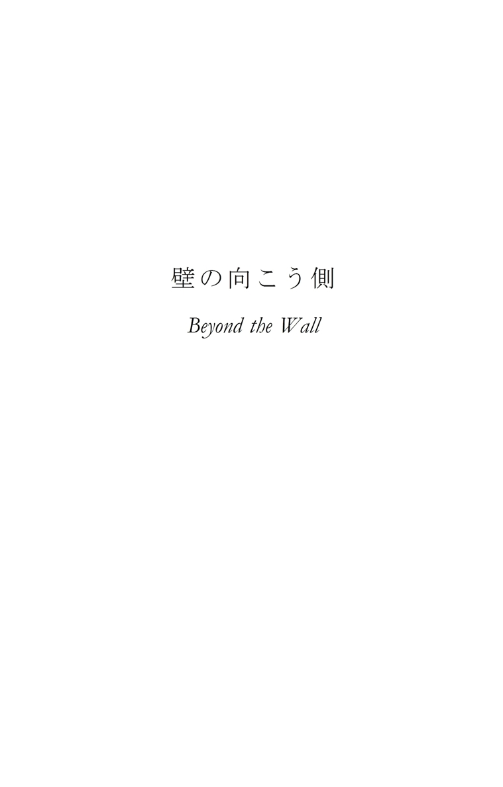
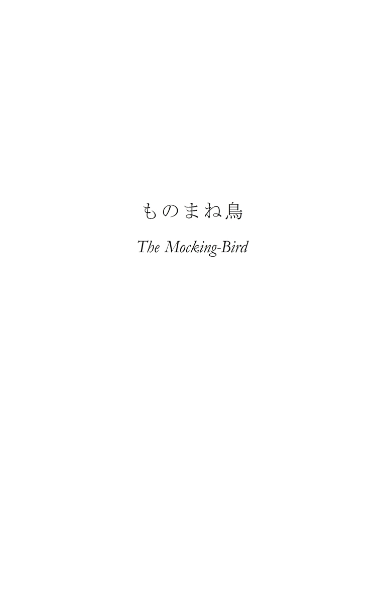

| 兵士たち、幽霊たち ～アンブローズ・ビアス傑作選Ⅰ～ | |
| アンブローズ・ビアス | |
| BOOKSORINDO (2014) | |
・
ジェロム・シアリング二等兵は、この当時ジョージア州ケネソー山およびその周辺で敵軍と対峙していた、シャーマン少将率いる部隊に所属していた。それまで数人集まった士官たちと話をしていた彼は、そちらに背を向けると、横一線に伸びる低い土塁を踏み越えて森の中に姿を消した。土塁の内側に陣取った兵士たちは誰も彼に声をかけず、彼の方もすれ違う男たちに向かって会釈をすることもなかったが、しかしその姿を見た男たちはみな、この勇敢な男が何か危険な任務を託されていることを理解していた。
階級は二等兵ではあるが、シアリングは戦列には加わっていなかった。彼は師団本部付きの従兵である。ひと言に〈従兵〉と言っても、その仕事は広範にわたる。伝令、事務方、将校の付き人――要するに何でも屋である。軍規に記載のない役割を担うこともある。その職務内容は、本人の能力、上官の引き立て、あるいは成り行きによって決定される。卓越した狙撃の能力を持ち、若く、屈強で、頭も良く、恐れ知らずのシアリング二等兵に与えられた役割は、斥候だった。
師団長のシャーマン少将は、自隊が単独ではなく戦線の一部を形成している時でも、前方に何がいるのかを知らされぬままに命令に盲従することを良しとしなかった。また通常の連絡網で伝えられる敵軍の情報にも満足しなかった。軍団長から下されるものや、敵軍と衝突した哨戒隊や散兵たちから上がってくるもの以上の情報を知りたがった。そこで、並外れて勇敢で、山林での行動に長け、目が鋭く口の堅いシアリング二等兵の出番となる。今回の命令は単純だった。敵戦線にぎりぎりまで接近し、可能な限り多くの情報を得ること。
ほどなく、シアリングは本陣の前方に張られた自軍の哨戒線に辿り着いた。当番兵たちは浅い地面の窪みの中で、その穴を掘った土でこしらえた低い土塁を前にして、二人か四人ずつがひと組になって身を伏せており、偽装のために盛られた茂みの青葉のそこここからライフル銃が突き出している。
森は前方に向かって途切れることなく続いていた。それはあくまで厳かで森閑としていて、想像力を働かせなければ、そこが武器を手に目を光らせ、耳をそばだてた兵士たちのひしめく、一触即発の戦闘地帯であるとはとても思えない。こうした射撃壕※１の一つに立ち寄って自らの意図を伝えると、シアリングは地面に手足をついて音もなく這い進み、たちまちびっしりと生えた下生えの中に姿を消した。
「これであいつともお別れだな」兵士の一人が言った。「俺にもああいうライフル銃があったらなあ。俺たちも、ああいう連中にあれでひどい目に遭わされるんだぜ」
シアリングは地面の窪みや藪をうまく利用して身を隠しながら前進した。その目はあらゆるものを察知し、耳はどんな音も聞き逃さなかった。呼吸を整え、膝の下で枝の折れる音がするや、動きを止めて地面に身体を密着させた。地道な行動だったが、退屈ではなかった。危険が血を騒がせ、しかしそれでいて、その興奮はいかなる形でも表に出ることはなかった。脈は規則正しく、神経もツバメを罠にかけてでもいるかのように落ち着いていた。
「ずいぶんと経ったな」彼は思った。「でもそんなに遠くまで来てはいないはずだ。まだ生きているんだからな」
そんな自分の距離の計り方にひとり微笑み、彼はさらに前進した。しばらくすると、突然地面にぺたりと身を伏せ、そのまま長い間微動だにせずに固まっていた。藪の細い切れ目から、低く盛り上げられた黄色い泥土がちらりと目に入ったのだ。次の瞬間、彼は勢いよく立ち上がり、ライフル銃を手にそちらめがけて一気に駆けていた。何をもってそう判断したにせよ、彼の読みは当たっていた。敵はすでにいなかった。
引き返してこの重大な情報を報告する前にしっかりとした確証を得ようと、シアリングは放棄された敵の土塁を越えてさらに進んだ。落伍兵がいるかもしれないと油断なくあたりに目を光らせつつ、木々がまばらになってくると物陰から物陰へと走って移動した。
やがて彼は一軒の農場の端に出た――茨が生い茂り、崩れた外囲いの柵がみすぼらしい。建物の扉は外れ、窓の割れた四角い穴がぽっかりと口を開けている。そうした寂れ、打ち棄てられた家々は、戦争のここ数年よく見かけられるようになった。
若松の木立に身を隠して鋭い目であたりを偵察してから、シアリングは小走りで畑を横切って果樹園を抜けた。すると農場の他の建物から離れたところに小屋が一つあって、そこだけ地面が少し高くなっていた。そこからなら、敵軍が撤退したと思われる方角を広い範囲で見晴らすことができそうである。
それは区切りのない、箱のような造りの建物を四本の支柱で地面から一メートルほど持ち上げた高床式の小屋で、今はほとんど屋根しか残っていなかった。床は抜け落ち、根太や床板がその下の地面にごちゃごちゃと折り重なり、あるいは支柱から完全に外れきらないまま、もう一方の端を地面につけてさまざまな角度に傾いでいる。四本の支柱の方ももはや真っ直ぐ立ってはおらず、指でちょっと触れただけで小屋全体が崩れてしまいそうだった。
この積み上がった根太や床板の陰に身を隠し、シアリングは今自分のいる場所と、一キロほど先に見えるケネソー山の裾野の間に広がる平地を見下ろした。この裾野を横切って山中に続く道が、兵士たちでびっしりと埋め尽くされていた――撤退中の敵軍の後衛である。彼らの持つライフル銃の銃身が、朝陽を受けて輝いている。
これでシアリングは望みうる限りの情報を手に入れた。あとは迅速に部隊に戻り、この発見を報告すれば任務は完了する。しかし、山道をのろのろと登っていく南軍の灰色の隊列は、彼にとっては格好の標的だった。彼のライフル銃ならば（北軍の制式銃である標準型のスプリングフィールド銃だが、照準器を取り付け、遠距離射撃の際に引き金を軽くできるように改造してあった）、ヒュッという音とともに三十五グラムの鉛弾をあの群れのまっただ中に撃ち込むことはわけもない。それが戦争の期間や結果に影響を及ぼすことはないだろうが、しかし兵士の本分とは殺すことである。良き兵士ならば殺しは習性でもある。シアリングはライフル銃の撃鉄を起こし、引き金をいったん前に押し込んで（これで引き金の抵抗がほとんどなくなる）、いつでも撃てるようにした。
しかし、その晴れた夏の朝にシアリング二等兵が誰も殺さないことも、南軍の撤退の報せが彼によって伝えられないことも、時の流れの始めから決定されていたことだった。悠久の昔から、この世の事象は互いにぴったりと組み合わさって壮大なモザイク模様をなしており（われわれが歴史と呼んでいるものは、ぼんやりと判別することのできるそのほんの一部に過ぎない）、今彼が起こそうとしている行動は、そのモザイク模様の調和を乱すことになっていただろう。
二十五年ほど前、この絵模様に則った事象の運行を司る〈力〉は、この異変に対する備えとして、ヨーロッパのカルパティア山脈の麓にある小さな村に一人の男の子を出生させ、慎重に育て上げ、教育を監督し、その子の関心を軍事方面へと導き、やがて砲兵隊の士官に仕立て上げた。この流れを後押しする無数の作用が起こり、さらにそれがその流れに逆らう無数の作用に競り勝ったことで、この士官は軍規違反を犯し、処罰を避けるために故郷を逃げ出すように仕向けられた。彼は（北部州のニューヨークではなく）南部のニューオリンズへと導かれ、その地の船着き場で軍の採用担当官が待っていた。彼は入隊して昇進し、そして事前に定められていた通り、連邦軍の斥候、ジェロム・シアリング二等兵がライフル銃の撃鉄を起こして立っている場所の二キロほど先で、南軍の砲兵隊を率いていた。
何一つ抜かりはなかった――この二人の男の人生、そして彼らの同時代の人々とその先祖たちの人生、さらにその彼らの先祖たちの同時代の人々の人生、そのすべての課程における一瞬一瞬ごとに、望ましい結果をもたらすための正しい選択がなされてきた。この壮大なる事象の連鎖の中で何か一つでも見落とされていたならば、シアリング二等兵はその朝、撤退中の南軍の部隊に向けて発砲し、そしておそらくは狙いを外していただろう。
しかし実際には、その南軍の砲兵隊長は自隊の撤退の番を待つ間、退屈しのぎに野戦砲を斜め右手に向け、とある丘のてっぺんに連邦軍の兵士がいるものと勘違いして、発砲したのだった。砲弾は目標を飛び越えていった。
シアリングがライフル銃の撃鉄を起こし、遠くに見える南軍兵たちに狙いを定めて、どこに弾を撃ち込めば、未亡人を、戦災孤児を、子供を亡くした母親を――あるいはそのすべてを生み出す見込みが一番高いかを考えていると（これまで繰り返し昇進を辞退してきた彼にも、ある種の欲がないわけではなかったのである）、獲物めがけて急降下する巨鳥の羽ばたきのような、何かが空中を勢いよく迫ってくる音が聞こえた。
彼の耳が膨らんでいくその音を感知するよりも早く、耳をつんざく轟音とともに、空からその音の源である砲弾が飛んできた。衝撃が鼓膜を圧し、それは彼の頭上でごちゃごちゃと折り重なった木材を支える柱の一本を粉々に打ち砕いた。崩れかけの小屋はがらがらとけたたましい音をたてて崩れ、埃がもうもうと舞い上がった。
意識が戻った時、シアリングは何が起こったのかすぐには理解できなかった。まず目を開けるまでにしばらく時間がかかった。初めのうち彼は自分が死んで埋葬されたものと思い込んでいて、葬儀の場面を思い出そうとした。妻が自分の墓の前にひざまずいていて、胸にのしかかる重みを感じるのは、土の重みにその体重が加わっているせいだと思った。未亡人と土との重みで、棺桶が押し潰されてしまったのだと。子供たちが妻を説き伏せて家に連れ帰ってくれなければ、まもなく自分は窒息してしまうだろう。彼は理不尽を感じつつ、思った。「あいつにそこをどいてくれって言うわけにもいかないしな。死人に声は出せないんだから。おまけに土でふさがれてしまうから目も開けられない」
彼は目を開けた。下辺を木々のてっぺんに縁取られ、視界いっぱいに青空が広がっていた。手前には、高く、黒っぽい小山があり、その角張った輪郭に、たくさんの直線がごちゃごちゃと複雑に交錯している。そのすべてが計り知れぬほどに遠く――その信じられないほどの広大な距離に、彼は疲労を感じて目を閉じた。
そうした瞬間、目の眩むような光を意識した。低い、一定間隔の音、遠くの海で繰り返し浜辺に砕ける波音に似た音がして、そしてその音の中から、あたかもその一部のように、あるいはその向こうから聞こえてくるのか、その止めどない通奏低音に混じってはっきりとした言葉が聞こえてくる。「ジェロム・シアリング。おまえは袋の中のネズミだ。袋の......な...か...」
突然やってきた深い沈黙と、漆黒の闇と、無限の静寂の中で、シアリングは自分が実際に囚われのネズミであることを悟った。すべてを思い出した今、自分が敵の罠にかかってしまったことを理解し、そして微塵も恐れることなく、偵察のため、敵の兵力を把握するため、防戦の策を練るために再び目を開いた。
頑丈な柱に背中をしっかりと支えられ、上半身を起こした姿勢のまま身動きが取れなくなっていた。もう一本別の柱が胸の上に横たわっており、身体を少しずらすことができたのでもう圧迫感は感じなかったものの、その柱を動かすことはできなかった。その柱とつながっている筋交いと、左側にある木材の山に身体を挟まれているため、左の腕は動かせなかった。わずかに開いた格好で地面に真っ直ぐ伸ばした両脚は大量の廃材に膝まで埋もれており、狭い視界の中、それは地平線にそびえ立つ山のように見える。頭は万力で押さえつけられているかのようにしっかりと固定されている。目は動かせるが、顎は――だめだった。右腕だけが曲がりなりにも自由だった。
「おまえだけが頼りだ」彼はその手に向かって言った。しかし、胸の上に横たわる重い柱の下からその手を引き抜くこともできなければ、肘を十センチ以上外側にずらすこともできなかった。
大きな怪我はなく、痛みもなかった。粉々に飛び散った柱の破片が頭を強打し、これに神経系への急激な衝撃が重なって、一時的に気を失ってしまったのだ。今しがた見た奇妙な夢は意識が戻る前に見たものだったのだが、それも含めて失神していた時間はおそらく数分程度だろう。彼がこの状況を冷静に観察し始めた時、崩落した小屋の埃がまだうっすらと漂っていたのだ。
曲がりなりにも自由な右手で、シアリングは胸の上に横たわっている柱をつかもうとした。しかし、どうしてもできなかった。肩をすぼめることができないため、膝の近くにあるその柱の一方の先端に肘をくぐらせて腕を抜くことができない。それができないと、柱をつかむために肘から先の部分を持ち上げることができないのだ。柱から斜め下方に伸びている筋交いが邪魔をして、腕を内側に曲げることもできないし、柱と身体の間には前腕の半分くらいの隙間しかない。これではどう考えても、手で柱を下から押し上げることも、上からつかむこともできない。そればかりか、指一本触れることすらできない。自らの無力を思い知ったシアリングは柱をどかすことを諦め、今度は両脚の上に積み重なっている木材のどれかに手が届かないだろうかと考え始めた。
手の届きそうな場所を探して木材の山を見つめていると、その注意はすぐ目の前にある輝く金属の輪っからしきものに引きつけられた。最初は何やら真っ黒な物体を囲む、直径にしておよそ一センチ強の輪に見えたが、そこで彼はふと気づいた。その黒いものは物体ではなく陰であり、その輪はなんと、積み上がった木材の中から突き出した自分のライフル銃の銃口なのだということに。しばらくすると、やはりその通りだと確信してすっきりした気分になった――そんな場合ではないのだが。
どちらかの目を閉じると、銃身が少し先の方まで見え――やがてそれは銃を固定している木材の山に埋もれて見えなくなった。右目に見える銃身の右側面は、左目で見た場合の銃身の左側とだいたい同じ角度がついている。右目で見ると、銃口は頭の左側の一点に向けられているように見え、逆の場合もまた同じである。銃身の上面は見えなかったが、銃床の下側はわずかに見上げるような形で視界に入る。要するに、銃口は彼の額の中心にぴったりと狙いを定めているのだ。
現状を把握し、そしてこの物騒な状況に陥る発端となった災難の直前に、自分がライフル銃の撃鉄を起こし、引き金にちょっと触れるだけで発射できる状態にしていたことを思い出して、シアリングは不安に襲われた。とはいえ、彼は勇敢な男であり、この距離で銃口と向き合うことにはそれなりに慣れていたし、さらに言うならば、大砲の砲口を覗き込んだことだってあった。
そこで彼はミッショナリー・リッジ襲撃の際に体験した出来事を懐かしく思い出した。あの時、敵陣の塁壁に穿たれた砲眼の一つを覗き込んだことがあった。こちらの軍勢めがけて次から次へとブドウ弾※２を撃ち出していた敵の重砲が、一瞬引っ込められたように見えたのである。これぞ好機とばかりに近づいてみれば、目と鼻の先に真鍮の輪っかがあった。それが何であるかを悟った彼はとっさに脇に避け、そこからさらに一発、兵隊たちでひしめく丘の斜面めがけて吐き出された鉄の砲弾を間一髪でやりすごしたのだった。火器と――その先で敵意に満ちた二つの眼が爛々と輝く火器と向き合うことは、兵士にとっては日常茶飯事なのである。兵士とはそのために存在する。それでも、さすがに今のこの状況を好ましいとは思えず、シアリングは銃口から目を逸らした。
しばらく右手で当てもなく手探りをした後、今度は左手を自由にしようとしてみたが、だめだった。頭も動かせず、それを押さえつけている物が何なのかわからないせいで、動かないのが余計にもどかしかった。次に脚を引き抜こうとしてみたが、たくましい筋肉に力を込めて動かそうとしていると、脚を押さえつけている木材の山が崩れて銃が暴発してしまうのではないかと不安になった。
小屋が崩れた際の衝撃でなぜ暴発しなかったのかはわからなかったが、記憶を探れば思い当たる例はいくつかあった。その中の一つを心に手繰り寄せてみる。無我夢中で戦っているうちに、彼はライフル銃を棍棒代わりにして敵兵の頭を叩き割ったことがあったが、後になって気づいてみれば、そうやって筒先を持って死に物狂いで振り回していた銃は、火薬と弾薬を詰め、雷管を差し、撃鉄も起こしてあったのだ。もしも相手の兵士がそのことを知っていれば、しめたとばかりにしぶとく粘っていただろう。
これまで彼は、尻の青い新兵時代の失敗を思い出す時にはいつも頬を緩めていたものだったが、しかし今、その顔に笑みはなかった。再びライフル銃の銃口に目を戻すと、一瞬それが動いているような気がした。さっきよりも少し近づいているように思える。
彼は再び目を逸らした。その視線が、遠く、農場の敷地の向こうに見える木々のてっぺんに留まった。これまで気がつかなかったが、それはなんとふわふわとして軽そうなのだろう。空の青がこんなに深かったなんて。枝を透かして見える部分ですら、葉の緑が混じってはいるがやはりきれいな青だ。頭上の空は黒に近い濃紺だった。
「ここはうだるように暑くなるだろうな」彼は思った。「日が昇るにつれて。俺はどっちの方角を向いているんだろう」
視界に入る影の向きから、彼は自分が真っ直ぐ北を向いているのだと判断した。これなら少なくとも陽射しが眼に入ることはないし、それに北は――そう、妻と子供たちのいる方角なのだ。
「ふん！」シアリングは思いを声に出した。「あいつらには関係のないことさ」
彼は目を閉じた。「抜け出せないなら眠っていた方がましだ。敵はいないし、そのうちきっと、味方の連中が食料の調達にここまで出張ってくるだろうから、その時に見つけてもらうさ」
しかし眠れはしなかった。じわじわと、額の痛みが意識されてきたのだ――初めのうちはそれとわからないくらいだったが、だんだんとひどくなってくる鈍い痛みが。目を開けると痛みは消え――閉じると戻ってくる。
「ちくしょう！」苛立たしげにそう言って、彼は再び空を見つめた。鳥たちの歌声が聞こえる。マキバドリの耳慣れない金属的な声音が、ぶつかり合う軍刀の音を思わせる。その歌声に誘われて、彼は少年時代の楽しい想い出にふけり、再び兄や妹と一緒に原っぱを駆けっこし、じっと動かないヒバリを大声で脅かし、その向こうの薄暗い森に入って、〈幽霊岩〉に続く消えかかった踏み分け道をおそるおそる辿り、そしてついに、耳に聞こえるほど心臓をどきどきさせながら、〈死人の洞窟〉の前に立って、謎に満ちたその内奥へと足を踏み入れようとしていた......。
ここでようやく、彼はその呪われた洞窟の入り口が金属の輪っかで囲まれていることに気がついた。と、その輪を残してすべてが消え去り、以前と同じく、ライフル銃の銃口を覗き込んでいる自分がいた。しかし、さっきまでもっと近くにあったように思えたそれは、今はとてつもなく遠くにあるようで、それがかえって不気味だった。彼は悲鳴を上げ、自分の声に込められた何かに――恐怖の響きに――驚き、それを否定しようと嘘で自分をごまかした。
「だって、大声でも出さなきゃ、死ぬまでここから出られないかもしれないからな」
彼はもはや銃口の恐ろしい視線を避けようとはしなくなった。一瞬目を逸らすことがあったとしても、それは何か役に立ちそうな物を探すためで（崩れた小屋の左右どちら側の地面も見えなかったが）、すぐにまた、蛇に魅入られた蛙よろしく視線を戻すのだった。目を閉じることがあったとしても、それは疲労のせいで、そうするとたちまちあの額の鋭い痛みが――銃弾の予感と脅威とがぶり返してきて、たまらずにまた瞼を上げた。
神経と脳ははち切れんばかりに張り詰めていた。ときおり自然と気を失い、その間だけ緊張は緩んだ。一度そうした失神状態から目覚めてみると、右手にずきずきと鋭い痛みがあり、そちらの手を握ったり、指で手のひらを撫でたりしてみると、濡れてぬるぬるとした感触があった。手は見えなかったが、それが何の感触かはわかった。血が出ているのだ。意識が朦朧としているうちにぎざぎざの木片を叩き、細かいささくれだらけのその表面を握ってしまったのだ。
シアリングはもっと男らしく自らの運命に向き合おうと覚悟を決めた。彼は一介の、平凡な兵士に過ぎず、信仰心もなければ、これといった主義主張も持っていなかった。誰か最期の言葉を聞いてくれる者がいたとしても、英雄のように、立派で聡明な遺言を残して死ぬことはできなかったが、それでも最後まで堂々と死んでいくことはできるし、そうするつもりだった。それにしても、いつ弾が飛んでくるかがわかりさえすれば！
小屋に住んでいたらしいネズミが数匹、こそこそと近づいてきて、あたりを動き回っていた。一匹がライフル銃を押さえている廃材の山に登った。続いてもう一匹。さらにもう一匹。初めのうち、シアリングはそれを見るともなしに見ていたが、そのうちに情が沸いてきた。しかし、朦朧とした頭にネズミたちが銃の引き金に触れるかもしれないという思いが一閃すると、手のひらを返したように罵声を浴びせ、あっちへ行けと怒鳴った。「余計な真似をするな！」と。
ネズミたちは去っていった。しかし彼らは後で戻ってきて、彼の顔に群がり、鼻を噛みちぎり、喉笛を掻き切るだろう――シアリングにもそれはわかっていた。その時には自分がすでに死んでいることを願った。
今や、黒々とした銃口を囲む小さな金属の輪から目を逸らすことはどうしてもできなくなっていた。額の痛みは激しく、途切れることがなかった。それが脳の奥へ奥へと食い込んでいき、やがて頭をもたせかけている柱に当たってその進行が止まるのが感じられた。痛みは波が押し寄せるように膨らむことがあった。そうなると、その激痛を打ち消すために、怪我をした手を尖った木片にめちゃくちゃに叩きつけ始めた。
痛みはゆっくりと、一定の間隔を置いてやって来て、一度疼くたびに鋭さを増していくようで、彼はときおりとどめの銃弾が当たったのだと勘違いして悲鳴を上げた。その心の中には、我が家も、妻子も、栄光もなかった。記憶の帳簿はきれいに拭い去られていた。世界は跡形もなく消えていた。ここが、このごちゃごちゃと積み重なる木材の山こそが、唯一の宇宙だった――痛みの一つ一つが永遠の命だった。ズキリ、ズキリと、疼きが永遠を刻んでいく。
ジェロム・シアリングは勇敢で、敵にとっては恐るべき相手であり、たくましく、不屈の闘争心を持つ兵士だった。その彼が今、幽霊のように蒼白な顔をしていた。顎はだらりと垂れ下がり、目は飛び出さんばかりに見開かれていた。身体中の筋肉という筋肉が震え、冷たい汗で全身がぐっしょりと濡れていた。震える声でわめいた――狂気ではなく、恐怖ゆえに。
皮膚が裂け、血の流れる手であたりをまさぐっているうちに、彼はとうとう一枚の細長い木板をつかんだ。引っ張ってみると、それが廃材の山の中で動く手応えがあった。板は彼の身体と平行に伸びており、肘を動かせる範囲で曲げることで、一度に数センチずつ手繰り寄せることができた。
やっとのことで、彼は脚を覆っている廃材の山の中から木板を引き抜いた。これでその細長い木板を丸ごと地面から持ち上げることができる。大きな希望が胸に沸いてきた。このままそれを上の方に、つまり手前に向かって動かしていけば、やがてその先端を使ってライフル銃の銃口を逸らすことができるかもしれない。あるいは、もし銃がしっかりと固定されていて動かすことができないならば、それを楯代わりに使ってもいい。
こうした意図を胸に、彼は木板を少しずつ手繰り寄せていった。呼吸をすればなぜかしらこの企みが露見してしまうような気がして、息を殺した。ライフル銃が、今や不利になりつつある形勢を挽回しようとしているかもしれないと思うと、いよいよそちらから目を離せなくなった。少なくとも、これは良い傾向ではあった。そうして我が身を守るための試みに集中することで、額の痛みはそれほど意識されなくなり、びくびくすることもなくなった。それでも死ぬほど怯えていることに変わりはなく、歯がカスタネットよろしくかたかたと鳴っていた。
木板が手繰っても動かなくなった。力一杯引っ張ったり、右に左にと角度をずらしてみたりしたが、彼の背後で何やら突き出た物体に先端が引っかかっているらしい。木板の反対側の端はまだ銃口よりも向こうにある。銃口どころか、それはまだ廃材に埋もれた銃の用心金のところまでしかきていない。木材の山に混じって、銃のその部分が右の目に少しだけ見えているのだ。
板を折ろうとしてみたが、うまく力が入らない。失意の中、打ちひしがれた心に、先刻までの恐怖がそっくりそのまま、十倍になってぶり返してきた。ライフル銃の黒い銃口が、叛逆の罰としてより厳しく、より間近な死を予告しているかのように見える。頭の中の銃弾の通り穴がさらに激しく痛んだ。彼は再びぶるぶる震え始めた。
ふっと、その顔が穏やかになった。震えは収まった。歯を食いしばり、眉をぎゅっと結んだ。まだ万策尽きたわけではない。新たな考えが一つ、頭に浮かんだのだ――また別の抗戦の一手が。
木板の先端を持ち上げると、彼はそれを廃材に埋もれたライフル銃の側面に沿ってそろそろと動かしていき、用心金に押し当てた。それから先端をゆっくりと横にずらして、それが用心金から離れたのを手の感触で確かめると、目を閉じ、そしてなんと、ありったけの力を込めて木板の先端で引き金を突いた。銃声は鳴らなかった。ライフル銃は小屋が崩れた際、彼の手から落ちた時にすでに暴発していたのだ。しかし、それは的を外してはいなかった。
エイドリアン・シアリング中尉は、ジェロム・シアリングの兄である。彼は弟が任務遂行中に味方の哨戒線を越えていく際に立ち寄った先兵隊の指揮官だった。今、彼は自らの持ち場に腰を下ろし、じっと耳を澄ましていた。鳥の叫び声。リスの鳴き声。松の木々を吹き抜けていく風の音――そのすべてが、不安に過度に張り詰めた彼の鼓膜を震わせた。
突然、持ち場の真っ直ぐ前方で、微かな、込み入った地響きが上がった。建物の崩れるがらがらという音が、距離を経て変容したような音だった。中尉はとっさに懐中時計に目をやった。六時十八分。ちょうどその時、一人の士官が彼の背後に歩み寄って敬礼をした。
「中尉。戦線を前に進めて、もしも敵がいた場合には状況を偵察するようにとの大佐からの命令です。いくつかの情報から、敵軍は撤退したものと考えられます」
中尉は黙ってうなずいた。士官は去っていった。まもなく、下士官たちから通達を受けた兵士たちは射撃壕のそれぞれの持ち場を離れて、歯を食いしばり、緊張に早鐘を打つ心を抱えながら散開した。
互いに間隔を置いて広がった兵士たちは、山の方角に向かって移動しながら農場をくまなく捜索した。とある崩れた小屋の両脇を、彼らは何も気づくことなく素通りしていく。その少し後方を、彼らの隊長がやって来る。彼はその廃材の山をしげしげと見つめ、木板や丸太に半ば埋もれかかった死体が一つあることに気づく。埃にまみれたその軍服は、南軍の灰色である。顔は黄色がかった白。頬は落ち窪み、こめかみも縁の切り立った椀のように丸く陥没しており、そのために額の幅が無気味なほど狭くなっている。上唇はわずかにめくれ、食いしばった白い歯が覗いている。髪はぐっしょりと水気を含み、顔もあたり一面を覆う、朝露に湿った草と同じくらい濡れそぼっている。中尉の立っている場所からはライフル銃は見えない。男は小屋の下敷きになって絶命したように見える。
「死後一週間だな」中尉はむっつりと独りごち、予想していた時間を確かめるかのように、ぼんやりと懐中時計を引っ張り出した。六時四十分だった。
･
サンディエゴ郡のインディアンヒル山から北西に向かって直線距離で約十五キロのところに、マカーガー峡谷はある。たいして大きな谷ではない。木々に覆われた、それほど高くない二つの尾根に挟まれているから谷と呼ばれているだけである。その〈渓頭〉から〈渓口〉まで、つまり谷の始点から出口まで（渓谷も河川と同じで、その各部に固有の名称があるのだ）の距離は三キロにも満たず、谷底の幅もたった一カ所を除けば十メートルしかない。谷底には冬場になると増水し、春が来ると早々に干上がってしまう小川が一本流れているのだが、全長三キロに及ぶ谷筋で、その両岸の地面が平らになっているところはほとんどない。
左右の急峻な斜面には、マンザニタやグリスウッドといったこの地域特有の植物が、足を踏み入れることもできないほどにびっしりと生い茂っており、斜面と斜面の間には川幅分の隙間しかない。周辺に住む冒険心旺盛な猟師がときおりやって来るくらいで、それを除けばマカーガー峡谷に足を踏み入れる者はおらず、五キロも離れてしまえばもう名前すら知られていない。周辺には名前こそないがこの谷よりもはるかに見栄えのする地形があちこちにあるから、この峡谷の名前の由来を地元の人間に尋ね歩いても、徒労に終わるだけだろう。
谷筋の真ん中あたりで右手の斜面が途切れて、そこからもう一つ別の、短く、水も流れていない峡谷が伸びている。この二本の谷の分岐点に二、三エーカーほどの平地があり、数年前にはそこに部屋の一つしかない、木板を組んだ古い小屋が一つ建っていた。いくら数が少なく簡素なものとはいえ、小屋を建てるだけの木材をどうやってこのほとんど立ち入り不可能な場所まで運んできたのかは疑問だが、もしその答えがわかったとしても、自己満足が得られるばかりで何の役にも立ちはしないだろう。
その答えとはおそらく、川床を道代わりに使ったのではないだろうか。この峡谷で一時期、金脈目当ての坑夫たちによって徹底的な試掘が行われていたのは事実なので、彼らには少なくとも、馬やラバに道具や生活用品を載せてここまで運んでくる何らかの方法があったに違いない。しかしどうやら、ここで上げられる利益は、マカーガー峡谷をどこか製材所の恩恵にあずかっている町とつなぐための多額の出費をまかなうには足りなかったようである。
しかしながら、小屋はれっきとしてそこにあった。あばら屋ではあったが。扉も窓枠もなく、石を組んで泥で隙間を埋めた煙突が崩れて殺風景ながれきの山ができ、そこに雑草が生い茂っている。かつてはあったのであろう粗末な調度品と、外壁の下側の木板の大半は、猟師たちの焚き火の薪代わりになっていた。おそらくは古井戸のまわりの木の囲いも同じ道を辿ったのだろう。井戸の方は、少なくともこの物語の当時には、小屋の脇に、かなり幅広の、浅い窪みとなって残っていた。
一八七四年のある夏の午後のこと、私はとある幅の狭い渓谷からマカーガー峡谷に入り、水のない川床を辿っていった。ウズラを撃ちにきていたのだ。前述の小屋に辿り着く頃には、袋の中には十羽以上の獲物が入っていた。
そんなところに小屋があることは、私はその時まで知らなかった。小屋をざっと調べた後で狩りを再開し、大猟に気をよくしてそのまま日暮れ近くまで続けていたが、そこでようやく、自分が人の住んでいる場所から遠く離れたところにいることに思い当たった。日没前に戻るには遠すぎる場所にいることに。しかし、食べるものならば袋の中のウズラがあるし、あの古い小屋に泊まれば風雨をしのぐ屋根も壁もある。そんな必要があればだが。こんな暖かくからりとした夜なら、ここシエラ・ネバダ山脈の麓では松葉に身を横たえ、毛布もかけずに心地良く眠ることができる。
孤独を好み、夜を愛する私はすぐさま外泊することに決め、あたりが暗くなる頃には小屋の隅に木枝と草葉を集めて寝床をこしらえ、炉床に熾した火でウズラを焼いていた。崩れた煙突から煙が外に出ていき、火明かりが部屋を優しく照らす中、私はウズラをあぶり焼きにしただけの素朴な料理を食べ、この一帯には水場がないので、狩りの間水代わりにしていたワインの残りを飲みながら、くつろいだ気分を味わっていた。そんな満足感は、これより上等な宿で、上等な食事をとったとしても、必ず得られるとは限らない。
しかしながら、足りないものもあった。充足感はあっても、安心感はなかった。気がつけば、扉のない戸口と虚ろな窓をわけもなく見つめている自分がいた。この二つの四角い穴の他はすべてが真っ暗で、敵意ある存在に満ちた外の世界を想像すると、不安が押さえがたく頭をもたげてくる。自然界の敵、そして超自然の敵――それぞれの筆頭格を挙げるならば、自然界ならばハイイログマで、これは今でも時おりこのあたりをうろついているところを目撃されることがあるのは知っていた。
そして超自然の方では幽霊だが、こちらはまあ、そうそうお目にかかることはないだろう。しかしながら、あいにく人の心の働きというのは必ずしも確立の法則に従ってくれるものではなく、その夜の私にとっては、ありそうなこともありそうにないことも同じくらい気味悪く思えた。
このような体験をされたことのある方ならばきっとおわかりいただけるだろうが、こうして現実の、あるいは想像上の夜の危険に向き合う際には、外にいるよりも、戸のない家の中にいる方がはるかに大きな不安を感じるものである。私は今、小屋の隅、煙突の隣でがさがさ音をたてる寝床に横たわり、消えていく炎を見つめながらその不安を感じていた。そこに何か悪意ある、恐ろしいものがいるような気配をあまりにも強く感じたため、私は濃さを増す暗闇の中にさらに溶け込んでいく戸口から目が離せなくなった。
そしてとうとう、小さくなった炎がちらちらと揺らめいて消えると、私は脇に置いていた散弾銃をつかんで今はもう見えなくなった戸口に銃口を向け、いつでも撃てるようにと撃鉄に指をかけ、息を殺し、筋肉を固く張り詰めさせた。
しかし、しばらくするとそんな自分が恥ずかしく、不甲斐なく思えてきて、銃を下ろした。おまえは何を怖がっているのだ？ なぜ？――夜を「人の顔よりも親しく」※３感じるおまえが。人は誰もが、生まれながらにして迷信という逃れることのできない性を抱えているが、おまえの場合はかえってそれがあるがゆえに、孤独と暗闇と沈黙とによりいっそうの魅力を感じ、心を惹かれているのではないか。私は自らの愚かさが理解できず、あれこれと考えているうちに何を考えているのかわからなくなって、そのまま眠ってしまった。そして夢を見た。
私は外国の大きな街にいた――人種は同じなのだが、話す言葉や着ている服に若干の違いのある人々の住む街に。とはいえ正確に何が違うのかははっきりとはわからなかった。街の人々はぼんやりと意識されるだけだったのだ。見上げると、街を見下ろす小高い丘に大きな城が建っており、その丘の名前は知っていたが思い出せなかった。
私は数多くの通りを歩いた。広く真っ直ぐで、高く近代的な建物に挟まれた通りもあれば、狭くて薄暗く、曲がりくねった通りもあって、こちらは道の両側に風変わりな古い家々が立ち並び、上の階は木材や石材に凝った装飾が施されていて、私の頭上で触れ合わんばかりにせり出していた。
私は一度も会ったことはないものの、見ればそれとわかるはずの誰かを捜し求めていた。その道行きは当てのない、偶然任せのものではなかった。そこにははっきりとした目的があった。私は迷路のように入り組んだ街並みを、道に迷うのではないかと心配することもなく、通りから通りへとずんずん進んでいった。
ほどなく、私は暮らし向きの良い職人の住居らしき、質素な石造りの家の低い玄関扉の前で立ち止まり、名も告げずに中に入った。調度類の少ない室内はいささかがらんとした感じで、小さな菱形の板ガラスの並ぶ、一つしかない窓から射し込む光の中に、男が一人と女が一人いるだけだった。二人は勝手に入ってきた私には目もくれなかったが、これは夢の中ではとりわけ不自然な状況ではない。二人は言葉を交わしてはいなかった。離れて腰かけ、何もせずにただむっつりとしていた。
女の方は若く、ふくよかで、大きなきれいな目と、凛とした感じの美しさの持ち主だった。彼女が浮かべていた表情はひときわ鮮明に記憶に残っているのだが、しかし夢の中ではよくあるように、顔そのものの細かな造作はぼんやりとした印象しかない。肩には格子柄のショールをかけていた。
男の方はそれよりも年上で、色黒で性悪そうな顔をしており、左のこめかみのあたりから黒々とした口髭まで、頬を斜めに横切る長い傷跡が、その顔にさらなる凄みを与えていた。夢の中では、その傷はそこについたものというよりもむしろ（他にうまい表現が見つからないのだが）、別の物がそこに取り憑いているかのように見えた。この男女を見た瞬間、私には二人が夫婦だとわかった。
次に起こったことを、私はぼんやりとしか覚えていない。記憶にある映像は何もかもが錯綜していて、一貫性がないのだ。おそらく、意識に覚醒の光が射しかけていたせいだろう。それはまるで、夢の中の場面と、現実の私を取り巻く風景、これらが二枚の絵のように互いに重なり合い、やがて夢の映像が次第に薄くなって消えていくと、私は誰もいない山小屋の中で一人ぱっちりと目を覚まし、自分のいる状況を完全に、冷静に自覚していた。
先ほどの愚かしい恐怖は消えていた。目を開けると、焚き火はまだすっかり燃え尽きてはおらず、一本の枝が中に落ちて再び火勢を増し、室内を照らしていた。おそらく眠っていたのはほんの数分のことだろうが、それでも今のありふれた夢の余韻はあまりにも強く、眠気は消えてしまっていた。しばらくすると私は立ち上がり、燃えさしを一カ所にまとめてパイプに火を点けると、今見た夢の光景について、いささか馬鹿馬鹿しいほど念入りに考察し始めた。
その時は、あの夢のどこにそれだけの価値があるのかと問われても答えに窮していただろう。そうやって真剣に考え始めてすぐ、夢に出てきたあの街がエディンバラだということはわかったが、しかし私はそこに行ったことはなかった。あの夢が記憶に基づいてつくられたものだとするなら、それは絵で見たか、本で読んだ記述の記憶ということになる。
街の風景に見覚えがあったというこの事実は、なぜかしら私の心に深く根を下ろした。まるで私の心の中の何かが、私の意志と理性とに背いてこの件の重要性を主張しているかのように。さらに、それがどういう性質のものであれ、この直感は言葉を発する力まで掌握してしまった。「確かに」と、私は声に出して言っていたのである。「マクレガー夫妻はエディンバラからここにやって来たんだものな」
その時は、この発言の内容にも、自分がそれを口にしたという事実にも、私はこれっぽっちも驚かなかった。夢に出てきたあの男女とその来歴を、自分がいくらかなりとも知っているのはいたって自然なことに思えたのだ。
しかし、すぐに何もかもが矛盾していることに気づいた。私は声を出して笑い、パイプを叩いて灰を落とすと、木枝と草葉の寝床に寝そべって、それ以上あの夢のことも今の状況のことも考えず、横になったまま消えていく炎をぼんやりと見つめていた。
突然、残っていた火が小さくなったかと思うと、燃えさしから跳ね上がるようにしてぱっと宙に浮き上がり、消えた。暗闇が小屋を包み込んだ。その瞬間――炎の残像が私の目から消えるか消えないかのうちに――鈍い、幽かな音が聞こえた。さながら何ものかの重い身体が床に倒れたような音で、床に横たわる私にもその振動が伝わってきた。
私は跳ね起き、脇に置いてあった散弾銃を手探りした。野生の獣か何かが開いた窓から飛び込んできたと思ったのだ。振動が崩れかけの小屋に広がり、そしてその揺れがまだ収まらぬうちに、今度は何かを殴りつける音がし、床の上で揉み合う足音が聞こえた。そしてさらに――それは私の手の届く範囲から聞こえてくるかのようだった――女性の断末魔の鋭い悲鳴も。それはこれまで聞いたことも、想像したこともないようなおぞましい叫び声だった。
私はすっかり怖じ気づいてしまった。しばらくの間、意識が恐怖一色で染まってしまうほどに。さいわい、そこで探していた銃に手が当たり、その馴染んだ手触りに私はいくらか落ち着きを取り戻した。私は勢いよく立ち上がり、闇に目を凝らした。今しがたの争うような物音はもう聞こえなかったが、今度はそれよりもさらにおぞましい音が聞こえてきた。長い間隔を開けて途切れ途切れに上がる、瀕死の何ものかの喘ぎ声が。
暖炉の熾火の薄明かりに目が慣れてくると、まずはじめに、真っ黒な壁よりもさらに黒い、戸口と窓の四角形が見えてきた。次に壁と床の区別がつくようになり、そしてとうとう、床一面が隅から隅まではっきりと見えるようになった。しかし目に映るものはなく、沈黙が破られることもなかった。
片手に銃を持ったまま、私は小刻みに震えるもう一方の手で今一度火を熾し、小屋の中を徹底的に調べた。屋内に何ものかが入ってきた形跡はどこにもなかった。床を覆う埃に私自身の足跡はついていたが、それ以外の跡はなかった。私は再びパイプに火を点け、内壁の木板を一、二枚はぎ取って火にくべ（外に出る気にはなれなかったのだ）、煙草を吸いながら考えごとをし、時おり火に薪を足して朝までの時間を過ごした。命に代えても、もう二度と再び、焚き火の小さな炎を絶やすつもりはなかった。
数年後、私はサンフランシスコに住む友人の紹介で、サクラメントのモーガンという男に会った。ある晩彼の自宅に夕食に招かれた私は、壁に飾られたさまざまな「戦利品」を見て、彼が狩り好きであることを知った。
氏は確かに狩りが好きで、自分の挙げた手柄をいくつか披露してくれたのだが、その話の中に私が右に記した体験をした地域が出てきた。
「モーガンさん」私は出し抜けに尋ねた。「あのあたりにマカーガー峡谷という場所があるのをご存じですか？」
「知っているも何も、去年、あそこで骸骨を見つけた記事を新聞社に寄稿したのは私なんですよ」
初めて聞く話だった。どうやらその記事は私が東海岸にいてこちらを留守にしている間に発表されたものらしい。
「ところで」モーガン氏は言った。「マカーガーという名前は、元々の〈マクレガー峡谷〉が訛ったものでしてね。おや、おまえ」と、ここで彼は細君に向かって言葉を足した。「エルダーソンさんがワインをこぼしてしまったよ」
ずいぶんと控え目な表現である――私はグラスごと落っことしてしまったのだから。
「昔、あの峡谷には古い小屋が一軒建っていましてね」私の粗相で汚れたところが拭き取られると、モーガン氏は話を再開した。「しかしですな。私が訪れる直前に小屋は吹き倒されてしまいまして。吹き飛ばされたと言った方がいいですかな。残骸があちこちに散乱して、床も剥がれて、まだ残っている二本の根太の間に、私ともう一人の狩り仲間は格子柄のショールの切れ端を見つけましてね。調べてみると、これが女性の遺体の肩に巻きつけてあったんですな。遺体はほとんど骨だけになっていまして、ところどころ衣服の断片と、茶色く干からびた皮膚が残っていました。しかしまあ、家内の前でこんな話もなんですから」彼は微笑みながら話を締めくくった。確かに、夫人は同情よりも不快そうな素振りを見せていたのだった。
「しかしながら、これは言っておかなければなりませんが」モーガン氏の話は続いた。「頭蓋骨が何カ所か割れていたんです。鈍器のようなもので殴られたようでした。そしてまさにその凶器が――つるはしの柄でしてな、血がこびりついていました――床下の遺体のそばに転がっていたんです」
モーガン氏は細君に向かって、「すまないね、おまえ」と、神妙な風を装って言った。「食事中にこんな話をして。これは夫婦喧嘩の末の、残念とはいえ、起こるべくして起こった事件だよ。この気の毒な奥さんは、きっと夫の言うことを聞かなかったんだろうねえ」
「どうぞどうぞ。続けてくださいな」夫人は澄ました顔で答えた。「その同じ台詞、もう何度目ですやら。ちゃんと黙っていますわ」
モーガン氏は話を続けることができてずいぶんと嬉しそうだった。「今お話しした証拠と、さらに他の状況から、検死陪審は死亡したジャネット・マクレガーは、陪審の知らない何者かによって殴り殺されたという判断を下したんですな。判決ではさらに、証拠は夫のトーマス・マクレガーが犯人であることを強く示している旨を特記しています。しかし、このトーマス・マクレガーはまったく消息がつかめんのですな。夫妻がエディンバラ出身であることはわかっておるのですが、しかしまったく――ねえおまえ。エルダーソンさんの骨取り皿に水が入っていないかね？」
私はフィンガーボウルに鶏の骨を入れてしまったのだ。
「小さな戸棚の中に旦那の方の写真があったんですがね、それも逮捕にはつながりませんでした」
「その写真、見せていただけませんか」私は言った。
写真の中の男は色黒で性悪そうな顔をしており、こめかみのあたりから黒々とした口髭まで、頬を斜めに横切る長い傷跡が、その顔にさらなる凄みを与えていた。
「ところで、エルダーソンさん」愛想のいい主人は言った。「どうしてマカーガー峡谷のことをお尋ねになったのか、教えていただけませんかな」
私は答えた。「昔あの近くでラバをなくしたことがありまして......。あの時の災難から――まだその――立ち直れないのです」
「ねえ、おまえ」モーガン氏は外国語の通訳のような機械的な調子で言った。「エルダーソンさんのいなくなったラバのせいで、コーヒーに胡椒が入ってしまったよ」
･
Ⅰ
一八六一年秋のある晴れた午後、バージニア州西部のとある山道沿いにある月桂樹の木立に、一人の兵士が横たわっていた。腹這いになって脚を伸ばし、地面に爪先を立て、左腕に頭をのせている。伸ばした右手はライフル銃を軽く握っている。しかし、手足の格好にはどことなく整然とした雰囲気があり、ベルトの腰に付けられた弾薬嚢も心なしか規則正しく上下しているように見える。この二点がなければ、彼は死んでいると思われていたかもしれない。この兵士は持ち場で居眠りをしているのである。これがもし発覚すれば、彼はほどなく実際に死ぬことになっただろう。死刑は今彼の犯している罪に対する、公正にして法的な罰なのである。
山道は渓谷の険しい南斜面をその地点まで上り、そこで急に西に折れて尾根沿いに百メートルばかり伸びているのだが、この戦犯が横たわっている月桂樹の木立はその曲がり角にある。その先で道は再び南に折れて、くねくね曲がりながら森の中を下っていく。
その二度目の曲がり角には、平たい大岩が崖の淵から突き出して深い渓谷を見下ろしており、そこからならば件の山道が斜面を伝って谷底まで続いているのが見える。岩は高い崖に蓋をするように、そのてっぺんに鎮座している。その端から石を落とせば、それは眼下に広がる松の木々の梢に向かって、真っ逆さまに三百メートル落ちていくだろう。
兵士の寝そべっている場所は、その同じ崖に張り出した別の突出部にある。彼がもし目を覚ましていたならば、その短い崖沿いの道と、その先に突き出した大岩だけでなく、その下に続く絶壁を上から下まで一望することができただろう。その光景に目を回していたかもしれない。
渓谷は一面木々に覆われているが、ただ一カ所だけ、谷底の北側に小さな天然の草原があり、そこに小川が一本流れているのが崖の上からかろうじて見える。この林間地は一見すると一般的な裏庭ほどの大きさしかないが、実際は数エーカーの広さがある。その部分の緑色は、ぐるりを囲む森の緑よりも鮮やかである。
その向こうには、この荒涼たる景色を眺望しているわれわれの視点のあるこちら側の崖と同じように、巨大な崖が壁のようにそびえ立っている。そして渓谷のこちらの側の斜面には、前述したように山道が頂上まで続いている。なるほどこの渓谷の地形は、この観察地点から見る限りでは四方をぐるりと崖に囲まれているように見えるため、その外へと通じるこの道はそもそもどこから入ってきたのか、あるいは三百メートル下方に見える草原を二分している小川はどこから始まり、どこに流れていくのかと、不思議に思わずにはいられない。
どれほど荒涼として過酷な土地であろうとも、人は戦争の舞台にしてしまう。わずか五十名の兵士で逃げ道を封じてしまえば軍隊一個を兵糧攻めにして降伏させることのできる、この軍事的ネズミ取りとも言うべき渓谷の底の森に、北軍の歩兵連隊五個が潜伏していた。
その前日、昼夜を通して行軍を続けてきた彼らは、今は休息しているところである。日没とともに部隊は進軍を再開し、あの怠惰な見張りの兵士が居眠りをしている地点まで山道を上り、尾根を越えて反対側の斜面を下り、真夜中頃に敵陣を襲撃する。奇襲作戦である。その道は敵の野営地の背後に通じていた。これが失敗した場合、彼らのいる状況は一転して極めて危険なものになる。そしてもし仮に偶然か、あるいは哨兵に発見されて敵に動きを知られてしまえば、この作戦は確実に失敗に終わるだろう。
Ⅱ
月桂樹の木立で居眠りをしている先兵は、バージニア州出身のカーター・ドルーズという名の青年である。彼は裕福な両親の一人息子で、バージニア州西部の山岳地帯において、富と良い趣味とを持つ者に許されるだけの自由と教養と贅沢な暮らしをほしいままにしていた。ちなみに彼の生家は、今彼が横たわっている場所からわずか数キロのところにある。ある朝、朝食の席で立ち上がった彼は、静かな、しかし真剣な口調でこう言った。「父さん、グラフトンに連邦軍の部隊が到着したんだ。僕は入隊するつもりです」
父親はその獅子のような頭をもたげてしばし黙って息子を見つめ、やがて答えた。「いいだろう。行きなさい。そして何があろうとも、自分の義務だと思うことを全うするのだ。おまえが背を向けたバージニア州は、これからはおまえなしでやっていかなければならん。もし二人とも生きて終戦を迎えることができたなら、この話の続きをしよう。医者から聞いている通り、おまえの母さんは極めて危険な状態にある。われわれと一緒にいられるのも長くて数週間だろう。それは貴重なひとときだ。母さんには黙っておいた方がいいだろう」
かくして、カーター・ドルーズは父親に恭しく頭を下げ、傷ついた心を丁重ながらも威厳のある態度で隠してお辞儀を返した父を残して、北軍に入隊するために生まれ育った家を後にした。その公正さと勇気、そして任務に忠実で果敢な行動によって、彼はほどなく戦友や上官たちから一目置かれるようになっていった。そして、彼が最前線の持ち場で現在のこの危険な任務を与えられたのは、そうした兵士としての資質と、この地域の土地勘があることを買われてのことだった。
にもかかわらず、その強い意志の力も疲労には勝てず、彼は眠りに落ちてしまった。その夢の中に現れ、戦争犯罪に当たる現在のこの状況から彼を目覚めさせてくれたのは、いかなる天使だったのか――それとも、それは悪魔だったのだろうか。動く気配もなく、物音もたてず、深い静寂と夕暮れ時の森閑たる空気の中、運命の使者のような何ものかが、彼の意識の瞼にそっと指を触れたのだろうか。彼の耳に、これまで何人たりとも口にしたことがなく、何人も記憶に留めていない謎めいた覚醒の言葉を囁きかけたのだろうか。ドルーズは腕にのせていた額を静かにもたげ、身を隠していた月桂樹の木々を見回し、無意識のうちに右手でライフル銃の銃床を握った。
最初に感じたのは美しいものを見た時の感動だった。崖を巨大な台座代わりにして、あの大岩の突端の上に、夕空を背景に不動の影絵のようにくっきりと浮かび上がっているのは――威風堂々たる騎兵の彫像だった。馬にまたがった人は軍人らしく背を真っ直ぐに伸ばしていて、そのギリシャ神の大理石像を思わせる静かなたたずまいが、血の通った生身の人間の漂わせる気配を希薄にしている。灰色の軍服は背景の暮空に溶け込んでいる。装備品と馬具の金属部分が、逆光の中、鈍く、うっすらと光を帯びている。馬の肌には光は当たっていない。驚くほどに短く切り詰められた騎兵銃が一挺、鞍の先端部に横向きにのせられており、銃把の部分を握った騎兵の右手で押さえられている。手綱を握っている左手は見えない。夕空を背にした馬の横向きのシルエットが、カメオ細工のようにくっきりと浮かび上がっている。馬は高き虚空を挟んで向かいにそびえる崖を見ている。わずかに背けられた乗り手の顔は、こめかみと顎髭の輪郭しか見えない。こちらは下方の谷底を見ている。この高さで空を背にしているせいと、近くの敵の手強さを告げ知らせる戦士の本能によって、兵士とその馬は実際よりも大きく、ほとんど二倍の大きさに見えた。
一瞬、ドルーズは自分が終戦まで眠っていて、今はこの高い崖の上に建立された、自らもささやかながらその一端を担った過去の勇壮なる戦争の記念碑を見ているのだという、奇妙な、ぼんやりとした感覚を抱いた。が、その感覚は人馬のわずかな動きによって消え去った。脚の位置はそのままに、馬が岩の端からわずかに身を引いたのだ。兵士の方は不動のままだった。
眠気も覚め、この状況の意味合いを鋭く察したドルーズは、藪の中でライフル銃を慎重に前に押し出して銃床の側面を頬に引き寄せ、撃鉄を起こし、照準器越しに騎手の心臓に狙いを定めた。あとは引き金に軽く触れさえすれば、すべて片はつく。その瞬間、その騎兵が首を巡らせ、身を潜めている彼の方を見た――ドルーズの顔を、目を、その勇敢で、慈しみ深い心の中を覗き込むかのように。
そもそも、戦時中に人を殺すことはそれほど悪いことなのだろうか――自分自身と仲間の安全にとって極めて重要な秘密を知った敵を殺すことは。それを知ったことによって、敵全体よりもさらなる脅威となった一兵士を。ドルーズの顔から血の気が引いた。全身ががたがた震え、意識は遠くなり、目の前にいる彫像のような馬と兵士が、夕焼け空の中、さながら回転木馬の黒い人形のように、浮き沈みしながらぐるりぐるりとぎこちなく回っていた。彼は銃を握っていた手を放し、頭をゆっくりと垂れて、やがてその顔が、身を横たえている落葉の上に伏せられた。勇敢な紳士であり、屈強な兵士である彼は今、あまりに激しい心の葛藤に気を失いそうになっていた。
それも長くは続かなかった。やがて地面に伏せられていた顔はもたげられ、両手は再びそれぞれライフル銃の所定の位置に戻され、人差し指が引き金にかけられた。意識にも、心にも、目にも、今はもう曇りはなく、良心にも判断力にも迷いはなかった。あの敵兵を捕まえることは望むべくもない。警戒させれば、その致命的な情報を携えて陣地に逃げ込まれてしまう。ドルーズに課された責務は歴然としていた。あの兵士を、この潜伏地点から射殺しなければならない――警告もなく、一瞬たりとも心の準備をする猶予を与えず、胸に祈りの言葉すら浮かばせることなく、あの敵兵をあの世に送らなければならない。
いや、まだ望みはある。あの兵士は何も気づいていないかもしれない。ひょっとしたら、あの男はただこの雄大な景色に見とれているだけなのかもしれない。見逃してやれば、馬の向きを変えてのんびりともと来た道を引き返していくかもしれない。男があの場所を去る瞬間になれば、あの男がこちらの状況に気づいているかどうかを判断することができるだろう。
そう、心配することはない。きっと、あの男がじっと注視しているのは――ドルーズはうつむき、水面から透明な海の底を見透かすように、眼下の大気の深みを見下ろした。緑の草原をくねくねと一列になって横切る兵士たちの姿が見える――どこかの愚かな指揮官が、護衛の者たちに開けた場所で馬に水をやる許可を出したのだ。崖の上のあちらこちらからはっきりと見えるところで！
ドルーズは谷底から、空を背にした兵士と馬に目を戻した。再びライフル銃の照準器越しに。しかし今回、彼が狙いを定めたのは馬の方だった。彼の記憶に、さながら神託のごとく、別れ際の父の言葉が鳴り響いた。「何があろうとも、自分の義務だと思うことを全うするのだ」
心は穏やかだった。しっかりと、しかし力みすぎぬ程度に歯を噛みしめた。神経は眠っている赤子のように安らいでいた。ゆっくりと規則正しい呼吸が、狙いを定める直前に止められた。義務感が情に打ち勝ったのだ。心が身体にこう告げていた。「落ち着け。じっとしていろ」
彼は引き金を引いた。
Ⅲ
北軍の士官が一人、冒険心に駆られたのか、あるいは偵察のためか、谷間の秘密の野営地を出てあてもなく崖下近くにある林間地の南端に向かい、そこで彼はこれ以上この探索を続けて何か得るものがあるだろうかと考えていた。
約五百メートル前方、一見したところでは石を投げれば届きそうな距離に、足下を松林に縁取られた巨大な岩壁がそそり立っていた。空にくっきりとぎざぎざの線を描くその頂上を見上げた彼は、天を突かんばかりのその高さにめまいを覚えた。崖はそこから中ほどまでは青空を、そこから下は空と変わらぬ青さの遠くの丘を背景にして、そのまま谷底の松の森まで垂直に伸びている。
今、目が眩むほどの高さにあるそのてっぺんを仰ぎ見た士官の目に、驚くべき光景が飛び込んできた――男が一人、馬にまたがったまま、谷底めがけて空中を駆け下りてくるではないか！
乗り手は軍人風に背筋を真っ直ぐに伸ばし、鞍にしっかりとまたがって、馬が勢いよく跳び出さないようにと手綱をぎゅっと握りしめている。帽子はかぶっておらず、上方になびく長い髪が、風に吹かれて鳥の羽根のように揺らめいている。両手はふわりと逆立った馬のたてがみに隠れて見えない。馬の身体はまるで蹄のひと蹴りひと蹴りがしっかりと地面を踏みめているかのごとく、水平になっている。その動きは全速力で駆ける際のそれだったが、しかしそれは士官の見ているその最中に、あたかも跳躍から着地するかのごとく、四肢を前方いっぱいに伸ばしたまま静止した。しかしこれは跳躍などではない、飛翔ではないか！
空中に突如現れた騎兵の姿を見た士官は驚きと畏怖の念に打たれ、自分が何か新たな黙示録の記録者として選ばれたのだと半ば信じつつ、心に受けた衝撃のあまりの大きさに膝から力が抜け、その場にくずおれた。それとほぼ同時に、森の中で何かの衝突する音がし――その音は反響一つなく消え――やがてあたりは静まり返った。
士官は震えながら立ち上がった。向こう臑を打ちつけたお馴染みの感覚に、呆然としていた意識から我に返った。気を取り直すと、彼は崖下とは反対の方向に斜めに向かって慌てて駆け出した。そのあたりにさっきの人馬がいるだろうと思ったのである。
しかし当然のことながら、そのあたりには誰もいなかった。あの光景を目にしたほんの一瞬の間、驚嘆すべき軽業をこなす乗り手の、見るからに優雅で、悠然として、それでいて集中力に満ちた姿が心に強烈に焼き付いていたので、虚空を駆ける騎兵の進む方向が真下であるということ、そして自分の探しているものが崖の麓にあるということに思い至らなかったのだった。三十分後、彼は野営地に戻った。
この士官は聡明な男で、いくら真実とはいえども信じられないような話をしても無駄であることはわきまえていた。そこで自分の見たあの光景については他言しなかった。しかし指揮官から、偵察中に何か今回の作戦に有益な情報を得られたかどうかを尋ねられると、彼はこう答えた。
「はい。南側からこの渓谷に下りてくる道はありません」
そうではないことを知っている指揮官は、黙って微笑んだ。
Ⅳ
狙撃を終えると、カーター・ドルーズ二等兵はライフル銃を再装塡し、見張りを再開した。十分と経たないうちに、同じ部隊の軍曹が一人、腹這いになってそろそろと近づいてきた。ドルーズはそちらを振り向きもせず、相手に気づいた様子もなくじっと横たわっていた。
「発砲したか？」軍曹が囁いた。
「はい」
「標的は？」
「馬です。あそこの――ほら、大きく張り出した岩があるでしょう。あそこに立っていたんです。どうです、もういないでしょう。崖から落ちたんです」
ドルーズの顔は真っ青だったが、それ以外にはいかなる感情も浮かんではいなかった。返事を済ませると彼は目を逸らし、それ以上何も言わなかった。軍曹はわけがわからなかった。
「いいか。ドルーズ」しばしの沈黙の後、軍曹は言った。「謎かけをやっているんじゃないんだ。命令だ。報告しろ。その馬には誰か乗っていたのか？」
「はい」
「それで？」
「私の父でした」
軍曹は立ち上がり、その場を去った。「なんてこった！」
･
Ⅰ
マントンの古屋敷に幽霊が出ることはよく知られている。近隣の田園地帯でも、あるいは一キロ半離れたマーシャルの町でも、先入観のない人間でそれを疑う者は一人としていない。それを信じないのは、いずれ「変人」という便利な言葉がマーシャルの地方紙『アドバンス』の知的領土たる紙面に浸透する頃には、その名で呼ばれることになるであろう偏屈者たちばかりである。
屋敷に霊が出ることについては、二種類の証拠がある。一つは実際に目撃した公正な第三者による証言、そしてもう一つは屋敷それ自体の物語る証言である。前者は口の達者な者から寄せられるであろうさまざまな観点からの反論によって覆され、黙殺され、除外されることもあるかもしれない。しかしすべての証言に共通する事実は重要であり、また決定的なものである。
まず第一に、マントン邸は十年以上空き家のままになっており、離れの家屋もゆっくりと廃れつつあること――この状況だけをとっても、思慮深い者ならば見逃すことはできないだろう。屋敷はマーシャルとハリストンを結ぶ街道周辺のひときわ寂れた区域に、道路から少し奥まったところに建っている。もともと農場だった敷地は、朽ちかけた柵の残骸が殺風景で、長らく耕されていない、石のごろごろ混じる痩せた地面は伸び放題の茨で半ば覆われている。
屋敷自体の状態はそれほど悪くないものの、風雨に晒された壁は染み汚れがひどく、窓などはガラス屋に徹底的に修繕してもらう必要がある。これはこの地域の一部の男子、すなわち悪童たちが、彼らなりのやり方で空き家に対する反発を表明したせいである。
建物は二階建てで、ほぼ正方形をしており、正面に出入り口が一つあって、その左右に一つずつある窓はてっぺんまで木板でふさがれている。二階にも同じ位置に窓があるが、こちらはふさがれておらず、そこから上階の部屋に光と雨が降り注ぐ。庭はいたるところ雑草が生い茂っており、数本の日除けの木々が、風に吹かれていくぶんやつれた様子で、まるで一緒に逃げ出そうとでもしているかのように、そろって同じ方向に傾いでいる。
要するに、『アドバンス』紙の記事に書かれたように、「マントン邸が幽霊屋敷であるという主張は、与えられた前提から導き出される唯一の論理的結論」なのである。十年ほど前、この屋敷の主のマントン氏が夜中に寝床を出て細君と二人の小さな子供の喉を掻き切り、すぐさま他所の土地に逃げたという事実も、人々の目にこの屋敷が超常現象が起きるにふさわしい場所として映るのに一役買っていることは間違いないだろう。
とある夏の晩のこと、この屋敷に四人の男が荷馬車で乗り付けた。三人はすぐさま車を下り、そのうち御者台に乗っていた一人が、一本だけ残った柵の杭に馬をつないだ。四人目の男は荷台に座ったままだった。
「さあ」一人が男に歩み寄って声をかけ、残りの二人は建物の方に向かった。「着いたぞ」
話しかけられた男は荷台から動かず、声を荒げて言った。「畜生！ これは罠だ。あんたもぐるなんだろう」
「かもな」こちらの男は相手の顔を真っ直ぐに見つめたまま、わずかに侮蔑の混じる口調で答えた。「でも、あんたも忘れてはいないだろう。場所は相手の側が決めるということでそっちも納得したじゃないか。もちろん、お化けが怖いっていうんなら――」
「俺は何も怖くなんかない」男は相手の言葉にかぶせるように再び怒鳴り、地面に飛び降りた。それから二人は玄関前で残りの二人に合流した。錠前と蝶番が錆びていたので手こずったものの、扉は待っていた二人のうちの一人がすでに開けていた。一同は屋敷の中に入った。
中は暗かったが、玄関扉を開けた男が蝋燭とマッチを取り出して明かりを点けた。それから彼は廊下の右手の扉の鍵を開いた。戸口の向こうに、蝋燭の火明かりの中、大きな正方形の部屋がうっすらと浮かび上がった。床は分厚い埃の絨毯に覆われ、男たちの足音はいくらかくぐもった響きになった。部屋の隅に張られた蜘蛛の巣が朽ちたレースの切れ端のように天井から垂れ下がって、乱された空気の流れにうねるように動いた。接し合う二面の壁にそれぞれ窓が一つずつあったが、どちらからも、ガラス板のすぐ向こうにある目張り板のざらざらとした表面しか見えなかった。暖炉も調度類もなかった。何もなかった。蜘蛛の巣と埃を除けば、四人の男たちはその部屋の唯一の異物だった。
蝋燭の黄色い火影に四人の男が浮かび上がる様は、なんとも異様な光景だった。とりわけ荷馬車から下りるのをひどく躊躇っていた男が目を引いた――目を見張るほどに。中年の、がっちりとした体格の男で、胸板は厚く、肩幅も広かった。身体つきからして、いかにも怪力の持ち主のようである。そして顔つきからするに、いかにもその力を容赦なく振るいそうに見える。
髭はきれいに剃られ、灰色の髪はかなり短く刈り込まれている。低い額には左右の目の上にしわが寄り、それが鼻の付け根で縦じわになる。太く黒い眉もその同じ法則に則っているが、左右の眉がつながる寸前のところで上向きに逸れている。この眉の下で深く落ち窪み、蝋燭の仄明かりの中で光を放っている瞳は、色は定かではないが明らかに小さすぎた。そこに浮かぶ表情にはどこかただならぬものがあり、酷薄そうな口元と厳つい顎からもやはり同じような印象を受ける。鼻は鼻らしく、なかなか整っている。鼻というものはあまり多くを期待されていないのだ。男の顔のあらゆる性悪そうな要素を、その顔色の異様なまでの白さがよりいっそう際立たせていた――男はすっかり血の気を失っていたのである。
他の三人の外見はいたってありふれている。会っても、会ったことを忘れてしまうような類いの人物である。三人とも右に描写した男よりも若い。その男と、三人の中で一番の年長者とはどうやら仲が悪いらしく、互いに相手と目を合わせようとしなかった。
「諸君」蝋燭と鍵束を手にした男が言った。「準備万端整った。ロッサーさん、いいですか？」
一人だけ離れて立っていた男が頭を下げ、微笑んだ。
「そちらはどうです、グロススミスさん？」
例の体格のいい男がしかめっ面で頭を下げた。
「両者とも、上着を脱いで」
二人の帽子、上着、チョッキ、そしてスカーフがほどなく扉の外の廊下に放り出された。蝋燭を持った男はうなずき、四人目の男（グロススミスを荷馬車から下りるようにと促した人物である）が、上着のポケットから二本の長く、凶々しい猟刀を取り出し、それぞれ革製の鞘から引き抜いた。
「どちらもまったく同じものだ」そう言って、彼はそれをこの場の主役である二人に一本ずつ差し出した――そう、この時分にはひときわ察しの悪い観察者といえども、この集まりの目的を理解しているだろう。これは死を賭した決闘なのである。
対決者たちはそれぞれに猟刀を受け取ると、それを蝋燭の明かりを頼りに厳しい目で調べ、持ち上げた膝に押し当てて刃と柄の部分の強度を試した。それから二人は、それぞれ相手の介添人によって身体をまさぐられ、武器を持っていないかどうかを調べられた。
「それでは、グロススミスさん」明かりを持っている男が言った。「あちらの角で待機してください」
男が部屋の扉から一番離れた角を指し示すと、グロススミスはそちらに向かい、その介添人は形ばかりの握手を交わして彼と別れた。ロッサーは扉の最寄りの角に陣取り、彼の介添人は小声で何ごとかをやりとりした後そこを離れ、戸口の脇に相手方の介添人と並んで立った。
その瞬間、突然蝋燭の火が消え、部屋は漆黒の暗闇に包まれた。戸口から入ってきた風のせいだろうか。しかし何が原因であれ、その効果は絶大だった。
「諸君」がらりと一変した状況に感覚が狂ったせいか、その声は奇妙なほどに聞き慣れないものに響いた。「諸君。外の扉が閉まる音がするまで、各自その場を動かないように」
どたどたという足音が続き、次いで部屋の扉が閉まる音がした。そして最後に、玄関の扉が建物全体を揺るがすほどのものすごい勢いで閉められた。
それからまもなく、帰りの遅れた一人の農家の少年が、マーシャルの街めがけて猛烈な勢いで疾走する一台の小型の荷馬車に出会った。少年の証言では、前の座席に座った二人の背後に男がもう一人立っていて、前のめりになった二人の肩に手をのせ、前の二人はその手からなんとか逃れようともがいていたそうである。前の座席の二人と違って、後ろの席に立った男は白い服を着ており、その男が荷馬車があの幽霊屋敷の前を通りかかった時に乗り込んだのは間違いないという。
少年は以前にも、屋敷の周辺で超常現象を体験したと触れ回っていたことがあったため、その言葉は専門家の証言と同等の重みを持った。その目撃談は（翌日に起こった事件と関連して）とうとう『アドバンス』紙上に若干の文学的尾ひれ付きで掲載され、その記事の締めくくりには、この証言に該当する二人の男性に、同紙上にてその夜の事件について彼らの側からの主張を載せる場を設ける旨の告知があった。しかし、この特別待遇に名乗りを上げる者はついに現れなかった。
Ⅱ
この「暗闇の決闘」に至る経緯はいたって些細なことだった。ある晩のこと、マーシャルの三人の若者が、村の宿屋のテラスの静かな一隅に腰掛け、煙草を吸いながら、教養ある南部の村の若者が関心を持つような話に興じていた。三人の名前はキング、サンチャー、ロッサーである。
少し離れたところに男が一人座っており、三人の声は聞こえていたものの会話に加わることはなかった。それは三人の知らない男だった。その日の午後、駅馬車に乗って村にやって来た男が、宿帳にロバート・グロススミスと記帳したことだけはわかっていた。男が客室係以外の人間と話をする姿は誰も見ていなかった。そればかりか、男には近づきがたいような、あるいは、『アドバンス』紙のとある記者の表現を借りるならば、「その筋の人間」のような雰囲気があった。しかし、この人物に公正を期すために言っておくと、この記者は人好きの性格が高じるあまり、そうではない気質の者を公平に評価することができず、さらに言うならば、取材と称してこの男に話しかけようとしてあっさりと突っぱねられていたのである。
「女性の身体の欠陥はどんなものでもご免だな」キングが言った。「生まれつきのものでも、後天的なものでもね。身体の欠陥は心や道徳上の欠陥と相関関係にあるっていうのが、僕の持論なんだ」
「ということは」ロッサーが真面目ぶった声で言った。「道徳的に優れた鼻を持っていない女性は、キング夫人になるためには一生懸命努力しないとならないわけですな」
「もちろんそういう言い方もできるがね。でも真面目な話、僕は一度、本当に素敵な娘とつき合っていて、その娘が足の指を一本切断していたことをたまたま知って別れたことがあるんだ。ひどい仕打ちだと言われてもしょうがないけど、でももしあの娘と結婚していたら僕は一生不幸になっていただろうし、彼女のことも不幸にしていただろうさ」
「その一方で」そう言って、サンチャーは軽い笑い声を上げた。「もっと寛大な考え方を持った紳士と結婚したおかげで、その娘さんは喉を切られるだけで済んだわけだ」
「あれ。僕の言っているのが誰のことだか知っているんだ。そう、その娘はマントンと結婚したんだ。あいつが寛大かどうかは知らないがね。あいつがあの娘の喉を掻き切ったのだって、右足の中指っていう女性の美点がないことを知ったからかもしれないぜ」
「見ろ。あいつ！」見知らぬ男を見据えたまま、ロッサーが小声で言った。
男は明らかに今の会話に聞き耳を立てていたようだった。
「失礼なやつめ！」キングが呟いた。「どうする？」
「そんなの簡単さ」そう言ってロッサーが立ち上がり、「失礼だが」と、見知らぬ男に向かって言葉を継いだ。「向こうの席にお移りになったらどうでしょうかね。どうやらあなたは、紳士と同席することには慣れていないようですから」
男は勢いよく立ち上がり、両手を握りしめ、怒りで顔を真っ青にして前に進み出た。今や全員が立ち上がっていた。サンチャーがいきり立つ二人の間に割って入った。
「ロッサー。今の言い方はいくらなんでも軽率だし、不当だぞ。こちらの方はそこまで言われるようなことはしていないじゃないか」
しかしロッサーは発言を撤回しなかった。当時の当地での慣習に従うならば、いさかいの行き着く先は一つしかなかった。
「紳士にふさわしい決着を要求する」余所者の男は、さっきよりも落ち着いた口調でそう言った。「私はこのあたりに知り合いはいない。そこの君」と、サンチャーに向かって頭を下げた。「この件において私の介添人となってもらえないだろうか」
サンチャーはこの依頼を引き受けた――が、いくらか不承不承であったことは記しておかなければならないだろう。相手の外見や態度がどうにも気に入らなかったのである。このやりとりの間、余所者の顔からほとんど目を離さずに黙り込んでいたキングは、ひとつうなずいてロッサーの側の介添人となることを承諾した。結論を述べるなら、ロッサーと余所者とは今日のところはいったん身を引き、翌日の夜に二人があらためて顔を合わせる場を設けるということで話はまとまった。
顔を合わせるというのがどういうことかは、すでに明らかにした通りである。暗い部屋でナイフを武器にしての決闘は、今日では廃れ、この先復活することもないだろうが、当時の南西部では珍しくはなかったのである。こうした果たし合いは定められた作法の下に成立しているが、その根底にある野蛮さを覆い隠している騎士道という名のベールがいかに薄っぺらなものであるかは、以下で明らかになるだろう。
Ⅲ
真夏の正午の照りつけるような陽射しの中、マントンの古屋敷はこれまでの評判とはまるでそぐわないたたずまいを見せていた。それは幽霊などとは無縁の、自然なたたずまいだった。陽光はその悪評など気にも留めぬ風に、あたたかく、慈しむように屋敷を撫でていた。屋敷の正面を隅から隅まで埋め尽くしている緑の芝生も見苦しくではなく、自然に、楽しげに繁盛し、雑草ですらも草花のように華やいでいる。きらきらと木漏れ日をまとい、心地良い鳥の歌声に包まれて、手入れのされない日除けの木々も、もう逃げようとはせず、陽光と歌声との重みに恭しく頭を垂れているかのようである。ガラスの割れた二階の窓さえも、屋内から光を溢れさせて、穏やかで満ち足りた表情を浮かべている。石の混じる畑には、心霊現象につきものの重苦しい雰囲気はどこへやら、陽炎がまるで生き生きと踊るように揺らめいていた。
そのような姿で、屋敷はマーシャルから検分のためにやって来たアダムス保安官と二人の男たちの前に立っていた。そのうちの一人は、副保安官のキング氏だった。もう一人は名をブルーワーといい、故マントン夫人の弟である。権利者が所在不明のまま一定期間放置されている不動産に関する、州法の中のとある寛大な法令により、マントンの農場とそれに付随する資産は保安官の管理下にあった。現在ブルーワー氏は亡姉の不動産の相続権を主張する訴えを起こしており、今回保安官が屋敷を訪れたのは、裁判所の命令にただ従っただけに過ぎなかった。
奇しくも、この訪問はキング副保安官がこれとは別の、まったく異なる用件のために鍵を開けて屋敷に入った夜の翌日のことだった。彼が今ここにいるのは自ら望んだことではなかった。保安官に同行するように命じられ、その時はその指示に進んで従う振りをするのがもっとも慎重なやり方に思えたのだった。
何気なく扉を開けた保安官は（驚いたことに鍵はかかっていなかった）、玄関に続く廊下の床の上に、男物の衣類がごちゃごちゃと折り重なっているのを見て驚いた。調べてみると、帽子が二つと、上着、チョッキ、スカーフが二着ずつあり、床の埃で少し汚れてはいるものの、どれもかなりきれいな状態だった。ブルーワー氏も同様に驚いていたが、しかしキング氏の反応は定かではない。自分の仕事に新たな、生き生きとした関心を抱きつつ、保安官は廊下の右手の部屋の鍵を外して扉を押し開け、三人は中に入った。
部屋は一見したところ空っぽだった――いや。三人の目が薄明かりに慣れてくるにつれ、部屋の反対側の角に何かが見えてきた。人影――部屋の角にうずくまった男の姿が。その人影のどこかただならぬ様子に、一同は部屋に入ってすぐのところで足を止めた。だんだんとその細部が明瞭になってくる。男は部屋の角に背を預けて片膝をつき、両肩を耳の高さまでそびやかせ、顔の前に突き出した両手は、手のひらを外側に向けて開いた指を鉤爪のように曲げている。すくめた首の先で上方に向けられた顔には、言語を絶する恐怖の表情が浮かんでいる。半ば開いたままの口、信じられないほどに見開かれた目。男は死んで石のように冷たくなっていた。しかし、男の手から落ちたものらしい鞘付きの猟刀を除けば、部屋には何一つなかった。
床を覆う分厚い埃には、戸口の前と、その扉のある壁に沿って、いくつかの足跡が交錯していた。その壁に隣接する壁沿いにも、窓の前を通って、部屋の角に向かう男自身の足跡が続いている。本能的に、三人の男たちはその足跡を辿って遺体に近づいた。保安官は前方に突き出された腕の片方をつかんだ。それは鉄のように硬く、軽く力を加えただけで、手足の格好も姿勢もそのままに、身体全体がぐらぐらと揺れた。ブルーワーは興奮のあまり真っ青になって、恐怖に歪んだ遺体の顔を食い入るように見つめていたが、やがて突然「なんてこった！」と叫び声を上げた。「こいつはマントンだ！」
「確かにそうだ」そう言ったキングは、見るからに平静を装おうとしていた。「俺はマントンとは知り合いだった。当時のあいつはふさふさの顎髭を生やして、髪も長く伸ばしていたが、こいつはマントン本人だ」
彼の話にはまだ続きがあった。「俺はこいつがロッサーに決闘を申し込んだ時に気づいていた。そしてロッサーとサンチャーにこいつの正体を明かした上で、三人で共謀してこいつをこの恐ろしい罠にかけたんだ。ロッサーが俺たちのすぐ後から真っ暗なこの部屋を出て、興奮のあまり脱いだ服を置き去りにしたまま、シャツ一枚で荷馬車に飛び乗って屋敷から走り去る時も――この卑劣な企みを進めていく間中ずっと、俺たちは相手の正体を知っていたんだ。こいつが人殺しの卑怯者だってことを！」
しかしキングはそのくだりは黙っていた。状況をよりよく知っている者の視点から、彼はこの男の死の謎を解き明かそうとしていた。マントンは部屋の角から一歩も動いていない点。猟刀を落としている点。何かを目にし、それに対する純然たる恐怖がもとで死亡したらしい点――この三つが、キングの混乱した頭ではきちんと理解できない状況だった。
この謎の迷路から抜け出る手がかりを求めて意識の暗闇の中を手探りしながら、大事な考えごとをしている者によくあるように、自然と下方に向けられていた彼の目に、何かが映った。そしてその何かは、昼日中に、生きた同行者たちと一緒にいてなお、彼の血を凍りつかせた。
何年もの間積もり積もった床の埃に――三人の入ってきた戸口から真っ直ぐに部屋を横切り、うずくまった姿勢のマントンの死体の前まで、三組の足跡が平行に続いていたのである。うっすらとではあるがはっきりと残された裸足の足形は、両端は小さな子供のもので、真ん中の足跡は女性のものだった。引き返した跡はなかった。足跡はすべて一方向を向いていた。同じくそれに気づいたブルーワーは、気味の悪いほどに血の気のない顔で、魅入られたかのように身を乗り出していた。
「これを見ろ！」そう叫びながら、彼は目の前にある一番端の女の足跡を指し示した。女はそこで足を止めて立っていたらしい、「右足の中指がない――ガートルードだ！」
ガートルードとは故マントン夫人、ブルーワーの姉である。
･
「どうだね、大佐。君のところの勇敢なコールターは、ここに野砲を設置する気はあるかね」師団長である大将が尋ねた。
本気で言っているのではないだろう。いかに勇敢であろうとも、そこに野砲を設置しようなどという砲兵がいないことはわかりきっている。大将はおそらく、今しがた大佐（こちらは旅団長である）と交わした二人の会話の中で、大佐がコールター大尉の勇敢さを買いかぶり過ぎていたので、それをからかっているのだろう。
大佐はむきになって、「大将。コールターならば、あの連中に弾丸の届く場所ならばどこにでも砲を置いてみせます」と、敵軍のいる方角を手で指し示して答えた。
「ならばそこしかないだろう」大将は答えた。となると彼は本気なのである。
そこは険しい小山のてっぺんが、あたかも刻み目を入れたかのように天然の切通しになっている場所だった。木々のまばらな森を抜けてくねくねと斜面をのぼっていく山越え道はその切通しのところが峠になっており、そこを越えると、こちら側よりは緩やかな勾配の斜面を同じようにくねくねと下って敵軍の陣地に続いている。その地点から左右一キロ半の尾根には北軍の歩兵隊が陣取っており、急峻な斜面のてっぺん近くに、兵士たちがあたかも空気の重みで押しつけられているかのように張り付いているのだが、野砲をそこまで運び上げるのは無理だった。砲を設置するならば確かにその切通ししかないのだが、しかしそれにしたとて、凹の字型の切通しはかろうじて道幅分だけの広さしかない。
一方の南軍側からは、その地点は一本の小川を挟んで約一キロ先にある、ここよりもいくらか低い高台に配備された砲兵隊二個、計十二門の野砲から丸見えだった。敵砲は一基を除いてすべて果樹園の木々に隠れて見えない。その一基は、ふてぶてしくも、なかなかに豪奢な農場主の邸宅の真ん前、広々とした芝生の庭に鎮座している。その一基だけは堂々と姿を見せているにもかかわらず無事だったのは、ただ北軍の歩兵隊が発砲を禁じられていたからに過ぎない。〈コールターの切通し〉――後にそう呼ばれるようになるのだが――は、「野砲を設置する気」になどなれるような場所ではなかった。
馬の死体が三、四体、切通しの道に横たわっており、その手前には、兵士の死体が同じく三、四体、一方の道端にきちんと並んでいる。三体は北軍先遣隊の騎兵、残る一体は補給担当官だった。師団長と旅団長は、それぞれに参謀と護衛役を引き連れて、敵砲の位置を確認しようと切通しに入ってみたのだが、途端に上がったもうもうたる煙幕で何も見えなくなってしまった。これでは墨を吐いて姿をくらますイカを追いかけるようなもので、視察は早々に切り上げられた。そしてその視察の最後に（始まった時よりも少し後方に下がったところで）、冒頭に紹介した会話が交わされたのである。
「やはりここしかないな」大将は思案顔で繰り返した。「向こうの大砲に対抗するには」
大佐は真剣な顔で相手を見返した。「しかし大将、ここには一基置くだけの幅しかありません――一対十二です」
「確かに――一度には一基しか置けんな」そう言って、大将は微笑のようなそうでないような表情を浮かべた。「しかし、君には勇敢なコールターがいるじゃないか――彼は一人で砲兵隊一個分なのだろう」
これはもはや聞き間違いようのない皮肉だった。大佐は腹が立ったが、何と言えばいいのかわからなかった。縦社会の軍隊では反論はおろか、弁解すらも好まれないのである。
その時、一人の若き砲兵隊の将校が、ラッパ手を従えてゆっくりと馬で坂道をのぼってきた。コールター大尉である。年はせいぜい二十三くらいだろうか。背は高くないもののほっそりとしてしなやかな身体つきで、馬の乗り方はどこか民間人っぽかった。端正なその顔つきは、まわりの粗野な兵士たちの中では異彩を放っていた。肉が薄く、高い鼻と灰色の瞳、薄い金色の口髭に、同じ色合いの、長く、やや伸び放題の髪の毛。どうやら身なりには無頓着な質のようである。軍帽は擦り切れ、目庇は少し曲がっている。上着のボタンは留めずに剣帯を巻いているだけで、大きくはだけた胸元から覗く白いシャツが、戦争のこの時期にしてはやたらと清潔だった。
しかしだらしがないのは服装と姿勢だけだった。その顔には緊張感がみなぎり、ときおり探照灯よろしく左右に動いてあたりを見渡す灰色の瞳は、もっぱら切通しの向こうの空を見据えている。その峠に立つまでは、その方角に見るべきものは何もないとばかりに。道端の師団長と旅団長の前にさしかかると彼はすっと敬礼をし、そのまま行き過ぎようとしたが、それを大佐が手を上げて制した。
「コールター大尉。敵はこの先の尾根に十二門の野砲を配備している。私の勘違いでなければ、大将は君にここまで大砲を運び上げて、敵と交戦せよとのことだ」
沈黙が下りた。大将は遠くの兵士たちの一群が、ちぎれながらゆっくりと地面を這う青い煙のようにわらわらと斜面をのぼってくるのをぼんやりと眺めている。大尉はそちらには気づいていないようだった。ややあって、ゆっくりと、見るからに苦しげに問うた。
「この向こうの尾根......そうおっしゃいましたか？ 敵の野砲は邸宅の近くにあるのですか？」
「おや。君はあちら側に行ったことがあるんだな。敵砲は邸宅の真ん前にある」
「どうしても――戦わなくてはならないのですか？ その命令は絶対なのでしょうか？」
その声はかすれ、途切れがちだった。顔は傍目にわかるほどに青ざめていた。大佐は驚き、大将と顔を合わせられなかった。こっそりとそちらに目をやると、何の表情も浮かんでいない大将の顔は青銅の像のように固かった。それからしばらくして、大将は参謀と護衛役を引き連れて去っていった。
面目を潰されて怒った大佐がコールター大尉を逮捕するように命じようとした時、大尉はラッパ手に小声で短く何かを伝え、敬礼をすると、馬にまたがって真っ直ぐに切通しに向かった。ほどなく峠に着いた彼は携帯望遠鏡を目に当て、馬にまたがったその姿が、空を背景にしてまるで彫像のようにくっきりと浮かび上がった。ラッパ手は斜面を勢いよく駆け下りて森の向こうに姿を消した。
ほどなく杉木立の中でラッパの音が鳴り響いたかと思うと、驚くほどの早さで、弾薬箱と砲兵たちを満載した野砲が一基、六頭の馬に引かれてもうもうと砂煙を巻き上げながら坂道を駆け上がり、岩陰で荷馬たちから切り離されると、馬の死骸の散らばるあの恐るべき切通しへと人力で押し上げられていった。
コールター大尉の身振りの指示。弾薬を装填する砲兵たちの奇妙なほどに機敏な動き。そして、砲架を載せた車輪のガラガラという音が道沿いの兵士たちに聞こえなくなるが早いか、もうもうたる白煙が斜面を包み、耳を聾する砲声とともに、コールター・ノッチの戦いの火蓋は切って落とされた。
あの凄惨な戦闘の進捗具合やそこで起こった出来事をここに詳しく書き記すつもりはない。戦況に移り変わりはなく、ただ絶望の度合いが変わるだけの戦闘だった。コールター大尉率いる野砲がいざ挑戦の砲煙を上げたのとほぼ同時に、農場主の邸宅とそれを囲む木々の中から十二本の反撃の白煙が上がり、いくつもの砲声が重なり合って、あたかもひび割れたこだまのようにあたりに轟き渡った。それから戦いが終わるまで、北軍の砲手たちは鉄の弾が生き物のように飛び交う中を、死と隣り合わせの絶望的な状況の中で戦った。
現場の作業を手伝うわけにもいかず、かといって虐殺を止めることもできぬ身でただ傍観しているのは忍びないと、大佐は切通しの五百メートルほど左側の尾根にのぼった。そこからはあの切通し自体は見えないものの、立て続けにもくもくと煙の立ち昇る光景はさながら噴火する火口のようだった。大佐は望遠鏡越しに敵陣を見渡し、コールター大尉の砲撃が――もし大尉がまだ生きていて、砲兵隊を指揮しているのならば――どれほどの打撃を与えたかを確認しようとした。
北軍の砲手たちは、煙でしか位置を確認できない敵砲を無視して、邸宅の正面の芝生の庭に設置された一基に攻撃を集中していた。その大胆不敵な一基の頭上や周辺で、数秒おきに榴弾が爆発した。数発は建物の中で爆発しており、屋根に開いた穴から煙がうっすらと立ち昇っている。倒れた兵士や馬の姿がはっきりと見えた。
「われらが同士がたったの一基でこれだけの戦果を上げているなら」大佐はたまたまそばにいた側近に向かって言った。「十二門の砲が相手となればまさに地獄だろう。われらが砲兵隊の指揮官に伝えてくれ。貴殿の砲撃、その精確なことまことにあっぱれなりと」
それから大佐は副官の方を向いて言った。「コールターのやつ、命令に従いたくなさそうにしていたのを見たか？」
「はい。見ていました」
「他言無用で頼む。大佐も事を荒立てようとはせんだろうから。こんな異常なやり方で撤退する敵の後衛を楽しませてやったとなれば、あの御仁も他人のことにかまっていられる余裕はないだろう」
一人の若い士官が息を切らしながら斜面を昇ってきた。敬礼をした手が下りきらぬうちに、喘ぐようにして言った。
「大佐。ハーモン大佐からの伝言であります。敵野砲、わが部隊のライフル銃の射程内にあり。尾根沿いの数カ所から目視可能。以上」
旅団長はまるで関心がなさそうな顔で相手を見やると、「わかっている」と静かに言った。
若き副官は見るからに困った顔になり、「その......ハーモン大佐は、敵野砲を鎮める許可をいただきたいとのことでありますが」と口ごもった。
「私もだ」大佐は口調を変えずに答えた。「ハーモン大佐に伝えてくれ。報告に感謝する、歩兵隊は発砲を禁ずとの大将の命令は今も生きていると」
副官は敬礼をして帰っていった。大佐は踵を地面に埋めて敵の砲列に向き直った。
「大佐」副参謀が言った。「失礼ながら申し上げますが、これは何かおかしいです。大佐はご存じですか。コールター大尉は南部出身なのを」
「いや。本当なのか」
「去年の夏のことですが、当時大将が率いていた師団が大尉の故郷の近くで数週間野営していたそうです。それで――」
「しッ！」大佐は片手を上げて相手の言葉を制した。「あれが聞こえるか？」
あれとは、北軍の砲声の沈黙のことである。参謀たちも、従兵たちも、尾根の裏側に控えた歩兵隊も――誰もがそれを聞きつけて、今や砲煙は絶え、ただあちこちで敵の砲撃跡からうっすらと煙が立ち昇るばかりとなった〈火口〉を不思議そうに見つめていた。
と、ラッパの音が高らかに響き渡り、続いて車輪のガラガラという音がした。ほどなく、鋭い砲声が以前に倍する勢いで続けざまに轟いた。破壊された野砲が新たな一基に置き換えられたのだ。
「それで――」副官は話を続けた。「大将はコールターの家族と知り合いになったのです。そこで何か揉めごとが起こった――詳しい内容は私は知らないのですが、大尉の夫人がらみのことだったようです。大尉自身はこちら側で戦っていますが、夫人は熱烈な分離主義者※４なのです。南部出身の人はみなそうなのですが。でも夫人は立派なご婦人でしたし、家柄も良かった。それで軍司令部に苦情が入って、大将はこの師団に転属になったのです。奇妙なことに、その後で大尉の砲兵隊がここに配属になったのです」
副官と並んで岩に腰かけていた大佐は立ち上がっていた。その目は義憤に燃えていた。
「いいか。モリソン」そう言って、彼は噂好きの参謀を真っ直ぐに見つめた。「おまえにその話をしたのはきちんとした人間か、それとも嘘吐きか？」
「どこの誰から聞いたのかは勘弁してください。どうしても必要となれば話しますが」彼はわずかに顔を赤らめていた。「しかし、今の話が大筋では事実であることは、私の命を賭けても保証します」
大佐は少し離れたところに固まっていた士官たちの小さな一団の方を向いて、「ウィリアム中尉！」と叫んだ。
そのうちの一人がやって来て敬礼をし、言った。「失礼しました、大佐。すでにご存じだと思っておりましたので。ウィリアムはあの切通しの大砲のそばで死亡しました。何かご用でしょうか？」
ウィリアム中尉は先刻、野砲を指揮している将校に旅団長の伝言を運んでいった従兵である。
「今すぐにあの野砲の撤退を指揮してくれ。いや――私が行く」
大佐は切通しに向かって、岩を乗り越え藪を掻き分け、猛烈な勢いで斜面を駆け下り、参謀たちのささやかな一団が大慌てでその後を追いかけた。斜面を下りきると、そこで待っていた馬に乗って峠道を駆け上がり、曲がり角の先にある切り通しに入った。そこで一行を待っていたのは、まさに地獄絵図だった！
野砲一基を通すのがやっとの細道に、なんと四基もの砲の残骸が積み上げられていた。先ほどの沈黙はその最後の一基が壊された際のものだった――その時だけ、人手が足りずに交換に手間取ったのだ。使えなくなった砲架や砲身は道の両端に寄せられて道の真ん中を通れるようにしてあり、今そこで、五基目の野砲が火を噴いていた。
あれは兵士たちなのだろうか？――あの悪鬼のような姿をした者たちは？ 誰もが帽子もかぶらず、上半身は裸で、湯気の立ち昇る肌は火薬と血糊で真っ黒だった。火薬を突き固める者、弾薬を装填する者、仰角調整用のレバーを回す者、発射用の引き綱を引く者。誰もが狂ったように立ち働いている。一発撃つたびに、腫れ上がった肩や血まみれの手を車輪に当てて、反動で後退した重い砲台を元の場所まで押し戻す。
命令は出す者はいなかった。弾丸が唸り、榴弾が爆発し、鉄片が空を切り、木片が飛び散るこの状況では、声など聞こえないからである。将校がいたとしても、誰がそうなのかは見分けがつかなかった。誰もが目だけを頼りに、倒れるまで一丸となって働いた。先端に布を巻いた棒で砲腔内に残った燃えかすを掃除し、次に弾薬を装填。装填が済むと照準を定め、発射。これが繰り返される。
大佐は入隊以来初めて目にする光景を――おぞましく、異様な光景を見た。砲門から血が流れているではないか！ 一時的に水が不足したために、砲腔内を掃除する兵士が、棒の先の布を仲間の血に浸したのである。作業中に揉めごとが起こることはなかった。今なすべきことがはっきりしているからである。誰かが倒れると、間髪を入れずにそれよりも少しだけ清潔そうな者が地面からむっくりと起き上がって交替し、やがてその男が倒れる番がやって来る。
野砲の残骸に混じって兵士たちの死体が転がっていた――残骸の横に、下に、上に。坂道には、おぞましき行軍のごとく、身体を動かせる兵士たちが手や足を使って這い進んでいた。味方の惨状を見せまいと取り巻きたちを帰していた大佐は、そうした瀕死の者たちを避けるために、完全に事切れてしまった兵士たちを踏んで馬を進めなければならなかった。
この地獄の中へと、大佐は動じることなく真っ直ぐと向かっていき、野砲の横まで来ると、砲煙に白く霞む視界の中、突き棒を持っている兵士の頬を軽く叩いた――と、その兵士は弾が当たったものと勘違いしてすぐさま倒れてしまった。途端、その兵士の七倍はすさまじい姿の悪鬼が煙の中から飛び出して突き棒を手にしたが、そこで動きを止めて、黒い唇の隙間から眩いほどに白い歯を覗かせ、血まみれの眉の下で炭火のごとく爛々と燃え盛る目を凶暴に見開いて、この世のものとは思えぬ形相で馬上の将校を見上げた。大佐は手振りで砲撃を止めるよう命じ、後方を指し示した。悪鬼はおとなしく頭を下げた。それがコールター大尉だった。
大佐が砲撃止めの合図を出すと同時に、戦場全体に水を打ったような沈黙が下りた。この死の細道に雨あられと降り注いでいた敵の砲弾も途絶えた。敵軍も同じく砲撃を止めたのである。敵の軍勢は数時間前にすでに撤退しており、置き去りにされる危険を冒しながら北軍の砲撃を鎮めようと踏ん張っていた後衛の指揮官は、奇しくもその瞬間に自軍の砲撃を止めたのである。
「私にここまでの権限があったとはな」誰にともなくそう言うと、大佐は状況の確認をするために峠のてっぺんに馬を進めた。
一時間後、彼の率いる旅団は敵の陣地に野営していた。暇な兵士たちは、足を伸ばして横たわる多数の馬の死体や、いずれも火門に栓をされ、使えなくなった三基の野砲などを、聖遺物を拝見する信者よろしくおそるおそる見物した。敵の兵士たちの死体は運び去られていた。引き裂かれ、傷ついた敵兵の死体は、こちらの兵士たちにとって良い褒美になったのだが。
当然のことながら、大佐の率いる大所帯の部隊は農場主の邸宅を占拠した。建物は多少崩れかかってはいたが、野宿するよりはましだった。調度類はぼろぼろになっていた。壁や天井はそこここで破れ、そこらじゅうに火薬の残り香が漂っていた。ベッドや女物の衣服を入れる押入れ、食器棚などにはそれほどの被害はなかった。兵士たちは新たな宿でゆったりと羽を伸ばし、コールターの砲兵隊の事実上の完全勝利の話に花を咲かせた。
夕食の途中、護衛隊の従兵が食堂にやって来て、大佐と話をする許可を求めた。
「どうした、バーバー？」それを聞きつけた大佐は上機嫌で尋ねた。
「大佐。地下室の様子がおかしいのです。はっきり何なのかはわからないのですが――誰かがいるようです。地下に下りてあれこれ物色していたのですが......」
「私が行って見てこよう」参謀将校の一人がそう言って腰を上げた。
「私も行こう」大佐も言った。「他の者たちはそのままでいい。さあ、バーバー。案内を頼む」
三人はテーブルの上の蝋燭を取って地下室の階段を下りていった。バーバーは見るからに怯えていた。蝋燭のほの暗い火影を頼りに進んでいくと、ほどなく火明かりの小さな輪の中に人影が一つ浮かび上がった。黒い壁にもたれて膝を胸に引き寄せ、首を大きく前に折り曲げた姿勢で、三人に対して横向きに座っている。うなだれたその横顔は、垂れかかる長い髪に隠れて見えない。奇妙なことに、それよりも暗い色合いの髭が、もつれ合いながら滝のように垂れ落ちて、その人物の脇の地面に広がっている。
一行は思わず足を止めた。大佐はバーバーの震える手から蝋燭を取ると、男に近づいて注意深く相手を見つめた。長く黒々とした髭に見えたのは、女の――女の死体の髪の毛だった。その女の骸は死んだ赤子を抱いていた。さらにその母子を、床に腰かけた男が胸に抱き寄せ、唇を押し当てていた。
その一メートルほど先には、土を突き固めた地下室の床に、歪な形の穴が一つあった――穴の側面に端がぎざぎざの、榴弾の殻の破片とおぼしき鉄片が覗いており、これを使って新たに掘られたものらしい。この穴のそばに、赤子のくるぶしから先の部分が一つ、転がっていた。大佐は蝋燭を持った手を高く掲げた。上の階の床が抜け、床板がばらばらの角度に傾いたまま垂れ下がっていた。
「この地下室は防弾処理をしていなかったんだな」大佐が重々しい口調で言ったが、自分の発言が軽率だという意識は微塵もなかった。
しばらくの間、一行は地面にうずくまる家族を囲んで何も言わずにただ立っていた。参謀将校は食べかけの夕食のことを考えながら。従兵のバーバーは奥の壁際に置かれた箱の中に何が入っているのかを考えながら。と、死んだと思われていた男が突然頭をもたげ、無言のまま三人の顔を見つめた。その顔は炭のように真っ黒だった。頬には入れ墨のように、くねくねと不規則な白い縦の筋が描かれていた。唇も黒人の化粧をした舞台役者のように白かった。額には血がついていた。
参謀将校は一歩身を引き、従兵は二歩後じさった。
「君、ここで何をしている？」大佐は動じることなく尋ねた。
「ここは私の家です」男は丁寧な言葉遣いで答えた。
「君の？ なるほど、そういうことか。それで、この二人は？」
「私の妻と子供です。私はコールター大尉です」
･
死に諸相あり――肉体の残るものあらば、人身、魂とともに消ゆるものあり。此は（神の思し召しによりて）ひとりのときにのみ起くるがつねにて見果つるものなきがゆえ、その人失せにける、あるいは長きたびに立ちにけるなぞといふなり。長きたびとは言ひ得て妙なり。されど此の怪、衆のなかにて起くるためしもままありとて数多言ひ伝へたる。魂の死にて、さてかかる状態にありて人身長らく達者なることまたありけり。聞くならく、魂の人身とともに滅びたりしが、のちに肉体の朽ちたる処に蘇ること稀稀ありけり。
今は亡きハリの残したこの言葉に思いを巡らせ、あたかも漠然と意味を察しながらも自分の理解した以上のものが裏に隠されているのではないかとなおも疑う者のごとく、その言葉の全容を問うていた私は、自分がどこまでさまよい出てきたのかに気づかず、やがて一陣の冷たい風に顔を打たれて、まわりの風景をあらためて意識した。私は驚きつつ、あたりの風物に何一つ見覚えがないことに気がついた。
どちらを向いても荒涼としてわびしい大地が広がり、一面に丈高いしなびた草が生い茂って、それが秋風に吹かれてそよぎ、かさかさ、ひゅーひゅーと、なんとも謎めいて不穏な暗示を含んだ音をたてている。奇妙な形と色合いの大岩が、互いに大きな間隔を開けてぬっと突き出すようにして立っており、それらはお互いに意志を通じ合わせ、まるで何か予見されていた出来事の結果を見届けるために頭をもたげて、隠微な目配せを交わしているかのようだった。そこかしこに立っている数本の枯れ木は、この何か悪巧みをするかのようなひっそりと期待に満ちた気配の首謀者に見える。
夜が明けてからかなりの時間が経っているはずだが、太陽は見えなかった。空気はじっとりと冷たいという自覚はあったものの、その事実を意識しているのは身体ではなく頭の方で、肉体的な不快さは感じなかった。一面に広がるわびしい風景の上空には、鉛色の雲が目に見える呪いのごとく低く垂れ込めている。こうしたものすべてに、不吉さと前兆が――悪の暗示が、終末の予感があった。
鳥も獣も、あるいは昆虫もいなかった。風が溜め息のような音をたてながら枯れた梢の間を吹き抜け、灰色の草は身をなびかせておぞましい秘密を地面に向かって囁いていた。しかしそれ以外には、その陰気な場所に漂う不気味な静寂を破る音も、気配もなかった。
草むらの中に、道具を使って加工されたものらしい、風化した石がいくつも埋もれていた。それらは割れ、苔に覆われ、半ば地面に埋もれている。倒れているものもあればさまざまな角度に傾いでいるものもあり、真っ直ぐ立っているものはなかった。一見したところ墓石のようだが、盛り土も墓穴も、墓らしきものはそこには残っていなかった。歳月がすべてを均してしまったのだ。
そこかしこに散らばっているそれよりも大きな岩塊は、かつてそこで忘却に向かってささやかな抵抗を示していた堂々たる墓碑のなれの果てだろう。こうした遺物――虚栄の残滓や、同族への情愛や忠義の記念物があまりに古く、あまりにぼろぼろで、擦り切れ、汚れているので――その場所があまりにも廃れ、人気はなく、忘れ去られているように見えるので、私は自分がもはや名前すらも消えて久しい先史時代の人類の墓地を発見したのだと思わずにはおれなかった。
そうした思いに入り浸っていた私は、しばらくの間自分自身の境遇にかまわずにいたが、しかしほどなくこう思った。「私はなぜここにいるのだろう？」
しばし記憶の糸をたぐっているとやがて疑問はすっかり晴れ、それと同時に、いささか穏やかならぬ答えではあるものの、ここまで見るもの聞くものすべてが、意識によって不吉な色合いで染められていた謎も解けた。私は病気だったのだ。そこで私は自分が突然熱を出して伏せっていたこと、そして家族の者たちが、私が自由になりたい、外の空気を吸いたいとずっとうなされたと言っていたこと、さらに自分が戸外に抜け出さないようにと寝台に拘束されていたことを思い出した。今私は、看病人たちの目を盗んでここまでさまよい出てきたのだ――こことはどこだろうか？ 見当もつかなかった。私の住んでいた都市――名高き古都、カルコサからはずいぶんと離れたところにいることは明らかだった。
人の住んでいるような徴は、どちらを向いても見えも聞こえもしなかった。立ち昇る煙も、番犬の吠え声も、家畜の鳴く声も、遊び戯れる子供たちの歓声も――そこにあるのはただ、私自身の錯乱した脳のせいで謎めいて不吉な雰囲気の漂う、あのわびしい墓地だけである。私は再びあの手の施しようのないほどの熱病に冒されているのだろうか。実際は何もかもが、私の狂気が見せている幻覚ではないのか。崩れゆく岩やしおれた草の中を歩きながら、私は妻たちや子供たちの名前を呼び、彼らの手を求めて両手を宙にさまよわせた。
背後の物音に私は振り返った。一匹の野生の獣が近づいてきていた。オオヤマネコである。私はふと思った。もしもこの荒野で行き倒れになったら――今ここで熱病がぶり返してきて倒れてしまったら、こいつは私の喉笛に喰らいつくだろう。私は叫びながら相手に跳びかかった。が、それは私の目と鼻の先をのんびりと通り過ぎ、とある大岩の向こうに姿を消した。
しばらくすると、一人の男の頭が少し離れたところの地面からせり上がってくるように見えた。男は低い起伏の斜面をこちらに向かってのぼってきているのだが、その起伏のてっぺんはあたりの地面と見分けのつかない程度の高さしかないのだ。
ほどなく、灰色の空を背に男の全身が見えるようになった。半裸で、獣の皮を身にまとっている。髪は乱れ、長くぼさぼさの髭を伸ばしている。片手に弓矢を持っている。反対の手には明々と燃える松明を握っており、黒い煙が長く尾を引いている。男はゆっくりと慎重に歩を運んでいた。まるで丈の高い草に隠れた墓穴に落ち込みはしないかと恐れているかのように。
私は突然現れたこの奇妙な風体の男に驚きはしたが警戒はせず、相手の行く手に回り込むと、面と向かって愛想良く声をかけた。「神のご加護を」
男はそれを無視し、足も止めなかった。
「見知らぬお方」私は続けた。「私は病気で、道に迷っております。後生ですから、カルコサの都まで案内していただけませんか」
男は私の知らない言葉でわめくような唄を突然唄い始め、そのまま通り過ぎていった。
フクロウが一羽、枯枝の上でわびしい鳴き声を上げ、それに応えて遠くで別の一羽がまた鳴いた。見上げると、ふと現れた雲の裂け目越しにアルデバランとヒアデスの星々が見えるではないか。すべてが夜を指し示している――オオヤマネコも、松明を持った男も、フクロウも。さらに――暗くないのに星々まで見える。私にはものが見えるが、しかしどうやら私の姿は見えず、声も聞こえないらしい。これはいかなる妖しの術なのか？
私は一本の大樹の根元に腰を下ろし、何をなすべきかを懸命に考えた。自分が狂っていることはもはや疑いの余地はなく、しかしながら、その確信の中には一抹の疑念があった。熱はすっかり引いている。そればかりか、いまだかつて感じたことのないような高揚感と活力を感じる――心と身体がふわふわと浮いているような感覚を。五感のすべてが鋭敏になっている――空気のもったりとした質感を肌に感じ、沈黙を聞くことができる。
私が座って幹にもたれかかっている大樹は、太い根で一枚の石板を抱くようにして立っており、根の股の部分からその石の一部が突き出している。石板はぼろぼろに崩れてはいたものの、風雨からはまがりなりにも守られていた。縁は丸くなり、角は取れ、表面には深いひびが入り、鱗状に剥がれ落ちていた。まわりの地面にはきらきら輝く雲母の破片が見える。風化して崩れた石板の残骸だ。どうやらその石板は墓標だったようで、その下の地中からかなり昔にこの大樹が生えたのだろう。木の根が容赦なく墓を奪い、墓石を閉じ込めてしまったのだ。
一陣の突風が、墓石の表面に積もっていた落葉や枯枝を吹き払った。浅く彫り込まれた墓碑銘の文字が見えたので、私はそれを読もうとそちらに顔を近づけた。
天にまします神よ！ 私の姓名が！――私の生まれた日付が！――私の死んだ日付が！
私が恐怖のあまり弾かれたように立ち上がった時、真横から射し込んだ一条の光が、大樹を上から下までくまなく照らし出した。薔薇色に染まった東の空から朝陽が顔を出しつつあった。私はその大樹と赤く大きな日輪の間に立っていた――が、幹には何の影も映っていないではないか！
狼たちが夜明けを迎える吠え声を上げた。大きさも高さもまちまちの小山や塚のてっぺんに、一頭だけ、あるいは群れでしゃがみ込んでいる狼たちの姿が見えた。私の視界に映る荒涼たる風景の半分を占めるこのでこぼこの地形は、遙か地平線まで続いている。私は悟った。これこそは名高き古都、カルコサの遺跡なのだと。
以上が、ホセイブ・アラー・ロバルディンの霊が、霊媒師バロールに語った物語である。
･
一八六一年秋のとある夜、ヴァージニア州西部にある森の奥に、男が一人、ぽつんと座っていた。その地域はアメリカ大陸の中でも指折りの未開地――チート山周辺の一帯である。しかしながら、その付近で人のいない場所はなかった。男が座っている地点から周囲一キロ半にわたって、今は眠りについている北軍の一個旅団全隊の野営地が広がっていた。どこかこのあたりに（あるいはもっと近くに）、兵数不明の敵の軍勢がいる。敵の兵力と位置が不明確であることが、その寂しげな場所に男が一人でいる理由だった。
彼は北軍歩兵連隊の若き将校で、そこでの彼の役目は野営地で眠りについている友軍を敵の奇襲から守ることだった。彼は部下の兵士たちを率いて哨戒線を張っていた。兵士たちは日没時に、自分の今座っている地点の数百メートル前方で、地形に合わせて折れ曲がった線を描くような形で持ち場につかせてあった。この哨戒線は森の中を通っており、兵士たちは決して物音をたてない、居眠りをしないとの命令の下、岩や月桂樹の木立の中に互いに十五歩から二十歩の間隔を置いて身を潜めていた。四時間後、もし何も起こらなければ、今は旅団長の指揮下で、左手後方の少し離れたところで休んでいる本隊の中から、休息を済ませた別の部隊と交代する。
哨兵たちを持ち場につける前に、この物語の主人公である若き将校は、もし何か自分の指示を仰ぐ必要のある時、あるいは自分を前線に呼ぶ必要が生じた場合にはここに来るようにと、自分のいる場所を部下の二人の軍曹に教えておいた。
ずいぶんと静かな場所だった。そこは森の中に古くからある道が二手に分かれているところで、淡い月明かりの中、前方にくねくねと曲がりながら伸びているその二本の別れ道には、前述の二人の軍曹がそれぞれ前線のやや後方で持ち場についている。もしも敵の急襲に遭って一気に退却する場合――哨兵とは、味方への警告のための発砲の後は、持ち場に留まって反撃することを期待されていない――、兵士たちはこの二本の道に出て、そのままそれを辿って分岐点へと向かううちに集合し、自然と隊列を形成する。この段取りを考えた者は、ささやかながらなかなかの策士である。もしもナポレオンがワーテルローの戦いでこれくらい知性的な作戦を立てていたなら、あの歴史的戦いに勝利し、そしてその後に失脚していただろう。
ブレイナード・バイリング少尉は勇敢で有能な将校だったが、若く、同胞を殺すという軍人稼業においては階級の割に経験が浅かった。開戦早々、戦争については何の知識もないまま二等兵として入隊し、学歴と人当たりの良さを買われて所属する部隊の曹長になり、さらに、部隊長が南軍の銃弾に斃れるという幸運に恵まれて、その後任として将校に昇進した。
何度か実戦を経験したが、フィル―ピー、リッチマウンテン、キャリック砦、グリーンブライア河といずれも小規模なもので、上官の目に留まるような武勲を立てることもなかった。戦闘の高揚感は性に合ってはいたのだが、死者の姿を、その土気色の顔、虚ろな目、不自然に縮んでいるのでなければ不自然に膨張している、硬直した身体を見ると、いつも耐えがたいほどの動揺を覚えた。
彼は死体に対して、一般に誰しもが抱いている生理的、心理的な拒絶感を超えた、謂われのない嫌悪のようなものを感じていた。きっとこの感情は彼の並外れて鋭い感受性によるものなのだろう――その鋭敏な美的感覚にとって、こうした醜悪な事物は耐えがたい侮辱なのだ。原因は何であれ、彼は死体を目にするたびに怒りの混じった強い嫌悪感を抱いた。他の者が死者の尊厳として遇してきたものは彼にとっては存在せず、そんなものは想像すらできなかった。死とは忌むべきものだった。風情もなく、穏やかな面も荘厳な面も持たず――目に見えるその様相も、それが連想させるものも、そのすべてがことごとくおぞましい、陰鬱なものだった。
こうしてみると、バイリング少尉は誰もが思っている以上に勇敢な男なのだった。戦場で常に隣り合わせにあるものに対して彼の抱いている恐怖を、誰も知る者はなかったのだから。
兵士たちを配置につけ、二人の軍曹に指示を与えて自分の持ち場に戻ると、彼は一本の丸太に腰を下ろし、見張りの任務に全神経を集中させた。身体をさらに楽にしようと、軍刀を吊るしたベルトを緩め、腰に収めた重い回転式拳銃を引き抜いて丸太の上に置いた。これでずいぶんと楽になったが、自軍の脅威につながるような音――悲鳴、銃声、あるいは、軍曹が何か報告に値するだけのことを知らせに来る足音――が前線の方から聞こえてきはしないかと耳を研ぎ澄ませていたので、その事実はほとんど意識していなかった。
頭上の広大で、木々に遮られて見えない月光の海から、か細く、途切れ途切れの光がそこかしこで流れ落ちて、それはまるで流れを遮る枝に当たって跳ね、地面に滴り落ちるようにして、月桂樹の木立の中に小さな白い光の水溜まりをつくっていた。しかし、そうして木々の隙間から漏れてくる光はわずかしかなく、かえって周囲の暗さを際立たせるばかりだった。その暗闇を、彼の想像力は、不吉だったり、不気味だったり、あるいは単に奇怪なだけだったりと、ありとあらゆる奇妙な影で満たした。
広大な森の奥で、暗闇と孤独と沈黙とが共謀して醸し出す不気味な雰囲気をすでに体験したことのある少尉は、それがどれほどの別世界であるのか――この上なくありきたりで見慣れた事物が、どれほど別の顔を見せるのかを教えてもらう必要はなかった。木々の群れ方が違う。まるで怯えているかのように、彼らは普段よりも身を寄せ合うようにして立っている。沈黙そのものも、日中の沈黙とは質が異なる。そしてそれは聞こえるか聞こえないかの囁き声に満ちている――聞く者をびくりとさせる、遠い昔に死した音たちの幽かな名残りに。
また、これ以外の状況では決して耳にすることのない、生きた音も聞こえる。奇妙な夜鳥のさえずり。小動物の鳴き声は、忍び寄る天敵に鉢合わせしたのか、あるいはただの寝言なのか。落ち葉のかさかさという音――それはリスの跳ねる音かもしれないし、あるいはヒョウの足音かもしれない。
今の小枝が折れる音は何だろう？――鳥たちでひしめくあの茂みの中の、微かな、息を潜めるようなさえずりは？ 名前のない音があり、実体のない影がある。動いているところを見ていないのに、物の位置が移り変わり、何も場所が変わっていないのに、何かの動いた気配がある。ああ、陽光とガス灯の子供たちよ、おまえたちは自分の住む世界についていかに無知であることか。
少し離れたところで武装し、見張りについている仲間たちに囲まれていながら、バイリングは純然たる孤独を感じていた。この時間と場所とが醸し出す厳かで神秘的な雰囲気に身を任せているうちに、自分を囲んでいる暗闇が、目に見え、耳に聞こえる形で移ろいゆく夜の姿であることを忘れてしまった。森は無限だった。人間とその住まいは存在しなかった。宇宙は暗黒という一つの原初の謎であり、形も中身もなく、その中で、彼はこの永遠の秘密の答えを求める、独りぼっちの愚かな質問者なのだ――このような気分の生み出す思いにふけっているうちに、いつの間にか時間が過ぎていった。
その間、樹の幹と幹の間に散らばる白い光の斑模様は、大きさを変え、形を変え、位置を変えていた。近くにあるそのうちの一つ、道のすぐ脇にある光の斑の中に、彼の目はそれまで気づかなかったものをとらえた。それは彼が座っているところのすぐ前にあった。さっきまでは絶対に、そんなものはなかったはずだった。それはところどころ暗がりに紛れてはいたが、人間の形をしていることはわかった。彼は無意識のうちにベルトの留め金をかけなおし、拳銃を手に握った――再び戦争の世界に戻った。人殺しを生業とする者として。
人影は動かなかった。少尉は拳銃を手に立ち上がり、そちらに近づいていった。仰向けに横たわるそれは上半身が闇に隠れていたが、脇に立ってその顔を見下ろすと、それが死体であることがわかった。吐き気と不快感を覚えつつ、彼はぶるりと身震いをして顔を背け、再び丸太に腰を下ろすと、軍隊仕込みの用心を忘れてマッチを擦り、葉巻に火を点けた。
炎が消えた後に訪れた突然の暗闇の中で、彼はほっと一息ついた。もう嫌悪の対象は見えない。にもかかわらず、彼はそちらから目を逸らさず、やがてそれは再びじわじわと暗闇に浮かび上がってきた。さっきよりもわずかにこちらに近づいているような気がした。
「いまいましい！」少尉は呟いた。「俺に何の用だよ？」
死体は彼に用などなく、ただ魂のないままに横たわるだけだった。
バイリングはそちらから目を背けて鼻歌を歌い始めたが、曲の途中でやめて死体に目をやった。それがそこにあると気が落ち着かなかった。これほどおとなしい隣人もいないのだが。彼はまた、これまで感じたことのない、曖昧な、はっきり何とは言えない感覚を意識してもいた。それは恐怖ではなく、むしろ超自然的な感覚だった――そうしたものを、彼はこれまでこれっぽっちも信じていなかったのだが。
少尉は独り呟いた。「これは生まれつきのものなんだ。人類がこの感覚を覚えなくなるまでにはあと千年、ひょっとしたら一万年はかかるだろうな。それにしても、これはいつ、どこで生まれたものなんだろうか。おそらく遙か昔、いわゆる人類発祥の地だっていう中央アジアの平原でだろう。現代人には根拠のない迷信として伝わっているものも、俺たちの先祖の野蛮人はきっと合理的だと思って信じていたのだろう。たぶん、彼らは俺たちには想像も及ばないような事実をよりどころにして、死体というのは邪悪なもので、何やら奇妙な魔力を与えられていて、それを行使する意思と目的なんかも持っていると信じていたんだろう。もしかしたら原始的な宗教みたいなものがあって、死体が恐ろしい云々というのがその主な教えで、今の時代の僧侶が魂の不滅を説くみたいに、当時の坊さんたちも辛抱強くその教えを広めていたのかもしれない。そしてアーリア人がゆっくりと移動して、コーカサス山地を越えてヨーロッパに広がっていくにつれて、新しい生活環境が新しい宗教を生んだのだろう。死体が悪しきものだという古い信仰は教義から失われ、人々の暮らしからも消えてしまったけれど、それでもその恐怖の遺産として残って、世代を超えて受け継がれてきたんだ――血や骨のように、身体の一部として。
こうした思索を追っているうちに、少尉はそのきっかけとなったものを忘れてしまっていた。が、今再びその目線が死体の上に落ちた。それは今や全身を明々と照らし出されていた。鋭い横顔。宙に突き出された顎。その顔全体が、月明かりを浴びて不気味なほど白々と浮かび上がっている。衣服は灰色で、南軍の制服だった。ボタンの留められていない外套とチョッキは左右にはだけ、白いシャツが露わになっている。胸は異常なほど突き出して見えるが、腹部は落ちくぼみ、下の方の肋骨の線がくっきりと浮き出ている。両腕は投げ出され、足は左の膝を曲げて立てている。そうした姿勢全体が、バイリングには恐ろしさを演出するために慎重に考慮されたもののように思えた。
少尉は声を上げた。「ばかばかしい！ こいつは役者だったのさ。だから死に方も様になっているんだ」
彼は目を逸らして、前線に通じる二本の分かれ道の一方にしっかりと視線を据え、中断していた思考を再開した。
「中央アジアの先祖たちには死体を埋めるという風習がなかったのかもしれない。それなら、彼らが死体を恐れていたのもよくわかる。死体というのは本当に危険だし、有害だからな。疫病の温床になるし、子供たちは死体のある場所を避けるように、もしうっかり近づいてしまった時には逃げるようにと教えられていたんだろう。そういえば、俺もこの兄さんから離れた方がいいな」
少尉は立ち上がりかけたが、そこで前線にいる部下たちや、後方に控えている自分と交替することになっている部隊長に、自分はこの場所を離れないと話してあったことを思い出した。これは自尊心の問題でもある。持ち場を離れれば、あの死体に怖じ気づいたのだと思われてしまうだろう。彼は臆病者ではなかったし、誰からも馬鹿にされたくはなかった。
かくして彼は再び腰を下ろし、度胸試しのために死体を真っ直ぐに見つめた。右腕――彼から見て遠い方の腕――は、今は暗がりの中にある。かろうじて見えるそちらの手は、さっき見た通り、月桂樹の木の根元に置かれている。何も変わったところはなく、その事実に彼はなぜかしら少しばかりの安堵を覚えた。彼はすぐには目を逸らさなかった。怖いもの見たさという感情は、時に抗いがたいことがある。顔を両手で覆って指の隙間から覗く女性がいるが、あれについては、知恵を公平に授からなかったのだということにしておこう。
バイリングはふと右手の痛みを意識した。死体から目を離してそちらを見やると、いつの間にか軍刀を鞘から抜いて、その柄を痛いほどにぎゅっと握りしめていた。そればかりか、上体を前に乗り出した姿勢で身体を緊張させてもいた――まるで今まさに敵の喉笛に跳びかからんとする剣闘士のように。歯を食いしばり、呼吸は早くなっていた。
彼はすぐに姿勢を元に戻すと、身体の力を抜き、大きく深呼吸をしながら、この状況がいかに馬鹿馬鹿しいかに気づいた。すると笑い声が口をついて出た。おっと！ 今の音は何だ？ 人間の笑い声を真似て汚らわしい歓声を上げたのは、どこの愚かな魔物だ？ 笑ったのが自分だとも知らず、彼は勢いよく立ち上がってあたりを見回した。
少尉はもはや自分が臆病者であるという苦々しい事実をごまかせなくなっていた。今やすっかり怯え切っていたのである。その場から逃げ出したかったが、足が言うことを聞かなかった。膝ががくりと抜け、がたがたと激しく身震いしながら再び丸太に腰掛けた。顔は汗ばみ、全身が冷たい汗でぐっしょりと濡れていた。悲鳴を上げることすらできなかった。はっきりと、野生の動物か何かのものらしきひそやかな足音が聞こえたが、肩越しにそちらを振り向く勇気もなかった。魂を持たぬ生き物が、魂なき死者と手を結んだのだろうか――今のはただの動物だろうか。ああ、それさえわかれば安心できるのに！ しかしどれだけ意思の力を振り絞っても、彼はもう死体の顔から目を離すことができなくなっていた。
繰り返すが、バイリング少尉は勇敢で合理的な男である。とはいえ仕方がないではないか。暗闇と孤独と沈黙と死者という、これほど恐ろしい同盟に、たった一人で立ち向かうことなど誰ができようか。数えきれぬほど大勢の先祖たちに囲まれて、耳元で臆病な助言をわめき立てられ、心の中で陰気な鎮魂歌を歌われて、すっかり血の気が抜けてしまっている状態で？ あまりにも分が悪かった――勇気とはここまで酷使されるようには出来ていないのである。
今、少尉は一つの確信にとらわれていた――死体が動いている。それはさっきよりも地面に落ちた光の斑の近くにある。これには疑いの余地はなかった。さらに両腕も動いている。というのも、ほら、見るがいい！ 今やどちらの腕も闇の中にあるではないか。
一陣の冷たい風がバイリングの顔にまともに吹きつけた。頭上の木々の枝がそよぎ、ざわめいた。輪郭のくっきりとした影が一つ、死体の顔をよぎった。月光に照らされた顔を再び影が横切り、今度はその半分が闇に埋もれた。このおぞましき死体は、明らかに、動いている！
その瞬間、前線で一発の銃声が鳴り響いた――これまで人の鼓膜を振るわせてきたどんな音よりも寂しく、けたたましく、それでいて遠い銃声が。それは少尉にかけられていた呪縛を打ち破った。沈黙と孤独を引き裂き、中央アジアのうっとうしい大群を蹴散らして、彼の現代人の勇気を解放した。獲物に襲いかかる大鳥のような叫び声とともに、バイリングは闘志に燃えて勢いよく駆け出した。
今や前線からの銃声は立て続けに聞こえてくる。叫び声、錯綜する物音、蹄の音とまばらな歓声。後方、眠りについている野営地からは、戦争ラッパの音と太鼓の響きが聞こえてくる。前線から一斉に撤退してきた北軍の哨兵たちが道の両側の茂みを押し分けて姿を現し、走りながら銃を背後に向けてでたらめに発砲している。
その道の一方を、互いに押し合いながら指示通り引き返してきていた一団が、急に道の脇の藪に飛び込んだかと思いきや、五十騎ほどの敵の騎馬隊が、背後から追い越しざまに軍刀を振り回しつつ、ものすごい勢いで駆け抜けていった。この馬上の狂人たちは、バイリングのいる場所をあっという間に通り過ぎていき、雄叫びを上げ、拳銃を撃ち放ちながら角を曲がって姿を消した。
ほどなく、そちらの方角からマスケット銃の轟音が鳴り響き、続いて矢継ぎ早の拳銃の発射音が上がった――横一列にずらりと展開した味方の本隊が、敵兵たちを迎え撃ったのだ。やがて総崩れになって引き返してきた敵の騎兵隊の中には、そこここに乗り手のない鞍があり、銃弾を受け、荒々しく鼻を鳴らしながら暴走する馬たちも多く見られた。決着はついた――「前線での一幕」がまた一つ終了したのだ。
哨戒線には交替した兵士たちがあらためて配備され、点呼が取られ、はぐれていた兵士たちも帰ってきた。北軍の司令官が、身支度もそこそこの参謀を数人引き連れて現れ、いくつか質問をしていった。その姿はひどく理知的で、ひっそりとして見えた。一時間の警戒態勢の後、野営地の兵士たちは戦死した仲間たちに短い黙祷を捧げてから眠りについた。
翌早朝、雑役兵の一団が、一人の中尉の指揮の下、軍医を一人引き連れて死者と負傷者の捜索に当たった。前述した三叉路から少し道を離れたところに、並んで横たわる二つの死体が見つかった――北軍の士官と、南軍の兵卒の死体だった。士官の方は心臓を軍刀で刺し貫かれて死亡していたが、どうやら死ぬ前に相手に五カ所もの大怪我を負わせたようだった。士官の遺体は軍刀が胸に突き刺さったまま、血溜まりに顔を埋めて横たわっていた。兵士たちはそれを仰向けにし、軍医は軍刀を引き抜いた。
中尉が口を開いた。「なんてこった！ バイリングじゃないか！」それから軍医を一瞥し、言葉を継いだ。「この二人、死闘を繰り広げたんだな」
軍医は軍刀を調べていた。それは北軍歩兵隊の部隊指揮官のものだった――今、中尉が携えている軍刀とまったく同じものである。さらに言うならば、それはバイリング自身のものだった。もう一つだけ発見された武器は、バイリングのベルトの腰に収められた、発砲されていない回転式拳銃だった。
軍医は軍刀を置いてもう一方の死体に歩み寄った。そちらは無惨に斬り刻まれていたが、出血はなかった。彼が死体の左足をつかんで真っ直ぐに伸ばそうとすると、死体の位置がずれた。死者は動かされることを望まないものである――それは抗議の印に微かな、胸の悪くなるような臭いを放った。それがもともと横たわっていた場所には数匹の蛆が沸いており、もぞもぞと動いていた。
軍医と中尉はお互いに顔を見合わせた。
･
Ⅰ ジョエル・ヘットマン・ジュニアの証言
私は世にも不幸な男だ。裕福で、地位もあり、結構な教育も受け、身体も健康そのもの――その他にも、持っている者からはたいてい尊ばれ、持たざる者からは羨ましがられるような長所がたくさんある。しかし私は、もしもこうした恩恵がなかったなら、自分はこれほど不幸ではなかっただろうとときどき思うことがある。そうなれば、表向きの顔と内面との落差に目を向けては、辛い思いをし続けることもなかっただろうにと。生活に追われ、必要に迫られてあくせくと働いていれば、ああだったのではないか、やはりこうだったのではないかと、抱かずにはおれぬ憶測をことごとく煙に巻く、あの暗い秘密のことをたまには忘れることもできたのかもしれないと。
私はジョエルとジュリア・ヘットマンの間に生まれた一人息子だ。父は裕福な地方の名士、母は美しく洗練された女性だった。父は母に惚れ込んでいたのだが、しかし今の私は、その思いが嫉妬と独占欲からのものだったことを知っている。屋敷はテネシー州ナッシュビルから数キロ離れたところにある、どの建築様式にも当てはまらない変わった造りの大きな建物で、木々や生け垣の植えられた敷地内の、表通りから少し奥まったところに建っていた。
この手記の当時、私は十九歳で、イエール大学の学生だった。ある日、父からひどく緊急の電報を受け取った私は、事情の説明もないまま至急帰ってくるようにとの言いつけに従ってすぐに帰省した。ナッシュビルの鉄道の駅には遠縁の親戚が一人待ってくれていて、私が呼び戻された理由を教えてくれた。母が無残にも殺されたのだという。犯行の理由、そして犯人が何者なのかは誰にも心当たりはなかったが、ともかく状況は次のようなものだった――父は翌日の昼に帰ってくる予定でナッシュビルに出かけていた。何らかの理由で用件を済ませられなかった父は、その晩のうちに引き返し、ちょうど夜明け前に帰宅した。検死審問で、父は玄関の鍵を持っておらず、眠っている使用人たちを起こすのも気が引けたので、特にこれといった明確な意図もなく屋敷の裏手に回ったと証言している。屋敷の角を曲がった時、父は扉がそっと閉められるような物音を聞き、暗闇の中、おぼろげな人影を見た。それはたちまち庭の木立の中に消えた。何者かが女中の一人にでもこっそり会いに来たのだろうと思い込んだ父は急いでその後を追ったが、あたりをざっと探してみたものの誰もいなかったので、鍵のかかっていない裏口から中に入り、階段を上がって母の寝室に向かった。寝室の扉は開いていて、漆黒の闇の中に足を踏み入れた父は、床の上の何やら重い物体につまずいて勢いよく転んでしまった。詳細は割愛させていただきたい。その物体こそは、何者かの手によって絞め殺された、哀れな母の遺体だったのだ。
盗まれたものはなく、女中たちも物音を聞いておらず、遺体の喉に残されたおぞましい指の痕を除けば――神様、あの光景を忘れさせてください！――犯人の痕跡は何一つ見つからなかった。
私は学校を辞めて父と一緒に暮らすようになったが、当然のことながら父はすっかり人が変わってしまった。もともと物静かで寡黙な性格だったのだが、今ではあまりの落胆の深さに、あらゆるものに対して関心を失い――しかしそれでいてあらゆるものに対して――足音や、突然扉の閉まる音などに――発作的に敏感に反応した。その姿を見て神経過敏なのだという人もいたかもしれない。ほんのちょっとした物音や気配に、はた目にもわかるほどびくりとして、時には顔色が真っ青になり、やがて以前に輪をかけて無気力な状態になってしまう。いわゆるノイローゼというものだったのだろう。
私の方はと言えば、あの当時は今よりもずっと若かった――これは貴重なことである。若さとはギレアデの乳香※５よろしく、どんな傷でも治してしまうのだから。ああ、若さというあの祝福された土地にもう一度住むことができたなら。悲しみの何たるかを知らなかった私は、肉親の死別をどういう風に感じていいものかさえわからずにいた。その打撃の大きさをきちんと測ることができなかったのだ。
あの恐ろしい事件から数ヶ月後のある夜のこと、父と私はナッシュビルから歩いて帰った。東の空に、地平線から三時間分ほど昇った満月が浮かんでいた。あたりののどかな田園風景は、夏の夜の厳かな静けさに包まれていた。聞こえるのは私たちの足音と、途切れることのないキリギリスの歌声だけだった。街路樹の黒い影が道に斜めの縞模様を描き、影と影の合間の狭い路面は不気味なほど白々と光っていた。門の前まで来ると、窓明かり一つない屋敷の正面側は真っ暗だった。その時、父はふと足を止めて私の腕をつかみ、かろうじて聞こえるような声で言ったのだった。
「ああ！ ああ！ あれは何だ？」
「何も聞こえないよ」私は答えた。
「ちがう、あれだ――見ろ！」そう言って、父は道の真っ直ぐ前方を指差した。
「何もないよ。さあ、父さん。家に入ろう。父さんは具合が悪いんだよ」
父は私の腕をつかんでいた手を放し、あたかも正気を失ったかのように呆然と前を見つめたまま、月光に照らされた道の真ん中に身じろぎもせずにたたずんでいた。月明かりを浴びたその顔は、筆舌に尽くしがたいほどの苦悶を浮かべたまま青ざめ、強張っていた。私は父の袖をそっと引っ張ったが、父はもう私がそこにいることも忘れているようだった。ほどなく父はそろそろと後じさりを始め、その間、その目に見えている何か、とにかく本人には見えているつもりの何かから一瞬たりとも目を離すことはなかった。私は父の後を追おうと振り向きかけ、その場に立ちすくんでしまった。恐怖を感じた覚えはない。ただ、その時急に襲ってきた寒気は、恐怖が身体に及ぼした影響だったのかもしれない。それはまるで、凍てつく風に頬を撫でられ、身体をすっぽりと抱きしめられるような感覚だった。冷たい指で髪をかき上げられるような感じがした。
その瞬間、私の注意は屋敷の上階の窓から突如として漏れた光に引きつけられた。女中の一人が、得体の知れぬ、謎めいた胸騒ぎを覚えて目を覚まし、そして名付けようのない衝動に駆られるまま、ランプに火を灯したのだろう。父はと思って振り返った時、その姿はすでになかった。それ以来もうずっと、父の消息は、〈不明〉という領土に留まったまま、風の噂にすら、憶測の国境地帯を越えて私のもとに届くことはなかった。
･
Ⅱ キャスパー・グラッタンの証言
今日、私は生かされている。明日になれば、今私のいるこの部屋に、これまであまりにも長い間私であった、感覚のない土くれが横たわっているだろう。その忌まわしい物体の顔にかけられた布をめくる者がいるとしても、それは単に病的な好奇心を満たすためのことにすぎない。中にはきっと、こう尋ねる者もいるだろう。「これは誰だ？」と。それはこの手記の中で唯一、私に答えることのできる質問である。その者の名は、キャスパー・グラッタンであると。この名前は、どれだけ続いてきたのかわからないこの人生の中で、もう二十年以上にわたって私のつましい暮らしを支えてきてくれた。確かに私が自分でつけた名前ではあるが、他に名前がなかったのだから、私にはそうする権利があった。この世の中、人は名前がなくては始まらない。たとえ名前とそれを名乗る人間とが一致しなくとも、名前があればとにかく混乱は避けられる。ただし、中には名前の代わりに番号をつけられる者もいて、これもまた私には理不尽な区別の仕方に思える。
例を挙げよう。ある日のこと、私はここから遠く離れたとある街の通りを歩いていて二人の警官に出会ったのだが、そのうちの一人が歩みを緩めて私の顔を興味深そうに覗き込み、同僚にこう言ったのである。「あいつ、七六七号に似ているな」と。その番号はどこか聞き覚えがあるような、恐ろしいような感じがした。抑えきれぬ衝動に突き動かされるまま私は横道に逃げ込み、くたくたになるまで走って、気がついたらどこかの田舎道を歩いていた。
あの番号のことを忘れたことはない。それを思い出す時は必ず、卑猥な呟き声や、無機質な高笑い、鉄扉のたてる金属音が脳裏に蘇る。だから名前は、たとえ自分で付けたものであっても、番号よりはましだ。じきに私は無縁墓地の登録簿の中でその両方を手に入れることになるだろう。何たる贅沢か！
この手記をお読みになる方にお断りしておかなければならいことがある。これは私の回顧録ではない。そのようなものを書くだけの知識は私にはない。これはただ断片的で、一見して関連のない記憶の場面場面を書き記したものでしかない。記憶はきらきらしたビーズの首飾りのように、鮮明でひとつながりになっているものもあれば、遠く見覚えのないものもある。それはまるで、空白と暗闇の幕間を挟んだ、深紅に染められた夢を見ているような感じだ――大荒野でひっそりと、赤々と輝く鬼火の連なりのように。
永遠という海原に臨むこの浜辺に立って、私は最後にもう一度、背後の陸地に伸びる自らの来た道を振り返る。そこには二十年分の足跡がくっきりと鮮明に刻まれている。血にまみれた足で踏みしめられた跡が。それは貧困と苦難の道を、蛇のようにくねくねとした、頼りない足取りで辿っている。まるで背負った重荷にふらつきながら歩く者のように。
人知れず、寄る辺なく、わびしく、とぼとぼと。
なるほど。詩人がこの私を詩に読むとこうなるのか。あっぱれ。なんとも恐ろしいほどにあっぱれではないか。
この〈悲しみの道〉――イエスの最後の歩みよろしく、罪の逸話をちりばめた、この苦しみの叙事詩――の始まりの一歩よりもさらに向こうは、何もかもがぼんやりとしている。道は深い霧の中から伸びているのだ。道の長さが二十年分であることを私は知っているが、それでも私は老人である。
人は自分が生まれた時の記憶を持たない――誰かに教えてもらわなければならない。しかし私の場合は違った。人生は完成された状態で私のところにやって来て、あらゆる身体機能と力とを与えてくれた。それ以前の生については、私は他の人たちと同じ程度のことしか知らない。あらゆるものが記憶とも夢ともつかない、不確かな影像なのだ。私にわかるのはただ、自分が最初に意識したのが自らの肉体と精神の成熟であったこと――そしてその意識を、驚きも、それが何であるかを想像することもなく受け入れたことだけだ。気がついたら、私は半裸のまま、痛む足と、言葉にできないほどの疲労と空腹を抱えて森の中を歩いていた。目についた農場に近づいて食べ物を所望すると、それを与えてくれた人が私の名前を尋ねた。私は自分の名前を知らず、それでいて人にはみな名前があるのだということは知っていた。私はしどろもどろになってその場を辞し、やがて夜になったので森の中で横になって眠った。
翌日、私はとある大きな街に入った。名前はここでは触れない。また、今や幕を閉じようとしているこの人生のあれこれの出来事を、これ以上細かに書き記すつもりもない――いつでも、どこにいようとも、過ちに対する罰としての悪事と、悪事に対する罰としての恐怖につきまとわれる、この放浪の人生を。だから物語風に短くまとめてみよう。
私はかつて、大都市の近くに住む裕福な農場主で、妻とした一人の女性を愛し、そして疑っていたらしい。時には、二人の間には息子が一人いたような気がすることもある。前途洋々たる若者だ。彼の姿はいつもおぼろげで、くっきりと輪郭を結ぶことはなく、まったく登場しないことも珍しくはない。
とある不幸な晩のこと、私は新聞や小説を読んだことのある者ならば誰でも思いつくような浅ましく月並みな方法で、妻の貞操を試すことを思いついた。私は妻に翌日の午後まで家を空けると嘘をついて街に出かけた。そうして夜明け前に帰宅し、実際は施錠されていないのに、そう思わせるように密かに細工をしておいた裏口の扉から中に入るつもりで屋敷の裏手に回った。その扉に近づいていくと、それがそっと開け閉めされる音がし、一人の男が足音を忍ばせて暗闇の中に出てくるのが見えた。殺意を胸に、私は男の後を追って勢いよく駆け出したが、あいにく男の姿は見当たらず、その正体はわからぬままだった。今ではときおり、あれが本当に人だったのかわからなくなることもある。
嫉妬と怒りに狂った私は、妻を寝取られた夫の抱くありとあらゆるすさまじい激情に目が盲み、理性を失った状態で屋敷に入ると、妻の寝室めがけて階段を駆け上がった。扉は閉まっていたが、こちらの錠にも例の細工がしてあったので、私はすんなりと中に入り、真っ暗闇をものともせずに妻のベッド脇に立った。手で探ってみると、シーツは乱れているが、ベッドの中には誰もいないことがわかった。
私は考えた。「下にいるんだな。私が帰ってきたから、怖くなって広間の暗闇に隠れていたんだ」
妻を探すつもりで部屋を出ようと振り返った私は、行ってはならない方向に進んでしまった――妻のいる方に！ 踏み出した足の爪先が、部屋の隅で怯えてうずくまっていた妻に当たった。すかさず、私は妻の首に手をかけて悲鳴を封じ、もがく妻の身体を両膝で押さえつけた。そしてその闇の中で、非難や叱責の言葉をひと言たりとも発することなく、私は妻を絞め殺したのだ。
そこで夢は終わる。今私は過去形で記したが、現在形の方がしっくりくる。なぜならこの惨劇は、私の意識の中で繰り返し繰り返し再現されるからだ――私は何度も何度も計画を練り、それを実行して苦しみ、過ちを正そうとする。そこですべては真っ白になる。後で我に返ると、雨が薄汚れた窓ガラスを叩いているか、あるいはこのみすぼらしい衣服に雪が降り注ぎ、私が辛い肉体労働で糊口をしのいでいる貧民街にがらがらと車輪の音が響いている。太陽の光が射すことがあったとしても、それは私には届かない。鳥がいたとしても、その歌声は私には聞こえない。
それとは別の夢、別の夜の記憶もある。私は月明かりに照らされた道で、暗がりの中に立っている。そばに誰かもう一人いる気配があるのだが、それが誰なのかははっきりとはわからない。大きな屋敷の前の暗がりに、私は白い衣服の閃きを見る。すると私の前に、一人の女性が立っている――殺された私の妻が！ その顔には死相が浮かんでいる。喉には指の痕がある。その目は限りなく切実な思いを込めて、私の目をひたと見据えている――非難でも、憎しみでも、脅しの眼差しでもなく、それよりもはるかにおぞましい、夫を見る妻の眼差しで。この恐るべき亡霊を前にして、私は恐怖のあまり後じさりし――そしてその恐怖を、私は今これを書きながら感じている。もうきちんと字を綴ることができない。見るがいい！ 字が！
もう大丈夫だ。とはいえ、本当にもうこれ以上語ることはない。物語は振り出しに戻って終わる――暗闇と猜疑の中で。
そう、私は自制心を取り戻した。私は〈我が魂の舵取り〉※６だ。しかしそれは救済ではない。それは償いの別の過程であり、局面なのだ。罪滅ぼしのための私の苦行は、苦しみの程度は一定だが、その形は様々に変化する。今の精神の安定した状態も、そうした変化の一つでしかない。とはいえ、それもしょせんは終身刑である。「死ぬまでの地獄の苦しみ」とは、愚かしい刑罰ではないか。犯人が自分で自分の刑期を決めてしまえるとは。そして今日、私の刑期は終わる。
みなさま方に、私には得ることのかなわなかった安らぎの訪れんことを。
･
Ⅲ 霊媒師バロールの口を借りて、
故ジュリア・ヘットマンの証言
わたくしは早くに寝室に引き上げて、たちどころに安らかな眠りに落ちたのですが、あの得体の知れぬ胸騒ぎを覚えて目が覚めました。これはたぶん、あのもう一つの、こうなる以前の生においてはありふれた体験なのでしょう。それが気のせいに過ぎないことはよくよく承知してはおりましたが、それでも不安は晴れませんでした。夫のジョエルは留守にしておりました。女中たちは屋敷の別棟で寝んでおります。それでもそうしたことには慣れておりましたので、これまで心細く感じたことはありませんでした。にもかかわらず、その夜に限ってこの馴染みのない不安はもはや耐えきれぬほどにまで膨らんで、とうとうわたくしは思い切って起き上がり、ベッド脇のランプに火を灯しました。期待に反して、それでも少しも気は休まりません。むしろ、明かりがあると余計に危険に思えました。光が扉の下から漏れて、外に潜んでいるかもしれない邪悪な何かに、わたくしがそこにいることを知られてしまうのではないかと。あなた様のように、今も肉体をお持ちで、心の生み出す恐ろしいものたちから逃げられない、そちらの世界のお方にはおわかりいただけますでしょう。夜の魔物から、暗闇に紛れて身を隠していることが、どれほど恐ろしいことかを。それはまるで見えない敵の懐に飛び込んでいくようなもの――万策尽きた末の自棄の一手なのです。
ランプの火を消すと、わたくしはシーツを頭からかぶり、悲鳴を上げることもできず、祈りを捧げるのも忘れて、震えながら息を潜めて横になっておりました。そんな情けない状態で、そちらの方にとっての何時間もの間（わたくしたちには時間という単位が、そもそも時の流れというものがございません）じっとしておりました。
やがてついに来ました――微かな、不規則な足音が、階段を上がってくるのです！ 目が見えないのでしょうか、それはゆっくりとしていて、躊躇いがちで、おぼつかない足取りでした。わたくしの混乱した頭には、それはそのせいでなおのこと恐ろしげに響きました。相手が何やら目が見えず、心もない悪しき存在ならば、命乞いも通用しません。わたくしは自分が玄関の明かりを消し忘れていて、それでもこの何者かが手探りをしているのは、それが闇に生きる魔物である証拠だとまで考えたほどです。おかしゅうございましょう。明かりを怖がってみたり、消し忘れたと思ってみたり、言っていることがまったく一貫しませんが、それも仕方のないことなのです。恐怖とは知性のない愚か者なのですから。恐ろしい光景を見る目と、臆病な忠告を囁く口はばらばらなのです。わたくしたちはそのことをよく承知しております。わたくしたち、この〈恐怖の世界〉に移ってきた者は。永遠の薄闇の中、前世で自分の住んでいた場所をさまよい、お互い同士にすら姿は見えず、それでも人気のない場所にひっそりと身を潜めている者たち。愛する者たちに言葉をかけたくてたまらなくても声は出ず、そして、そちらの人たちに恐れられているのと同じくらい、彼らのことを恐れている者たち。しかし時には、そうした縛めが説かれ、こちらの世界の法則が一時的に無効になることもございます。愛あるいは憎しみの不滅の力によって、この呪縛が解かれた時――わたくしたちの姿は、わたくしたちが警告したり、慰めたり、あるいは罰を与えたいと願う相手の目に映るのです。わたくしたちがそちらの方の目にどのような姿に見えるのかは、わたくしにはわかりません。ただ一つわかっているのは、わたくしたちの姿は、わたくしたちが誰よりも慰めてあげたいと願い、そして誰よりも優しくして、憐れんでほしいと望んでいる者さえも怖がらせてしまうことです。
どうかお許しくださいませ。このかつては女であった者のとりとめのない長話を。そちらの方々はこうした不完全な方法でわたくしたちに語りかけられますが、みなさま何もわかっておられないのです。そちらの方は、わたくしたちにとって未知の事柄だったり、あるいは語ることを禁じられた事柄だったりと、答えようのないことを質問なさいます。一方で、わたくしたちにはわかっていて、わたくしたちの言葉で伝えられることの大半は、そちらの言葉では意味をなさないのです。ですからわたくしたちは、こちらの言葉の中で、そちらの世界にも通じるほんの一部の断片的な知識だけを通じて、こうしてみなさまと会話をしなければなりません。そちらの世界にお住まいの方は、わたくしたちのことを別の世界の住人だとお考えでしょう。そうではございません。わたくしたちは、あなた方と同じ世界しか知りません。もっとも、そこには太陽の光も、温もりも、音楽も、笑い声も、鳥の歌声も、人との触れ合いもありません。ああ、神様！ 幽霊として生きるとはなんと辛いことなのでしょう。この変わり果てた世界で小さくなって震えながら、不安と恐怖に蝕まれながら生きていくなんて。
いいえ、わたくしは恐怖のあまり死んだのではございません。あの夜のあれは、踵を返して去っていきました。慌てるような感じで階段を下りていく足音がしました。まるでそれ自身、突然の恐怖に駆られて逃げ出したかのように。そこでわたくしは助けを呼ぼうと立ち上がりました。ですが、震える手で扉の把手を探り当てたその時です（ああ、天のお慈悲を！）、あれが引き返してくる音がするではありませんか！ 再び階段を上がってくるその足音は慌ただしく、どすどすとやかましく響きました。屋敷を揺るがすような音です。わたくしは急いで部屋の隅に行き、床の上にうずくまりました。お祈りをしようとしました。愛しい主人の名前を呼ぼうとしました。その時、扉が勢いよく開く音がしました。その後しばらく意識に空白の時間がありまして、やがて気がつくと、喉を絞められる感覚があり――身体を押さえつけてくる何者かを、自分が弱々しく叩いているのを意識し――やがて自分の舌が唇の間からべろりと突き出るのがわかりました。そしてその時、わたくしはこちらの世界に移ってきたのでございます。
いいえ、相手の正体はわかりません。わたくしたちが死の時点で知っていることの合計が、自らの過去についての死後の知識の限界なのです。今のこの状態について、わたくしたちは多くのことを知っていますが、しかしその頁のどこかに、新たな光が射すことはありません。記憶という書物に記されていることが、わたくしたちに読むことのできるすべてなのです。ここには、この疑問の霧に包まれた世界の入り組んだ風景を一望できるような、真実という名の高みはありません。わたくしたちは今なお、〈死の影の谷〉に住み、そのうら寂しい荒れ地のそこここに潜んで、茨や茂みの陰から、狂い、悪意に満ちたこの地の住人たちを覗き見ています。このような状態で、薄れゆく過去についての新たな知識などどうして得られましょう。
これからお話しするのは、とある夜に起こった出来事でございます。ちなみに、わたくしたちにも夜は夜だとわかるのです。夜になればそちらの方々はお家にお帰りになりますから、わたくしたちは身を隠していた場所から出て、懐かしい我が家を臆することなくさまよい、窓から中を覗いたり、さらには家の中に入って、みなさまの寝顔を見つめたりすることもございます。わたくしはそれまで、自分が惨たらしくも今のこの姿へと変えられてしまった屋敷を長いことさまよっておりました。これは愛する者、あるいは憎んでいる者がそちらの世界に留まっている間の、わたくしたち幽霊の習性なのです。何とかして思いが通じないものだろうか、わたくしが今もここにこうして存在していることを、わたくしの深い愛情と、胸を締めつけられるほどの哀れみを、何とかして夫と息子に伝えることはできないだろうかと、その方法を虚しく探し求めていたのです。眠っている間に近づいても二人は必ず目を覚ましてしまいますし、もどかしさのあまり思い切って起きている時にそばに寄れば、念願叶って二人はこちらを向いてくれるのですが、その恐ろしいものを見るような目つきに、かえってこちらが怯んでしまうのです。
その夜、わたくしは二人に出会うことを恐れながら、それでも二人の姿を虚しく探し求めておりました。屋敷の中にも、月明かりに照らされた庭にも姿は見当たりません。太陽はわたくしたちにはもう永遠に失われてしまいましたが、月は満月であれ三日月であれ、今も見えるのです。夜に輝く時もあれば昼に輝く時もありますが、そちらの世界と同じで必ず昇っては沈みます。
わたくしは庭を後にして、白い月光と夜の静寂の中、あてどなく、悲しみに暮れながら街道を歩いておりました。すると突然、哀れな夫の驚きの声が上がり、それをなだめる息子の声が聞こえました。見ると、木立の落とす影の中に、二人が立っているではありませんか――近くに、こんなにも近くに！ 二人の顔はこちらに向けられ、夫の目はわたくしにじっと据えられていました。夫がわたくしを見ているのです――やっと、やっと、わたくしを見てくれているのです！ そう思うと、わたくしの恐怖は悪い夢のように霧散しました。死の呪縛が解かれたのです。愛がこちらの世界の法則に打ち勝ったのです！ わたくしは狂喜の叫びを上げ――こう叫んだに違いありません。「見えている、わたくしが見えている。わかってもらえるんだわ！」。わたくしは昂ぶる心をぐっと抑え、微笑みを浮かべて、奥ゆかしげに前に進み出ました。夫の腕の中にこの身を委ねるため、優しい眼差しで夫を慰めてあげるため、そして息子の手を握って、生者と死者との間の失われた絆を取り戻す言葉をかけるために。
それなのに！ それなのに！ 夫の顔が蒼白になり、その目は追い立てられた獣のそれに変わっていくではありませんか。夫は近づいてくるわたくしから距離を置くように後じさり、しまいには木立の中に逃げ込んでしまいました――それからどこに行ってしまったのか、わたくしには知る由もございません。
父と母を二人とも失ってしまったかわいそうな息子には、これまで一度もわたくしがここにいることを伝えることはできませんでした。じきにあの子もまた、この〈見えざる世界〉へと移ってきて、そうなればもう、永遠に会うこともないでしょう。
･
Ⅰ
男が一人、アラバマ州北部のとある鉄橋の上に立ち、六メートルほど下方を勢いよく流れる川を見下ろしていた。男の両手は後ろに回され、手首を紐で縛られている。首にはロープがきつく巻きつけられている。ロープは頭上で交差する頑丈な梁に結わえつけられ、そこから垂れ下がって男の膝の高さでＵの字を描いている。鉄路を支える枕木の間に渡された数枚の木板が、男とその処刑者たち――入隊前は保安官助手でもやっていたような軍曹と、彼の選んだ北軍の二等兵が二名――の足場代わりになっていた。
その同じ踏み板の上には、三人から少し離れて、士官服姿の将校が一人立っている。こちらは大尉である。橋の両端にはそれぞれ歩哨が一人ずつ、ライフル銃を〈支え銃〉の姿勢で構えて立っている。これは銃を左肩の前に垂直に立てて保持し、左腕の肘から先を胸の前に水平に伸ばしてその上に撃鉄をのせる姿勢で、堅苦しく無理のある体勢だが、背筋は自然と真っ直ぐに伸びる。橋の中央で起こっていることを知ることは、この二人の兵士の義務ではないようである。彼らはただ鉄橋の板張りの歩道を封鎖していればいいのだ。
一方の歩哨の立っている場所の前方には人の姿はなかった。線路は森の中を真っ直ぐに百メートルほど伸び、やがて横に曲がって見えなくなる。おそらくその先に前哨基地があるのだろう。反対側の岸は空き地になっている。緩やかな土手のてっぺんには、木の杭を垂直に打ち込んだ塁壁が設けられている。壁には銃眼がうがたれ、一つだけある砲門からは真鍮製の大砲が突き出して、その先端を橋に向けている。
鉄橋と砦の間、土手の斜面の中ほどには見物人たちの姿がある――歩兵一個中隊が、ライフル銃の銃尻を地面につけ、銃身は若干後方に傾けて右肩に当て、両手を銃床の上で重ねる、〈行進休め〉の姿勢で整列している。列の右端には一人の中尉が立っており、右手に持った軍刀の切っ先を地面に突き立て、その手に左手を重ねている。
橋の中央にいる四人を除けば、誰一人動く者はない。中隊は橋の方を向いて、まるで石のように不動のままそちらを見つめている。それぞれ岸の方を向いた二人の歩哨も、まるで橋を飾る彫像のようである。大尉は腕組みをして立ったまま黙って部下たちの作業を見守っているが、まだ執行の合図は出さない。死とは、その到来が前もって知らされている場合には、たとえ彼ともっとも親しい者であろうともきちんと礼を尽くして迎えなければならない要人である。軍隊の礼儀作法においては、沈黙と不動とは敬意の表明なのだ。
絞首刑に処される男は三十五歳くらいだろうか。身なりからするに民間人のようで、服装は農場主のそれである。顔立ちは整っている――真っ直ぐ通った鼻筋。引き締まった口元。広い額。その生え際から長い黒髪が真っ直ぐ後ろに撫でつけられ、耳の後ろを通って仕立てのいいフロックコートの襟にかかっている。口髭を生やし、顎髭の先を尖らせているが、頬髭はない。目は大きく、濃い灰色で、首に縄をかけられた人間とは思えないような柔和な表情を浮かべている。どう見ても卑劣な人殺しではない。軍法には多種多様な人間を絞首刑に処するための規定が惜しみなく盛り込まれており、紳士の項目もきちんとある。
準備が終わると、二人の二等兵は脇にどき、それぞれにそれまで自分の立っていた踏み板を取り払った。軍曹が大尉の方を向き、敬礼をしてその真後ろに移動すると、今度は大尉が脇に一歩動いた。これで、死刑囚と軍曹とが、鉄橋の枕木三本分にまたがる同じ踏み板の両端にそれぞれ立つ形になった。死刑囚の立っている側の端は、四本目の枕木の手前までしか届いていない。ここまでこの板は大尉の体重だけで支えられていたが、今それは軍曹の体重で抑えられている。大尉の合図で軍曹が脇にどくと、板が傾いて、死刑囚は二本の枕木の間に落ちる。簡潔にして効果的な方法であると、処刑される当人はそう評価していた。
男は頭に袋をかぶせられてもおらず、目隠しもされていなかった。彼はしばし不確かな足下を見つめ、さらにその下方、渦を巻きながら勢いよく流れていく川へとふらふらと視線を移ろわせた。川面を踊るように下っていく一本の流木に気を引かれ、それを目で追った。なんてゆっくりと動いているように見えるんだろう。なんてのろい流れだろう。
男は妻と子供たちのことを思いながらこの世に別れを告げようと、瞼を閉じた。朝陽に金色に染められた川面。遠く、下流の土手を低く漂う朝靄。砦。兵士たち。流木――何を見ても気が散ってしまうのだ。しかし今、彼は新たな雑念の源を意識していた。家族への思いに重なるようにして鳴り響く、無視することのできない、正体不明の音を。それは金床を打つ鍛冶屋の金槌の音のような、鋭く、明瞭で、金属的な打撃音だった。槌音と同じ、ガンガンと頭に鳴り響くような音である。
いったい何の音だろうか。計り知れないほど遠いのか、それとも近いのか――どちらにも思える。一定の間隔を置いて繰り返されるそのリズムは、弔鐘のようにゆったりとしている。彼はその一打一打をじりじりしながら、（自分でもなぜかはわからないが）不安な思いを胸に待った。その合間の沈黙は次第に長くなっていく。その分の遅れが、気が遠くなるほどにもどかしく感じられる。間隔が開くほどに音は大きさと鋭さを増していく。まるでナイフで刺されたように耳が痛んだ。悲鳴を上げてしまいそうだった。彼が聞いていたのは、懐に入れた時計の針音だった。
彼は目を開けて、再び眼下を流れる川を見やった。「手が自由になれば、首のロープを振りほどいて川に飛び込めるのに。水中に潜って連中の撃ってくる弾をやりすごして、夢中で泳いで、岸に上がって、森に逃げ込んで家に帰るんだ。ありがたいことに、我が家はまだあいつらの前線の向こうにある。侵略者たちの先兵隊も、まだ妻や子供たちのところまで達してはいないんだ」
このような思いが（ここではやむを得ず言葉に置き換えたが）死刑囚の脳に閃いた刹那、それがそこから広がっていく前に、大尉が軍曹に向かってうなずいた。軍曹は木板から下りた。
Ⅱ
ペイトン・ファーカーは裕福な農場主で、アラバマ州の名高い旧家の出だった。奴隷の所有者であり、また奴隷の所有者のご多分に漏れず利害勘定に長けていた彼は、当然のごとく連邦からの分離脱退を早くから支持しており、南軍の大義の熱烈な信奉者だった。差し迫った事情が重なったために（ここでは割愛するが）南軍への入隊がかなわず、勇ましき友軍が大敗を喫し、戦略上の要所であったミシシッピ州コリンスから全面撤退するのを傍観していた彼は、身動きの取れない自らの不名誉な現状に苛立ちを感じ、活力の発散を、より大きな人生を、戦場で武功を上げ名をなす機会を切に望んでいた。そのような機会は、戦時中ならば誰にでも訪れるように、この自分にもきっと巡ってくるだろう。その間は自分にできるだけのことをやっていればいい。そこで彼は、南軍の助けになることならばどんな雑用でもこなしたし、民間人でも心は軍人、「恋と戦争は手段を選ばず」という、言ってしまえば卑劣な格言の少なくとも一部に（あくまでも善意から）手放しで賛同する者の気質に合うものであれば、どんな危ない橋でも渡った。
ある日の夕方、ファーカーとその細君が彼の農場の入口近くにある丸太のベンチに腰かけていると、南軍の灰色の軍服を着た兵士が一人、馬で門の前まで乗りつけて水を一杯所望した。ファーカー夫人はその白い手で自ら相手をもてなそうといそいそと立っていった。細君が水を汲みにいっている間に、ファーカーはその埃だらけの騎兵に歩み寄り、逸る思いで前線からの報せはないだろうかと尋ねた。
「北の連中、線路を修理していますよ」兵士は答えた。「次の進軍に備えているんでしょう。すでにアウルクリーク橋に到着して、あの鉄橋を直して、川の北側の土手に柵を作っています。司令官が通達を出していましてね。あちこちに張り出されていますよ。線路、鉄橋、トンネル、および列車に対して妨害工作を企てる者は、逮捕次第即刻絞首刑に処す、だそうです。私も見ました」
「そのアウルクリーク橋まで、ここからどれくらいありますか？」
「四十五キロくらいです」
「川のこちら側には敵はいないのですか？」
「橋の一キロほど手前の線路沿いに哨兵の詰所が一つあって、それから鉄橋のこちら側のたもとに歩哨が一人立っていますが、それだけです」
「たとえばですよ――民間人で、絞首刑にひどく関心のある者が、その詰所をうまいこと通過して、鉄橋の前にいる見張りをやりすごしたとしたら」ファーカーはそう言って微笑んだ。「その男はどんな手柄を立てられるでしょう？」
兵士は思案顔になった。「私もひと月前にあそこにいたんですが、去年の冬の増水で流れ着いた大量の流木が、橋のこちら側の木製の橋脚に引っかかっていました。今頃は乾燥しているでしょうから、よく燃えるでしょう」
やがて夫人が水を持ってきた。兵士はそれを飲むと、夫人に丁重に礼を言い、ファーカーに一礼して去っていった。一時間後、日が暮れてから、その兵士は再びファーカーの農園の前を通り、北の方角に向かってもと来た道を引き返していった。兵士は北軍の斥候だった。
Ⅲ
枕木の間を真っ逆さまに落ちていきながら、ペイトン・ファーカーは意識を失い、瀕死の状態にあった。やがて喉を強く圧迫される痛みと、それに続く窒息感とで意識を取り戻したが、それは何年も後のことのように思えた。鋭く、刺すような激痛が、首から下に向かって身体と手足の細胞という細胞を刺し貫いていくような感覚があった。細かく枝分かれした神経網の一本一本を伝ってほとばしり、信じられないほど急激な周期でがんがんと鳴り響くような痛みだった。それはまるでどくどくと脈打つ炎の奔流のように、身体を耐えがたい温度にまで熱していく。
その一方で、頭には浮腫んだような感覚があるだけだった――鬱血しているのである。それは意識を伴わない感覚だった。思考を司る身体機能はすでに停止していた。今あるのは何かを感じる能力だけであり、そして感覚は拷問だった。
自分が動いているのがわかった。光る靄に包まれて、実体のないまま、今やただその靄の燃え盛る中心となった彼は、さながら巨大な振り子のように、とてつもなく大きな弧を描いてぶらりぶらりと左右に揺れていた。突然、大きな水音とともにあたりを包んでいた光が見る見る上の方へと昇っていった。轟々という音に耳をふさがれたかと思うと、やがてすべては冷たさと闇に包まれた。
考える力が戻ってきた。ロープが切れて川に落ちたのだ。しかしそれ以上息が苦しくなることはなかった。首に巻きついたロープのせいで呼吸はすでに止まりつつあり、おかげで肺に水が入ってくることはなかった。川底で首をくくられて死ぬとは！ おかしなものだった。暗闇の中で目を開けると、頭上にきらきらと光が見えたが、しかしそれはなんと遠く、手の届かぬところにあることか。
身体はなおも沈んでいく。光はどんどん翳り、ついにはほんの薄明かりになってしまった。と思いきや、光が少しずつ広がって明るさを増し始め、彼は自分が水面に向かって浮き上がっていることを悟り――そして気が重くなった。今はもう、このままで不満はなかったのだ。彼は思った。「首を吊られて溺れ死ぬ。それも悪くないさ。でも銃殺はごめんだ。そうだ。撃たれて死ぬなんてあんまりだ」
手首の鋭い痛みで、自分が無意識のうちに両手を縛っている紐を解こうとしていることに気がついた。彼はその手の動きに注意を向けた。曲芸師の芸当を眺める通りすがりの人のように、成功しようと失敗しようと自分には関係ないといった心持ちで。なんと素晴らしい骨折り！――なんという堂々たる、人間離れした力！ いやはや、これはたいしたものだ。お見事！
紐がほどけた。両腕が離れて浮き上がり、明るさを増していく光の中、両手が視界の左右の隅に浮かんでいるのがわずかに見える。まず一方の手が、さらにもう片方の手が首にかけられたロープをつかむと、彼は新たな関心をもって自分の両手を見つめた。両手はロープを勢いよく振りほどき、ゆらゆらとしなるロープは水蛇のようだった。
「やめろ。戻すんだ！」自分の手に向かってそう叫んだような気がした。ロープが解けた途端、今度はいまだかつて体験したことのないような、とてつもない激痛が襲ってきた。首が猛烈に痛んだ。脳が燃えるように熱く、弱々しく脈打っていた心臓が勢いよく飛び跳ね、口をこじ開けて身体の外に逃げ出そうとしている。全身が耐えがたい激痛に苦しみ悶えていた。しかし両手は言うことを聞かず、下方に向けて素早く、力強く水を掻いて、渋る彼を水面へと押し上げていく。
頭が水面に出るのがわかった。陽光に目が眩んだ。胸が痙攣するように膨らみ、無上の、とてつもない痛みとともに肺が空気を吸い込むや、すぐさま彼はそれを悲鳴と一緒に吐き出した。
今や身体の感覚はすっかり戻っていた。それどころか、感覚は異常なほどに鋭敏になっていた。体内器官に激しい異変が生じているうちに、五感はこれまで感知しなかった事柄を意識に伝えられるまでに高められ、研ぎ澄まされていた。顔に打ち寄せるさざ波が感じられ、一つ一つの波が顔に当たる音が聞き分けられる。河岸の森に目をやると、木々の一本一本、木の葉の一枚一枚、その表面に走る葉脈までもが見える――さらには葉の上にとまった虫も。バッタ。きらきらと輝く身体の蠅。木枝から木枝へと巣を張り渡した灰色の蜘蛛。無数の草の葉についた朝露が、ことごとく虹色に輝いている。川の渦の上を舞い飛ぶブヨの羽音。宙に浮いた小舟が櫂を漕ぐように、アメンボの脚が水を掻く音――あらゆるものが音楽となって鼓膜を振るわせる。魚が一匹、目の下をするりと泳いでいき、その身体が水を切り裂いて突き進む音も聞こえた。
彼は下流の方を向いた状態で水に浮かんでいた。ほどなく、視界が自分を軸にしてゆっくりと回転し、鉄橋と砦、そして鉄橋の上の兵士たち――大尉、軍曹、処刑の執行者である二人の二等兵が目に入った。みな青空を背に黒いシルエットとなって、こちらを指差して叫び声を上げている。大尉は拳銃を抜いていたが、発砲はしなかった。他の三人は武器を持っていない。彼らの動きは奇怪でおぞましく、その姿は巨人さながらに大きく見えた。
突然鋭い銃声が聞こえた。何かが頭からわずか数センチ先の水面を激しく打って、顔に水飛沫がかかった。二発目の銃声が鳴り響き、橋の上の歩哨の一人がライフル銃を構えているのが見えた。銃口から青みを帯びた煙がうっすらと立ち昇っている。彼がライフル銃の照準器越しにこちらを覗き込んでいるのが見える。その目は灰色で、ファーカーは灰色の目はもっとも鋭く、狙撃の名手はみな灰色の目をしていることをどこかで読んだことがあるのを思い出した。それなのに、この兵士は狙いを外したのだ。
逆巻きの渦にとらえられ、身体が半回転した。再び砦の反対側の岸が視界に入った。一本調子で抑揚のない、高く澄んだ声が背後で響き、他のあらゆる音を、耳に打ち寄せるさざ波の音をも圧するほどに朗々と、川面を渡って聞こえてくる。兵士ではなくとも、軍の野営地をたびたび訪れたことのあるファーカーは、その冷静で、一音ずつを伸ばしてきびきびと発される号令の持つ恐ろしい意味合いを知っていた。岸に立っていた中尉がこの朝の処刑に参加したのだ。なんと冷たく、非情に――なんと平坦で、静かな抑揚で凶事の訪れを告げ、兵士たちに平静を強いつつ――なんと正確に計られた間を挟みつつ、その残酷な命令は発せられたことか。
「中隊......気をつけ！......担え銃！......狙え！......撃て！」
ファーカーは水に潜った――できるだけ深く。水音が耳の中でナイアガラの瀑布さながらの轟音となり、そこに一斉射撃の遠雷のようなくぐもった音が重なった。やがて水面に向けて浮かび上がっていくと、ぐしゃりと潰れた輝く金属片が、ゆらゆら揺れながら降ってきた。いくつかが手に当たったが、ぱらぱらとそのまま沈んでいった。そのうちの一つが襟と首の間に挟まり、その温もりが不快で、ファーカーはそれをひったくるようにして取り除いた。
水面から顔を出して大きく息を吸い込むと、自分が長い間水中にいたことがわかった。さっきよりも川下に――より安全に近いところにいるのがひと目でわかる。兵士たちはライフル銃の弾込めを終えようとしていた。銃口から引き抜かれ、くるりと宙で回されて銃身の下の筒に収められる金属の込め矢が、朝陽を浴びて一斉に閃いた。橋の上の二人の歩哨が今度は一人ずつばらばらに発砲したが、当たらなかった。
ファーカーはその一部始終を肩越しに眺めていた。流れに乗って勢いよく水を掻く。今や手足に負けず劣らず、頭も活発に動いていた。思考が光の速さで駆け巡る。
「あの将校も、定石通りの今の過ちを繰り返すことはないだろう。一斉射撃は一発撃つのと同じで、簡単にやりすごせる。たぶん、すでに各自発砲の命令を出しているだろう。神様、お助けを！ そうなればさすがに全部は避けきれない」
ほんの二メートル先ですさまじい水飛沫が上がり、続いて何かが勢いよく迫ってくるようなけたたましい音がした。ヒュウウゥゥゥと、その音はまるで砦に向かって空中を逆戻りしていくように次第に小さくなっていき、やがて川底まで揺るがすような爆発音に掻き消された。盛り上がった水面が垂れ幕のように覆い被さってファーカーに降り注ぎ、目を、耳を、口をふさいだ。大砲がこの追跡劇に参加したのだ。
着弾して乱れた水面から顔を出して水を振り払うと、水面に当たって跳ねた砲弾が唸りを上げて前方を飛んでいき、ほどなくその先の森の枝が折れるばりばりという音がした。
ファーカーは考えた。「連中も同じ手は二度は使うまい。次はブドウ弾を撃ってくるぞ。大砲から目を離したらまずい。煙が目印だ――砲声が聞こえてからでは遅い。音より先に弾が飛んでくる。あれはいい大砲だぞ」
突然、自分の身体がぐるぐると、まるでコマのように回転する感覚があった。川面。両岸の土手。森。今や遠くに見える鉄橋。砦と兵士たち。何もかもがぼやけて混ざり合う。水平方向に円を描く、色とりどりの縞模様――それが目に映るもののすべてだった。渦にとらえられた彼は、目が回って気持ち悪くなるほどの速さで、ぐるりぐるりと回転しながら川下へと流されていった。
しばらくすると、彼は流れに向かって左手、すなわち川の南岸の砂利浜に打ち上げられた。そこは岬のように土手が張り出しており、敵からは死角になっている。流されていた身体が急に止まり、片手を砂利で擦り剥いたことではっと我に返ったファーカーは、喜びにむせび泣いた。手で砂の地面を掘って頭上に放り上げ、声に出して祝福した。砂はダイアモンドの、ルビーの、エメラルドのようだった。思いつく限りありとあらゆる美しいものに見えた。
土手に生えている木々も、庭の植木を大きくしたように見える。彼は立ち並ぶ木々の整然としたたたずまいに見とれ、そこに咲く花々の香りを胸に吸い込んだ。薔薇色の不思議な光が幹と幹の間から射し込み、梢を揺らす風が天然のハープのような音色を奏でる。ファーカーはこのまま逃げ切ってしまいたいとは思わなかった――再び敵に捕まってしまうまで、この得も言われぬ美しい場所にいられればそれでよかった。
頭上高く、ブドウ弾が空を裂き、枝を揺らす音が、ファーカーを夢から目覚めさせた。標的を見失った砲撃手が、でたらめな方向に挨拶代わりの一発をお見舞いしたのだ。ファーカーは跳ね起きると、土手の斜面を駆け上がって森に逃げ込んだ。
移りゆく太陽の位置をもとに進む方角を決めながら、その日は一日中歩き続けた。森は果てしなく続いているように思えた。木々は途切れることなく、木こり道すら見つからない。自分がこれほど未開の地域に住んでいるとはつゆ知らなかった。そう思うと不安になってきた。
日が暮れる頃には、ファーカーは疲れ果て、足には靴擦れができ、飢え死にしそうだった。それでも、妻と子供たちの思いに背中を押されるようにして歩き続けた。やがてようやく一本の道が見つかり、彼はこれこそ我が家のある方角に続く道だと確信した。街道のように幅が広く、真っ直ぐな道だったが、使われてはいないようだった。道沿いに農園はなく、人家も見当たらない。人の住んでいることをうかがわせる、犬の鳴き声一つ聞こえなかった。
木々の黒々とした幹が道の両側に壁のように真っ直ぐ並び、学校の授業に使われる遠近法の図よろしく、地平線の一点に収束している。道の上の空を見上げると、見覚えのない大きな金色の星々が、見慣れぬ星座の形に寄り集まっている。きっと星たちは秘密の、悪意ある意味合いを持つ形に並べられているのだ。道の両側に広がる森は奇妙な音で満ちており、その中に混じって――一度、二度、さらにもう一度――知らない言葉で囁く声がはっきりと聞こえた。
首が痛み、手を当ててみるとひどく腫れていた。ロープの痕が黒い痣になっているに違いなかった。目は充血していた。もう瞼を閉じることができない。舌はからからに乾いて腫れている。舌を突き出すと、ひんやりとした空気が火照りを和らげてくれた。この未踏の道に敷き詰められた芝生のなんと柔らかいことだろう――もう地面を踏む感覚もないではないか！
ぼろぼろになりながらも、歩きながら眠っていたのだろう。ふと気がつくと、目の前にそれまでとは別の風景が広がっていた――あるいはそれも、朦朧とした意識が晴れてきただけのことなのかもしれないが。彼は今、自宅の門の前に立っていた。何もかもが出かけた時のままで、そして何もかもが、朝陽を浴びてきらきらと美しく輝いている。夜通し歩き続けていたに違いなかった。
門を押し開け、庭を通る幅の広い白い道を辿っていくと、女物のドレスがはためいているのが見える。清々しく、凜々しく、可憐なたたずまいの妻が、彼を迎えに玄関ポーチを下りてくる。玄関前の踏み段の一番下に立ち、彼女は言い尽くせぬほど嬉しそうな微笑みを浮かべて、なんとも淑やかで威厳のある姿で待っている。ああ、なんてきれいなんだろう！ 彼は両手を広げて駆け出す。妻を抱き締めようとしたその瞬間、うなじにすさまじい衝撃を感じた。目の眩むような白い光が、轟く砲声にも似た音とともにあたりを包み――やがてすべては闇と沈黙に閉ざされた。
ペイトン・ファーカーは死んだ。首の骨の折れたその亡骸が、アウルクリーク橋の橋桁の下で、ゆらりゆらりと揺れていた。

･
もう何年も昔、私は香港からニューヨークへ向かう途中、サンフランシスコに一週間立ち寄った。あの都市を訪れるのは久しぶりだった。東洋での事業で望外の成功を収めていた私は羽振りもよく、故郷に戻って、今なお存命で、私のことを懐かしく覚えていてくれる若い頃の友人たちと旧交を温めるだけの余裕があった。
その中でも私が一番会いたいと思っていたのが、モーハン・ダンピアだった。古い同窓生の彼とはぽつぽつと手紙のやりとりをしていたのだが、男同士の文通の常で、それも久しく途絶えていた。ほんの時候の挨拶程度の手紙を書くことにすら感じる億劫さは、文通相手との距離を二乗した割合で増加していく。これはれっきとした法則である。
私の記憶にあるダンピアは男前のたくましい青年で、学者肌のところがあって、働くことを毛嫌いしており、世間が関心を持つ多くのものごとに対して際立って無関心だった。その中には富も入っていたが、しかしこれについては、彼は生活に困らないだけの遺産を相続していた。彼の一族はこの地方でももっとも由緒正しい貴族の家系の一つで、身内には商売人も政治屋も一人としておらず、いかなる類いの功名とも無縁であることを誇りにしていたように思う。
モーハンはいささか感傷的なところがあり、ひどく迷信深くもあって、そのせいでありとあらゆる超自然的な事柄を研究していたが、とはいえ持ち前の正常で健全な精神に守られていたおかげで、突飛で危険な信仰に走るようなことはなかった。彼は非現実の領域に大胆に踏み込んでいきながらも、私たちが確実性と呼んでいる、不完全ながらも測量され、地図に描かれた世界に住み続けていたのである。
私が彼の家を訪れたのは嵐の夜だった。カリフォルニアの冬がやって来て、降りしきる雨が人気のない通りにばしゃばしゃと音をたてて降り注ぎ、時折の突風に吹かれて信じられないほどの勢いで家々に叩きつけられていた。
私の乗った馬車の御者は目当ての住所を探すのにずいぶんと苦労していた。海沿いの、人家もまばらな郊外だった。一見してかなり荒れた感じの建物が敷地の真ん中に建っていて、雨の日の薄明かりの中で見る限りでは、庭には草花の類いは一本も生えていなかった。荒れ狂う風に吹きなぶられるままに身をよじり、呻き声を上げる三、四本の立木は、この惨めな環境から逃げ出し、もっといい居場所を求めて一か八か海に出ていこうとしているかのようだった。
建物は煉瓦造りの二階建てで、その一角には三階分の高さの塔があった。その塔の窓明かりだけが、目に見える唯一の光だった。その家のたたずまいを見た私は、なんとなく寒気を感じてぶるりとひとつ身震いをしたが、しかしそれは、玄関まで小走りで向かう際に背中を伝い落ちていった一筋の雨粒のせいもあったかもしれない。
訪問の意を伝える私の手紙に、ダンピアは「呼び鈴は鳴らさなくていい――扉を開けて上がってきてくれ」と返事を寄こしていたので、私はその通りにした。階段は一番上の踊り場にぽつんとひとつ灯されたガス灯で薄ぼんやりと照らされていた。私はなんとかそこまで無事に上り、開いた戸口をくぐって、明るく照らされた塔の中の四角い部屋に入った。
ダンピアは化粧着に室内履きの格好で私を迎え、ようやく私の待ち望んでいた挨拶の言葉をかけてくれた。玄関でそうやって迎えてくれたらよかったのにと、私は恨みがましく思っていたのだが、相手の姿をひと目見ただけで、この客人への冷たいもてなしに対する不満は吹き飛んでしまった。
ダンピアは変わっていた。まだ中年の域を出ていないにもかかわらず、髪は灰色になり、背中も見るからに曲がっていた。身体は痩せて骨張っていて、顔には深い皺が刻まれ、顔色は死人さながらに白く、まったく血の気がなかった。その目は異様に大きく、薄気味悪いほどに爛々と輝いていた。
彼は私に椅子を勧め、葉巻を差し出し、真摯な、見るからに心のこもった態度で私に会えて嬉しいと言った。その後で雑談が続いたが、その間中ずっと、私の心は別人のようになってしまった彼に対する陰鬱な思いで一杯だった。向こうもそれを感じ取ったようで、出し抜けににっこりと明るく笑いながら、こう言った。「僕にがっかりしているね――我ハカツテノ我ニアラズ、だろう」
私は返事に困ったが、なんとかその場を取り繕った。「まあ、その......ラテン語は相変わらずだけど」
ダンピアは再び顔を輝かせた。「違うね。ラテン語は死語だから、いよいよ僕にふさわしいのさ。どうか辛抱して待っていてくれたまえ。これから僕が行くところには、もっといい言葉があるかもしれない。何か伝言はあるかい？」
話しているうちに笑みは消えていき、口を閉ざした彼は、こちらが落ち着かなくなるような重苦しい目つきで私の目を覗き込んでいた。それでも私は相手の雰囲気に流されず、自らの死を予言するような今の言葉にどれほど深く動揺したかを面に出すこともなかった。
「そんなの、まだまだ先のことじゃないか。人間の言葉が使いものにならなくなるなんてさ。それにそうなってしまえば、われわれの欲求そのものが、役に立つにせよ立たないにせよ、なくなってしまうよ」
ダンピアは返事をせず、私も黙っていた。話が陰気になってしまって、どうすればもっと明るい話題に変えられるのかわからなかった。
突然、それまで猛り狂っていた風が凪ぎ、一転して訪れたはっと驚くような沈黙の中で、小さなこん、こんという音がした。私の椅子の背後の壁から聞こえてきたような気がした。それは部屋に入る前のノックというよりも、むしろ秘密の合図のようなものに、隣室に誰かがいることを知らせるためのものに思われた。たいていの方は、このような内緒のやりとりをした経験がおありなのではなかろうか。
私はダンピアを見やった。その目線にどこかからかうような表情が浮かんでいたにせよ、彼はそれには気づかなかった。彼は私がそこにいることを忘れている様子で、私の背後の壁をじっと見つめていた。その時の彼の目に浮かんでいた名状しがたい表情を、私は今も、あの日この目で見た時のままにはっきりと覚えている。私はいたたまれなくなって、腰を上げて帰ろうとした。そこでダンピアは我に返ったようだった。
「どうか行かないでくれ。何でもないんだ――誰もいやしないから」
再びノックの音がした。さっきと同じ小さく、ゆっくりと執拗な調子で。
私は言った。「すまないが、もう遅いしね。また明日来てもいいかい？」
ダンピアは微笑んだ――いささか作ったような笑みに思えた。「気を遣ってくれるのはありがたいが、でもそんな必要はないんだ。本当だって。この塔には部屋はここ一つしかないし、向こうにも誰もいない。少なくとも――」
彼は言葉の途中で立ち上がり、さっきノックの音がしたような気がした壁に一つだけつけられた窓を開け放った。
「見てごらん」
他にどうしようもなかったので、私は彼の後から窓辺に歩み寄り、窓の外を見た。少し離れたところにある街灯の明かりが、再びどしゃ降りになった雨の中の薄闇を照らし、そこに誰もいないことは間違いなかった。人がいるもいないも、そこには塔ののっぺりとした壁があるばかりだった。
ダンピアは窓を閉めて私に手振りで椅子を勧め、自分も腰を下ろした。
さっきの出来事それ自体にはこれと言って不思議なことはない。納得のいく答えならばいくらでもあるが（私には何一つ思い浮かばなかったが)、ダンピアが何でもないと言い聞かせようとすればするほど、それが余計に今の出来事に何かしらの意味と重要さを与えているように思えて、奇妙にも心に残った。彼が証明してみせた通り、確かにそこには誰もいなかったが、しかしそうであればこそいっそう興味深いのだった。しかも彼は何も説明をしてくれない。私はだんまりを決め込んでいる彼が憎らしくなってきて、
「親愛なるダンピア君」と、いささか皮肉っぽい口調になった。「お化けと一緒にいるのが楽しくて、そういうのが君の趣味に合っているというなら、部屋をお化けだらけにする権利が君にはあるし、僕もそれに文句を言うつもりはない。僕には関係のないことさ。でも僕はしがない実業家で、もっぱらこの世の人たちと取引をしている。お化けと一緒にのんびりくつろいではいられないんだ。ホテルに戻るよ。あそこなら、他の泊まり客もまだ生身の人たちだから」
あまり礼儀正しい挨拶とは言えないが、ダンピアはどんな感情も表に出さなかった。
「まあ、そう言わないでくれ。僕は君がここにいてくれて感謝しているんだ。君がさっき聞いた物音を、僕はこれまで確かに二度聞いている。さっきのを聞いて僕は確信したよ。あれは幻聴なんかじゃない。あれはね、僕にとっては大切なことなんだ――君が思っているよりもね。さあ、次の葉巻に火を点けて、堪忍袋の緒をぐっと締めて、僕の話を聞いてくれたまえ」
雨はさっきよりも弱くなり、ざあざあと低い一本調子の音をたてて降り続け、ときおり、木枝が突風に揺さぶられる音がそれを遮った。もう夜も遅くなっていたが、ダンピアへの同情と好奇心とに駆られ、私は彼の独白に、最初から最後までひと言も差し挟むことなく一心に耳を傾けた。
「十年前、僕は海沿いのこことは反対側にある、リンコン・ヒルという住宅地でアパート住まいをしていた。そっくり同じ建物が壁を接して連なっていてね、そのうちの一階の部屋を借りていたんだ。そこはかつてはサンフランシスコ一の高級住宅地だったんだが、当時はもう打ち捨てられて、廃れていた。昔ながらの質素な建築物が、贅沢になっていく金持ち連中の趣味を満足させられなくなっていたせいもあるし、とある公共事業がもとで人の流れが変わってしまってね。そのあおりを受けてしまったせいもある。
僕の借りていた集合住宅は通りから少し奥まったところに建っていて、一戸ずつにそれぞれ、隣家とは低い鉄柵で仕切られたちっぽけな庭があって、まるで計ったみたいにそのきっちり真ん中を、門から玄関までツゲの木に挟まれた砂利の小道が通っていた。
ある朝、僕が出かけようとしていると、左隣の家の庭に一人の若い娘が入っていくのが見えた。六月のあたたかい日で、彼女は白い薄手のドレスを着ていた。背中には花をたっぷりと飾りつけて、洒落たリボンを結んだつばの広い麦藁帽子を下げていた。当時そういうのが流行っていたんだ。
僕の目は彼女の質素ながらも趣味のいい服装に長くは留まっていなかった。彼女の顔を前にしたらそんなことなんて考えていられないんだ。心配しなくていい。彼女の顔立ちを言葉で表そうなんて野暮はしないから。とにかく並外れた美貌だったよ。僕がそれまで目にし、夢に見てきた美しさのすべてが、神という画家の手によってあの比類なき生きた肖像の中に描かれていたんだ。
感動のあまりの深さに、僕はその行為のぶしつけさにも思い至らぬまま、マリア様の絵画の前で敬虔なカソリック教徒やプロテスタントの紳士がするように、知らず知らず帽子を脱いでいた。娘は嫌な顔はしなかった。ただその艶やかな黒い瞳で、こちらがはっと息を止めてしまうような一瞥を向けてきただけで、僕の振る舞いにはそれ以上目もくれずに家に入っていった。
僕は帽子を手に持ったまま、しばらく身動きできずに突っ立っていたよ。自分の無礼さは痛感していたけれど、それでもあのたぐいまれな美しさが心に植え付けていった、沸き上がる感情で胸が一杯で、きちんと深く反省するには至らなかったんだがね。
その後、僕は心を後に残して出かけた。普段なら帰りはだいたい夜になるんだが、その日は午後の中ほどでそのちっぽけな庭に戻ってきた。それまで気にしたこともなかったくせに、庭に咲いているあるかなしかの花にさも関心でもあるような振りをしてさ。でも願いは叶わなかった。彼女は姿を見せてくれなかった。
眠れぬ夜が明けた次の日は、期待と失望の一日だった。でもその次の日、近所を当てもなくぶらぶらしていると、彼女に会った。もちろんもう帽子を脱ぐような馬鹿な真似はしなかったし、あまり長いこと見つめて気のあるような素振りをみせることもなかった。それでも、自分の心臓の音が聞こえるくらいどきどきしていたよ。彼女があの大きな黒い瞳で、挑発するようでもなければ媚びてもいない、ただはっきりと「あなたのこと、知ってますよ」といった感じの表情を浮かべて僕を見つめる時、僕は身震いがして、顔が赤くなるのがはっきりとわかったね。
細かい話は省こう。君も退屈だろうしね。とにかくそれ以来、僕は何度もその娘に会ったんだけれど、でも一度も声をかけたり、気を引こうとしたりすることはなかった。近づきになろうとこちらから動くこともなかった。なぜ僕がそうまでして自分を抑えに抑えていたのか、君にはよくわからないだろうね。僕がその娘に首ったけだったのは本当だよ。でも、自分の価値観を覆したり、自分の性格を作り直したりすることが、いったい誰にできるっていうんだ？
僕はね、上流階級ってやつなんだよ。人を上流呼ばわりしたがる愚かな連中もいれば、上流呼ばわりされたがる、それに輪をかけて愚かな連中もいるけど、とにかくそうなんだ。どれだけきれいで、魅力的で優雅でも、あの娘と僕とでは身分が違う。彼女の名前と（ここでは伏せておくけれど）、それから家族のことも少し、僕は耳に入れていた。彼女は孤児でね。鼻持ちならない太った年寄りの叔母がその家を借りていて、彼女はそこに一緒に住ませてもらっていたんだ。
僕の収入は少なかったし、それに僕には結婚のための才能がなかった。たぶん、それは生まれつき与えられるものなんだろう。あの一家と結婚すれば、僕は向こうの暮らしぶりまで身を落とすことになるし、書物にも勉学にも別れを告げて、社会的に見れば落ちぶれることになる。こんなのは非難されて当然の考え方だし、僕も弁解をするつもりはない。悪いのは僕ということで結構。でもね、きっちりと公正な見方をするなら、僕の何世代も前の先祖たちは一人残らず僕と同罪とされるべきだし、僕も世襲という絶対にして不可避の状況下にあったとして減刑を申し立てることもできる。こんな不釣り合いな縁組みに対しては、僕の身体を流れる先祖の血が一滴残らず反対していたんだ。
要するに、僕の趣味も、習慣も、本能も、恋に溺れながらもわずかに残っていた理性も――何もかもが結婚に反対していたんだ。それ以上に、僕はどうしようもなく感傷的な人間で、実体のない相手との心の中だけの関係に繊細な魅力を感じていて、それは実際に知り合ってしまえばしらけてしまうかもしれないし、結婚なんかした暁には確実に消し飛んでしまう。こんなに美しい生き物が生身の女のはずはないって、僕は自分に言い聞かせたものさ。愛というのは甘美な夢だ。なんでわざわざ自分から目を覚ます必要がある？
こういう価値観と感覚に従うなら、行き着く先は目に見えている。名誉、自尊心、分別、自分の理想を守りたいという思い――そのすべてが僕に身を引くようにと命じていたけれど、でも僕はそうするには気が弱すぎた。ありったけの意思の力を振り絞って僕にできることといえば、彼女に会うのを止めることで、実際に僕はそうした。庭先で偶然ばったり出くわすのすら避けようと、彼女が音楽教室に行ったのを見計らってから家を出て、夜になるまで帰らなかった。
でもその間中ずっと、僕はまるで夢遊病者のように、この上なくうっとりするような空想に入り浸って、何も思うにも何を考えるにも、すべて自分の夢物語に合わせていた。ああ、友よ。行動の元を辿ればきちんと理性に行き着く君のような人には、僕が生きていた愚者の楽園は理解できないだろうね。
ある夜、魔が差した僕はとんでもない馬鹿をやらかした。何気ないおしゃべりを装って、口さがない大家の女将から、あの娘の寝室が壁を挟んで僕の部屋と隣り合わせになっていることを聞き出したんだ。ふと沸き起こった浅ましい衝動に屈して、僕はその壁をそっとノックしてみた。反応はなかった。当然さ。でもその時の僕は意地になっていた。どうかしていたんだ。僕はこの愚行を、無礼を繰り返した。やはり何も反応はなくて、僕もさすがにそれ以上は控えた。
それから一時間後、例によってあの世についての研究に没頭していると、さっきの僕の合図への返事が聞こえた。というか、聞こえたような気がした。本を放り出すと、僕は壁際に飛んでいって、早鐘を打つ心臓を抑えてできるだけ慎重に、こん、こん、こん、とゆっくり三回ノックした。今度の返事は、間違えようのないくらいはっきりと聞こえた。一、二、三――僕の合図をそっくりそのまま繰り返したんだ。それだけだったけれど、それでも十分だった――もったいないくらいだった。
次の夜、そしてそれから何日もの夜、この戯れは続いた。最後に合図を送るのはいつも僕だった。その間中ずっと、幸せのあまり熱に浮かされたようになっていたけれど、それでも生まれつきあまのじゃくな性格の僕は、彼女に会わないという決意は頑なに守っていた。
やがて、当然予想できたことだけれど、ぱたりと返事が来なくなった。『愛想を尽かされたんだ』僕は思ったよ。『はっきりした態度を取ろうとしない意気地なしだと思われたんだろうな』。そこで僕は心を決めた。彼女に会って、親しくなって、そして――どうする？ その結果がどうなったか、当時の僕にはわからなかったし、今もわからない。僕にわかるのはただ、あの頃僕は来る日も来る日もあの娘の姿を虚しく探し求めていたことだけさ。なぜって、あの合図の音が聞こえなくなると同時に、あの娘の姿も見えなくなってしまったんだ。以前彼女に出会ったことのある通りをうろつき回ったけど、彼女はいなかった。窓から彼女の家の庭を見張っていたけれど、家に出入りする姿は見られなかった。彼女がもういなくなってしまったんだと思い込んで失意のどん底に沈んでいたけれど、かといってそのことを大家に尋ねて自らの疑念を晴らすことはしなかった。あの女将は一度、彼女のことを見下したような言い方で話していたことがあってね、僕にしてみれば不当な言い方に思えて、それ以来その大家のことは大嫌いだったんだ。
やがて運命の夜がやって来た。失意と、煮え切らない思いと、落胆にぐったりとしていた僕は、早めに寝室に引き上げて眠りに落ちた。あの頃はまだ眠ることができたんだ。真夜中に何かが――僕の心の安静を永遠に奪ってやろうとしている悪しき力のようなものが――僕の瞼を持ち上げて身体を起こさせ、目をぱっちりと開かせた。僕は自分でもわからない何かを聞き取ろうと一心に耳を澄ませた。やがて壁を叩く微かな音が聞こえたような気がした――あのお馴染みの合図の幽かな残響が。しばらくするともう一度聞こえた。一、二、三――さっきと変わらない小さな音だったけど、それを聞き取ろうとそばだてられ、研ぎ澄まされた耳にははっきりと聞き取れた。
返事をしようとした時、またしてもさっき僕を眠りから覚ました何ものかが首を突っ込んできて、仕返しをしてやれと意地の悪い思いを僕の心に植え付けた。あの娘はこれまで長いこと、残酷にも僕のことを無視してきたじゃないか。今度はこちらの番だ。信じられないほどの愚かさ――神よ、お許しを！ それから朝まで、僕は目を開けて横になったまま、悪いのは向こうなんだからと、みっともない言い訳で意固地な自分を正当化しながら聞き耳を立てていた。
翌日の昼前頃、出かけようとしているところへ大家の女将がやってきた。
『おはようございます、ダンピアさん。もうお聞きになりました？』
僕は何も聞いていないと答え、何も聞きたくないと態度で示した。察しの悪い彼女はぺらぺらとしゃべり続けた。
『ほら。お隣のご病気の娘さん。あら！ ご存じなかったんですか？ ええ、もう何週間も具合が悪くて。それでとうとう――』
僕は相手に跳びかからんばかりの勢いで怒鳴った。『とうとうって......とうとう何です？』
『亡くなったんですよ』
話にはまだ続きがあるんだ。後から聞いた話では、あの日の真夜中、それまで一週間意識が朦朧としていた娘が目を覚まして、ベッドを部屋の反対側に移してほしいと頼んだんだそうだ（それが彼女の発した最後の言葉だった）。付き添いの人たちは譫言だろうとは思いながらもその通りにしてやった。そしてそこで、哀れな死にゆく魂は、衰えゆく意思の力を振り絞って、断たれた絆をもう一度結ぼうとしたんだ――無垢な心と、自我という掟に盲目の、冷酷なまでの忠誠を誓ってしまった醜く卑しい心とを結ぶ、情愛という黄金の糸を。
僕にはどんな償いができるだろう。こんな夜に外をさまよっている魂の安らぎのために歌ってやれるミサ曲があるだろうか。姿無き風に吹きなぶられる霊たち――嵐と暗闇に乗じて、溜め息と悪兆とともに、記憶の影と破滅の予感とともに部屋に入ってくる亡霊たちに。
これが三度目の訪問だ。最初の時はまさかという思いで、それが不可解な現象であるということを、常識的なやり方で確かめただけだった。二度目の時は、合図の音が何度か繰り返された後で壁を叩いて応えてみたけれど、何も起こらなかった。そして今夜で三度目だ。これでパラペリウス・ネクロマンティウスの説く〈死の三連拍〉が完成する。さあ、僕の話はこれで終わりだ」
ダンピアが話を終えた時、私には適当な言葉が何一つ思いつかず、かといって何か質問をするのはひどく失礼なことに思えた。私は腰を上げると、同情の気持ちを込めておやすみを言い、彼は黙ってそれに握手で応えた。その夜、悲しみと後悔だけを抱えて、彼は〈知られざる世界〉へと去っていった。
･
ある晴れた秋の午後、少年が一人、小さな畑の中に建つ丸太小屋からふらりと出てきて、誰にも見られぬまま森に入っていった。大人たちの目から解放され、こうして森の中を探検する喜びに、少年の心は弾んでいた。先祖たちと同じ身体に宿る彼の魂は、数千年もの長きにわたり、発見と征服という偉大なる才覚を植え付けられているのである――戦の勝利の瞬間が積もり積もって何世紀分もの長さになり、勝者の陣地が石造りの都市をなすほどに。誕生以来、人類は二つの大陸を征服し、大海を渡ってさらに次の大陸に攻め込んで、そしてこの地においても、その遺産としての戦争と支配の歴史を繰り返してきたのだ。
少年は六歳くらいの、貧しい入植者の息子だった。父親は若い頃戦争に行ったことがあり、半裸の蛮人と戦い、国旗を掲げて遙か南にある文明人たちの住む町に向かって進軍した。土を耕す今の平穏な暮らしの中でも、闘争心はまだ残っていた。一度火がつくと、それは決して消えることはないのだ。父親は戦争物の本や絵を好み、少年も子供なりに戦争を理解して木の剣を手作りするほどだったが、しかし肝心のそれは、父親の目から見ても剣とはわからないような代物だった。
この剣を、少年は今、雄々しき人類の末裔にふさわしく堂々と手にし、ときおり足を止めては、父の本の挿絵の見よう見真似で、いささか大げさな攻撃や防御の構えをとってみたりした。行く手を阻む目に見えぬ敵たちを蹴散らして勢いづいた彼は、敵を深追いするという、よくある作戦上の過ちを犯し、やがて幅の広く浅い小川のほとりに立っていた。
流れの早い水に進軍を止められてしまったが、しかし敗走する敵軍はどうしたものか苦もなく流れを渡っていった。しかし勇者たるもの、これしきのことでは挫けない。少年の小さな胸の中には、大海を渡った偉大なる人類の不屈の魂が燃え盛っているのである。大きな岩がごろごろと転がっているところがあったので、岩から岩へ飛び移って川を渡ると、少年は再び空想の敵軍のしんがりに襲いかかり、一人残らず斬り捨てた。
戦いに勝利した今、ここは慎重を期して作戦本部に戻るのが定石である。しかし残念なことに、過去の偉大なる征服者たち、そしてその中でももっとも偉大な一人、かの〈大奈王〉ことナポレオンと同じく、少年は「武心を鎮むるに能わず、逆はれし運命、中天の星をも捨つるを知らざるや※７」だった。
川辺を離れてさらに進軍を続けていくと、突然、新たな、そしてさらに手強い敵が現れた。今辿っている道の先に、背中をぴんと伸ばし、耳を立て、前足を宙に浮かせて陣取っているのは、なんと一匹のウサギではないか！ わっと驚きの声とともに少年は身を翻して逃げ去り、自分でもどちらに向かっているのかわからぬまま、泣きじゃくり、よろめきながら、言葉にならない声で母親を呼んだ。柔らかい肌は無惨に藪に切り裂かれ、小さな心臓は恐怖に早鐘を打ち――息を切らし、恐怖のあまりまわりも見ずに突き進むうちに、彼は森の中で迷子になってしまった。
それから一時間以上、少年はおぼつかない足取りで絡まり合った下生えの中をさまよい歩き、やがてとうとう、疲れ果てて、小川のほど近くにある二つの岩の隙間に横になると、今や武器と言うよりもたった一人の道連れとなったおもちゃの剣を握りしめたまま、泣いているうちに寝入ってしまった。
その頭上で森の鳥たちが陽気に歌い交わした。リスたちはその大きな尾を振り振り、少年の窮状に気づくことなく、啼き声を上げながら枝伝いに駆け回り、どこか遠くから聞こえてくる耳慣れない遠雷のような音は、太古より自然を虐げてきた者たちの息子に対する勝利を祝して、ヤマウズラが翼をはためかせているのだろうか。そして森の外の小さな入植地では、白人や黒人たちが畑や藪の中をあたふたと探し回り、母親は行方のわからなくなった我が子を思って胸を痛めていた。
数時間後、少年は眠りから覚めて立ち上がった。夕刻の寒さに手足が冷え、暗がりに対する恐怖が心を包んだ。しかし疲れは癒え、涙も乾いていた。抗いがたい衝動に突き動かされるまま下生えを掻き分けて進んでいくと、木々が開けた場所に出た。右手には小川が流れ、左手は木々がぽつぽつとまばらに生えた緩やかな登り斜面になっている。見上げた空は暮れかかっていた。川の上には幽かな霧が漂っている。それを見ると、少年は怖じ気づいて後じさった。もう一度川を渡ってもと来た方角に戻ることはせず、そちらに背を向けると、開けた地面を囲む暗い森の方へと向かった。
突然、前方に奇妙な動く物体が見えた。何やら大型の動物――犬、あるいは豚だろうか――らしいが、正体はわからなかった。ひょっとしたら熊かもしれない。少年は熊の絵を見たことがあって、それが恐ろしい動物だとは露知らず、本物を見てみたいと何となく思っていたのだった。
しかし、その物体の形、あるいは動き方――こちらに近づいてくる様子のぎこちなさ――には、どことなく熊ではないような感じがあって、好奇心は恐怖と入れ替わった。彼は足がすくんで動けなくなった。が、それがじりじりと近づいてくるにつれて、少しずつ勇気が出てきた。少なくとも、それにはウサギのあの長く恐ろしい耳はない。おそらく、その察しのいい子供心のどこかで、相手のよろよろと、ぎこちない動きにどこか馴染みのあるものを感じ取っていたのだろう。
それが正体がわかるほどまで近づいてくる前に、その後ろにもう一体いるのが見えた。さらにもう一体。そればかりか右にも左にも、さらに大勢がいる。少年のいる林間地全体が、地面をびっしりと埋め尽くし、一斉に川に向かって動いてくるそれらで蠢いていた。
それは人間だった。地面を這う男たちだった。手だけを使って足を引きずっている者もいれば、両腕はだらりと伸ばしたまま、膝だけを使って這い進む者もいた。立ち上がろうともがいて、地面にばったりと倒れ伏す者も。その一挙手一投足が不自然で、のろのろと同じ方向に進んでいることを除けば、それぞれがばらばらに動いていた。一人だけ、あるいは二人並んで、あるいは数人固まって、彼らは薄闇の中を這い進み、ときおり誰かが動きを止めると、その横を他の者がのろのろと追い越していき、やがて止まっていた者も再び動き出す。
何十人、何百人とやって来る。右を向いても左を向いても、その群れは濃さを増していく夕闇の中で目の届く限り遠くまで広がり、その向こうに見える黒々とした森が果てしなく続いているように見える。まるで地面そのものが小川に向かって動いているかのようだった。
いったん動きを止め、地面に伏せたままもう動かなくなる者もいた。這うのを止めて、奇妙な手振りをし、腕を上げてまた下ろし、頭を抱える者もいた。ミサで一斉に祈りを捧げる際にするように、両手のひらを上に向けて広げてみせる者も。
このすべてを、少年が観察していたわけではない。これはもっと年長者ならば目に留めていたであろう細かな点である。少年にわかっていたのは、彼らが人間であり、それなのに赤ん坊のように這い這いしているということくらいだった。人間であるならば、見慣れない格好をしてはいるが怖くはない。彼は地を這う男たちの間を気ままに動き回り、無邪気な好奇心を胸にその顔を一つ一つ覗き込んでいった。どの顔も異様なほど白く、そのほとんどに赤い筋や斑がついていた。それを見て――そしておそらくは、彼らの奇っ怪な姿勢や動き方も相まって、彼は前年の夏にサーカスで見た、顔に白粉と紅を塗りたくった道化師をなんとなく思い出し、男たちを見回して笑った。
しかし、その笑い声と自分たちのおぞましくも陰惨な姿との劇的なまでの対比には無頓着なまま、この傷つき、血にまみれた男たちはなおも前進を続けた。少年にとって、それは愉快な光景だった。父親の使っている黒人に四つん這いになってもらい、その背に乗って「お馬さんごっこ」をして遊んだことを思い出し、少年は這う者たちの一人に後ろから近づいていき、すばしこい動きでその上にまたがった。
男は地面に突っ伏し、再び身体を浮かせて、飼い慣らされていない子馬がするように、激しく身をよじって彼を地面に振り落とした。そして下顎のない顔を彼の方に向けた――上の歯から喉にかけてがごっそりとえぐれて赤い穴になり、その縁から皮膚の切れ端が垂れ下がり、折れた骨が覗いている。不自然に突き出して見える鼻と、えぐれた顎、そして凶暴な目とが、喉を獲物の血で真っ赤に染めた猛禽の印象をその顔に与えていた。男は膝立ちになり、少年は真っ直ぐに立ち上がった。男は子供に向かって威嚇するように拳を振り上げた。少年はそこでようやく恐怖を感じ、近くの木の陰に隠れると、さっきよりも真面目な気持ちでこの状況をあらためて眺めた。
ぎこちなく動く者たちは、のろのろと、痛々しげに身体を引きずるこのおぞましい無言劇を続けていた。あたかも大きな黒い甲虫の群れのようにぞろぞろと斜面を下り、しかしそうやって前に進みながらも、何一つ音をたてなかった――沈黙は深く、完全だった。
夕闇に包まれながらも、この呪われた情景は明るくなり始めた。小川の向こうで帯のように左右に広がる森の木々を透かして奇妙な赤い光が輝き、木々の幹や枝が黒い網目模様となって浮かび上がっている。その光の中、這う人たちの落とす不気味な影が、赤く照らされた草の上で男たちの動きを大げさに真似て戯れている。男たちの蒼白な顔はほの赤く染まり、その多くを筋や斑となって汚している血糊の紅がひときわ鮮やかに見える。衣服についたボタンや留め金がきらきらと輝いている。
本能的に、少年は明るさを増していく光の方角を振り向くと、おぞましき戦友たちに混じって斜面を下りていった。ほどなく群れの先頭を行く者を追い越した――こちらは立って歩けるのだから当然である。相変わらず木の剣を手に持ったまま陣頭に立って粛々と部隊を導き、男たちに歩調を合わせ、ときおり部隊がきちんとついてきているかを確かめるかのように振り返った。前代未聞の指揮官率いる、前代未聞の行軍である。
この不気味な軍勢が小川に近づいていくにつれてじわじわと狭まっていく地面にはいくつかの品々が散らばっていたが、それは幼き指揮官にとってはまったく意味のないものばかりだった。きつく巻いて二つに折り曲げられ、端を紐で縛られた予備の毛布。こちらに重そうな背嚢、あちらには壊れたライフル銃――要するに、撤退する部隊の通った後に見つかるような品々、追っ手から逃れる兵士たちが残していく痕跡である。
小川のほとりは地面が平坦になっており、いたるところ人と馬に踏み荒らされてぐちゃぐちゃになっていた。目敏い観察者ならば、これらの足跡が正反対の二つの方向を向いていることに気づいただろう。進軍と撤退とで、足跡はこの場所を二度通っていた。
数時間前、この瀕死の負傷兵たちは、もっと運に恵まれ、今は遠くへ撤退した戦友たちとともに、数千人規模でこの森に攻め込んだのだった。次々に投入される部隊は、散開したり整列したりしながら、少年のすぐそばを通り過ぎ――危うく眠っている彼を踏みつけそうにすらなった。しかし、進軍する兵士たちのたてる衣擦れや小さな物音にも、少年は目を覚ますことはなかった。彼の眠っているところから石を投げれば届くほど間近で、戦いが繰り広げられた。
しかしながら、マスケット銃の轟音も、野戦砲の衝撃も、「将師の怒号も鬨の声も」※８、何一つ彼の耳には聞こえなかった。少年はその間中ずっと眠っていた。ひょっとすると、自分を取り囲む戦場の空気に無意識のうちに呼応して、あのちっぽけな木の剣を握る手にぎゅっと力を込めることもあったかもしれないが、武功を立てんと斃れていった死者たちと同じく、戦闘の規模の大きさには無関心だった。
小川の対岸に広がる森の向こうに見える炎は、自ら上げる煙の天蓋に反射して地面を照らし、今や風景全体を包み込んでいた。火明かりを浴びて、蛇のようにうっすらとたなびく霧は金色の霞に変わった。川面はほの赤く輝き、水面に突き出した石の多くも赤く染まっていた。しかしそれは血の赤だった。傷の浅い者たちが川を渡る際に汚していったのだ。その石伝いに、少年も今、燃え盛る炎に向かって弾む足取りで川を渡った。
向こう岸に立った彼は、ともに行進する仲間たちを振り返った。行軍は川辺に辿り着こうとしていた。屈強な者はすでに川べりまで這い進み、顔を水に突っ込んでいる。そうやって身を伏せたまま身動きしない三、四人は、首がないように見える。それを見た少年の目が驚きに見開かれた。柔らかい子供の頭ですら、そのような状態で生きていられるというのはさすがに受け入れられなかった。渇きを癒やしはしたものの、彼らにはもう水辺を離れ、頭を持ち上げるだけの力が残っておらず、そのまま溺れ死んだのだ。
その向こうに目をやると、森の中の開けた土地は、はじめに見た時と同じく、少年の率いる不気味な兵士たちの模糊とした人影でひしめき合っていたが、しかし動いている者の数は減っていた。かぶっていた帽子を打ち振って兵士たちを励ますと、彼は木の剣で一同を導く光を笑顔で指し示した――この奇っ怪なる流民の群れを導く炎の柱を。
部下たちの忠誠を固く信じ、少年は森の中に入っていくと、赤く照らされたその中を難なく通り抜け、柵を乗り越えて畑を駆け抜け、ときおり振り向いては自分と同じ動きをする影と戯れたりしながら、燃え盛る炎に包まれた一軒の家屋の残骸に近づいていった。
一面の地獄絵図だった。広い範囲を照らす火明かりの中のどこにも、生きている者の姿は見当たらなかった。少年はそれでも平然としていた。その光景が愉快で、揺らめく炎の動きを真似て踊りはしゃいだ。あたりを駆け回って火にくべる物を集めたが、見つかったものはどれもこれも、小さな彼が炎の熱を感じないで済む距離から投げ込むには重すぎた。腹立ち紛れに、彼は自前の木の剣を投げ込んだ――自然の強大さを前に降伏したのだ。少年の軍人としての経歴は終わりを告げた。
身体の向きを変えると、視界に数軒の離れの建物が入ってきた。まるで夢で見たことのある風景のように、そのたたずまいには奇妙にも見覚えがあった。少年は不思議そうに首を傾げてそちらを眺めていたが、突然、入植地全体が、あたりを囲む森ごと彼を軸にしてぐるりと動くような感じがした。羅針盤の南北が逆転するように、彼の小さな世界が水平に百八十度回転した。少年は悟った。燃え上がるあの建物が我が家であることを。
雷に打たれたような衝撃に、彼はしばし茫然と立ち尽くしていたが、やがてふらふらと駆け出して、変わり果てた我が家の裏手に回り込んだ。そこに、火明かりに明々と照らされて、女の死体が一つ横たわっていた――仰向けになった白い顔。投げ出された腕の先で、草を一杯に握りしめた両手。乱れた衣服。もつれ、血糊がべっとりとこびりついた長い黒髪。額は大きくえぐれ、ぎざぎざの穴から覗く脳味噌は表面にぶつぶつと紅色の泡の浮いた、灰色のぶよぶよとした塊で、それがこめかみに溢れ出ていた――榴弾の破片にやられたのだ。
少年はその小さな二つの手で、狂ったように、意味不明の手振りをした。不明瞭な、言葉にならない叫びを立て続けに発した――猿のけたたましい叫び声と、七面鳥の啼き声の中間あたりの声――聞く者をぎょっとさせるような、非情な、耳障りな声、悪魔の言葉を。少年は聾唖だった。
彼はその場に立ち尽くし、唇を震わせながら、無惨な亡骸を見下ろしていた。
･
この物語は主人公の死で幕を開ける。サイラス・ディーマー氏は一八六三年七月十六日に死亡し、その遺体は二日後に埋葬された。彼は男女を問わず村の大人たち全員、さらには物心つくようになった子供たちにもよく知られていたので、葬儀は、地元紙の言葉を借りるならば、「盛大に執り行われた」。
当時における当地の慣習に従い、棺は墓穴の脇に置かれて蓋を外され、集まった友人や隣人たちは一列に並んでその横を通り過ぎ、故人を見送った。その後、会葬者たち全員の目の前で、サイラス氏は土に埋められた。
涙でいくらか目がぼやけていた者も少しはあったにせよ、全体的に見れば、この埋葬の段においては、儀式の最中だというのによそ見をする者もなく、誰もがそちらを注視していたと言っていいだろう。サイラス氏は間違いなく死亡し、式に何か彼が墓から戻ってくる理由になるような間違いがあったと指摘する者もいなかった。しかしながら、もしも人間の証言が役に立つのなら（そのおかげで、かつてセイラムの町とその周辺で魔女狩りに終止符が打たれたのは確かである）、サイラス氏は本当に戻ってきたのである。
言い忘れていたが、サイラス氏が死亡し、埋葬されたのはヒルブルックという小さな村でのことで、氏はその村に三十一年間住んでいた。氏はこの国（自由の国だそうだが）のいくつかの地方で「商人」と呼ばれる類いの人だった。要するに、そうした店で一般に売られているような品物を売る店を営んでいたわけである。馬鹿のつくほどの正直者で、誰からも大いに尊敬されていた。強いてあら探しをするならば、商売熱心に過ぎるところが玉に瑕ではあった。しかしながらこの点も、同じくらいの仕事の虫がたいていはもっと手厳しい評価を下されるにもかかわらず、彼の場合は咎め立てされることはなかった。サイラス氏の商売というのはもっぱら一人仕事で他人に迷惑がかからないので、ここで差が出たのかもしれない。
サイラス氏が死亡した当時、開業以来四半世紀以上になる氏の商店が（日曜を除いて）休んでいた日を覚えている者は一人としていなかった。その間ずっと風邪一つ引かなかったし、たとえ何か帳場を離れなければならないような、あるいは離れることになりそうな用事があっても、氏はそこに店を開けるだけの正当性を見出すことができなかった。
とある重大な訴訟に関して裁判所から証人として呼び出されたが出廷しなかったこともあった。強気な被告側の弁護士は証人に警告を出すよう提議したが、なんと、裁判官は厳粛な態度で、そのような提案が出たことに「驚いた」と告げたという。一般に、裁判官を進んで驚かせたい弁護士はあまりいないので、提案は速やかに撤回され、もしサイラス氏が出廷していたならなされていたであろう証言について、双方の意見のすり合わせが行われた――相手側は証人がいないのをいいことに嘘八百を並べ立てて、原告の利害を著しく損なうような証言をしたのだった。
長い話を短くすれば、サイラス・ディーマー氏はヒルブルック村の善なる要石のような存在であり、彼が空間を移動することは、不吉な疫病か、あるいは大きな災いをもたらす結果になるというのが、あの地域全体の共通認識だったのである。
ディーマー夫人と二人の妙齢の娘たちは店舗の上階に住んでいたが、サイラス氏はいつも帳場の奥にある小さな寝台で寝ているのだと誰もが思っていた。そしてその寝台の上で、まったくの偶然から、ある夜、彼は瀕死の状態で発見され、ちょうど店の鎧戸を下ろす直前に息を引き取った。言葉は発しなかったものの意識はある様子で、氏のことをよく知る者たちは、もしも不幸なことに死ぬのが遅れて、いつも店を開ける時間より後になっていたら彼はさぞかし落胆しただろうから、これで良かったのだと思っていた。
これがサイラス・ディーマー氏である。その生活習慣のあまりの一途さ、一徹ぶりに、村に住むとある寄稿家（大学に通ったこともある男である）は感銘を受け、氏に〈一刻翁サイラス〉のあだ名を献上し、彼の死後最初に出た地元の新聞記事では、サイラス氏が「一日休暇を取った」と洒落てみせた。休暇は一日だけではなかったわけだが、しかし記録によれば、サイラス氏ははひと月と経たぬうちに、のんびり死んでいる暇などないことをはっきりと宣言したようである。
銀行家のアルバン・クリード氏は、ヒルブルック村でも指折りの名士である。氏は村一番の豪邸に住んでいて、自家用の馬車を持っていてと、いろいろな面で尊敬に値する人物だった。旅好きでもあって、頻繁にボストンを訪れており、さらには一度ニューヨークに行ったこともあるという噂だったが、ただし本人はこの輝かしい経歴を謙虚にも否定していた。
ここでこの件について触れるのは、クリード氏の人となりを理解するための参考にしていただくためである。つまり、たとえ短期間であれ大都会の文化に触れたことがあるのであれば広い見識の持ち主であるし、もしなかったにしても、それをきちんと認める正直者なのだから、いずれにせよ彼は信頼の置ける人物ということになるわけである。
さて、とある爽やかな夏の夜の十時頃、出先から帰ったクリード氏は門を開けて自宅の庭に入り、月明かりを浴びて白々と光る砂利敷きの歩道を辿り、立派な邸宅の石段を上がると、足を止めて玄関の扉に鍵を差し入れた。扉を開けると、ちょうど夫人が居間から玄関広間に出てきて、読書室に向かうところだった。彼女は愛想よくお帰りなさいと言い、扉を押さえて夫が入ってくるのを待った。しかし氏は敷居の前で振り返り、足下を見回して驚いた声を上げた。
「おや！ 壺はどこに行ったんだ？」
「壺って何の壺ですの？ あなた」細君はそれほど関心もなさそうに尋ねた。
「メープルシロップの入った壺だよ。店で買って帰ってきて、扉を開ける時にここに置いたんだが。くそっ――」
「ほらほら、あなた。汚い言葉を使わないで」そう言って細君は夫を遮った。ちなみに、キリスト教圏において、多神教時代の名残でむやみに悪態を吐くことを禁じているのは、ここヒルブルックばかりではない。
村一番の名士であるクリード氏でも、のんきなこの村では自分でメイプルシロップの入った壺を店から抱えて帰ったりするのだが、その壺がなくなっていたのである。
「勘違いじゃないんですの？」
「あのねえ、おまえ。壺を抱えて帰るのに勘違いも何もあるか。帰り道にディーマーの店で買ったんだ。ディーマーがシロップを壺に汲み入れて、壺を貸してくれたから、私は――」
その先の言葉は、今日なお発されぬままである。クリード氏はふらふらと戸口をくぐって居間に入ると、肘掛け椅子に倒れ込むようにして座り込んで全身を震わせた。サイラス・ディーマー氏が三週間前に死んでいることを急に思い出したのである。
クリード夫人はそのそばに立って、呆気にとられながらも心配そうな目で夫を見つめていた。
「あなた。後生ですから教えてくださいな。いったいどうなすったんですの？」
クリード氏の動揺はとりあえずあの世とは関係なかったので、彼はその質問に答える必要を認めなかった。何も言わず、ただ茫然としていた。長い沈黙が下りた。聞こえるのは時計の針が時を刻む単調なこつ、こつという音ばかりで、それも、あたかも時計が気を利かせて、二人が落ち着きを取り戻すまで時間を引き延ばしてくれているかのように、普段よりも遅く感じられた。
「ジェーン。私は頭がおかしくなったんだ――そういうことだ」氏はもそもそと早口に言った。「どうして教えてくれなかったんだ。自分でそうとわかるくらいに症状が悪化するまでに、おまえもいろいろと気づくことがあっただろうに。今日な、ディーマーの店の前を通ったんだ。店は開いていて、中に明かりがついていて――みんな私の頭の中の話だ。あの店が今やっているわけがないんだから。サイラスは帳場の奥の机に向かっていてね。ああ、ジェーン。この目ではっきりと見たんだよ。今おまえが見えているくらいにはっきりと。おまえがメイプルシロップを切らしているって言っていたのを思い出したものだから、店に入ってシロップを買って――そうだよ。私は死んだサイラス・ディーマーからメイプルシロップを二リットル買ったんだ。やっこさん、土の中にいるはずなのに、大樽からシロップをすくって、壺に入れて手渡してくれた。話もした。今思えば結構真面目な話だったな。普段よりもずいぶんと神妙な話だったような気がするけど、今となっては何の話だったかひと言も思い出せん。でも見たんだよ。ああ、神様。確かにこの目で見て、話をしたんだ。死んだ人間と！ 妄想だよ。ジェーンや。私は狂ってしまったんだ。すっかりおかしくなってしまった。それを黙っているなんて」
こうして夫が独り語りをしている間に、夫人は頭を整理した。
「あなた。様子のおかしなところなんかありませんでしたよ。本当に。きっと目の錯覚だったんですよ。そうとしか考えられないじゃありませんか。それだって、ずいぶんと恐ろしかったでしょうけれど！ でも狂気なんかじゃありませんわ。働き過ぎなんですよ、あなたは。今晩だって、重役会議になんて出ることなかったんですのに。具合が悪そうだってお顔に書いてありましたもの。そうしたらやっぱり」
こういうのを後知恵というのだが、自分の窮状に気を取られていた氏はそれについては黙っていた。冷静になってくると、筋道立ててものを考えることができるようになった。
「あれが主観的な現象だったことは間違いないな」彼はそう言ったが、とってつけたような科学用語がいささか滑稽な感じではあった。「サイラスの霊魂が、それも身体つきで現れたのだというなら、まあそういうこともあるのかもしれん。でも、二リットル入りの素焼きの壺の実物が現れるなんて――表面のざらざらした重たい陶器がどこからともなく出てくるなんていうのは、いくらなんでもあり得ん」
氏がそう言い終えた時、子供が一人部屋に駆け込んできた。氏の幼い娘で、寝間着姿である。父親のもとに駆け寄ると、首に抱きついて言った。「パパったら、だめよ、おやすみのキスを忘れちゃ。パパが門を開けて二階に上がってきて、お部屋を覗いていったの、あたしたちちゃんと聞いていたんだから。それからね、パパ。エディが、あの小さな壺が空になったらもらってもいいかなって言ってるよ」
この言葉の意味がしっかりと頭に沈み込むと、彼は端から見てもわかるくらいにぶるぶると震えた。子供たちが壺のことを知っているはずはないのだから。
サイラス・ディーマー氏の財産を預かる管理人は、商売を「たたむ」のが最善策だと考えていたので、店主が死んで以来店は閉まったままになっており、商品は同業者がまとめて買い取っていったので、店内は空っぽだった。未亡人と二人の娘たちは他の町に引っ越していったので、店の上階も空き部屋になっていた。
アルバン・クリード氏がこの奇妙な体験をした次の夜、その話がどこからどうして漏れたものか、サイラス氏の商店の向かいの歩道に人だかりができていた。店にサイラス氏の幽霊が出ることは、多くの者が信じない振りをしてはいたものの、今やヒルブルックの村人たち全員の知るところとなっていた。
幽霊話を信じない者の中でも一番強気だったのは子供たちで、彼らは通りから唯一見えている店の正面に向かって石を投げつけたが、それでも慎重に鎧戸の下りている窓だけを狙っていた。信じないからといって悪感情を持っているわけではないのである。何人かが大胆にも通りを渡り、店の戸をがたがたと揺らしてみたり、マッチを擦って窓に近づけ、暗い店内を覗こうとしてみたりした。野次馬の中には、叫んだり呻いたり、さらには幽霊に駆け比べを挑んだりする目立ちたがり屋もいた。
ずいぶんと長い時間が経っても何ごとも起こらず、見物人たちもあらかた帰ってしまった後のことだった。残っていた者たちは、店内に黄色い仄明かりが灯っていることに気づいた。表の騒ぎはぴたりと止まった。入口や窓の前に張り付いていた肝の太い者たちも、通りの反対側に戻って他の野次馬に混じった。少年たちも石を投げるのを止めた。誰もが興奮した調子でひそひそと囁き交わしながら、じわじわと明るさを増していく光を指さした。
はじめに淡い光が見えてからどのくらい経った頃だろうか。その光は最後には店内をくまなく照らし出すまでに明るくなった。するとなんと、帳場の奥の机の脇に、サイラス・ディーマー氏が立っているのがはっきり見えるではないか。
その光景を見た野次馬たちの反応は見物だった。気の小さい者が逃げていくにつれ、人だかりは両端から溶け崩れるようにして見る見る小さくなっていった。たいていは脱兎のごとく逃げ去ったが。中にはそれよりも威厳を保ちつつ、ときおり肩越しに振り返り振り返りしながら歩み去った。最後にはほとんど男ばかり二十人ほどが残った。彼らは黙したまま、何が起こるのかとわくわくしながら食い入るように店の方を見つめていた。店内の幽霊はそちらには目もくれなかった。どうやら一心に帳簿をつけているようである。
その時、三人の男が、あたかも示し合わせたかのように歩道に固まっていた人だかりを離れて通りを渡った。体格の良い一人が店の扉に体当たりをしようとしたが、そこで扉がひとりでに開いて、勇気ある三人は中に入っていった。
外で固唾を呑んで様子を見守る見物人たちの前で、三人は敷居をまたぎ、そしてその途端、世にも奇妙な行動を取り始めたという。両手を前に突き出したまま、右に左にうろうろし、床の上の箱や樽に体当たりをし、さらにはお互いにぶつかり合った。ぎこちなくきょろきょろしているところを見るに、逃げようとしても外に出られない様子だった。叫んだり悪態をついたりする声が聞こえた。しかし、サイラス・ディーマー氏の幽霊はそちらには目もくれなかった。
いったいどんな衝動に駆られたのか、覚えている者は一人としていないのだが、その時人だかりが丸ごと――男も女も子供も犬も――一斉に押し合いへし合いしながら店の入り口に殺到したのだという。誰もが我先に中に入ろうとするので戸口のまわりに人が溢れてしまい、結局は一列に並んで少しずつ前に進むことになった。何か錬金術のようなものに心を操られ、あるいは身体を動かされたのか、観察が行動へと変化し――見物人が騒ぎの当事者になり――観客が舞台に上がったのだった。
通りの向かいに一人だけ残った見物人――アルバン・クリード氏の見守る中、次から次へと野次馬が入っていく店内は相変わらずあかあかと照らし出されており、その中で繰り広げられている珍騒動がはっきりと見えていた。一方、店の中にいる者たちは鼻をつままれてもわからないような真っ暗闇に包まれていた。それはまるで、誰も彼もが店内に足を踏み入れた途端に目が見えなくなって大混乱に陥ったかのようだった。前に伸ばした手をふらふらとさまよわせ、強引に外に出ようと人の流れに逆らう。身体を割り込ませ、まわりの人を肘で押しのけ、誰彼かまわず殴りつけ、倒れては踏みつけられ、起き上がったら今度は他の誰かを踏みつけにする。お互いの服を、髪を、髭をつかみ――獣のように暴れ、呻き、怒鳴り、相手を口汚く罵る。
そしてとうとう、列に並んでいた最後の一人がこのてんやわんやの騒動の中に吸い込まれていくと、その光景を照らしていた光がふっと消え、クリード氏もまた、店内にいる者たちと同じように何も見えなくなった。やがて氏はその場を後にした。
翌朝早く、ディーマー商店のまわりに奇妙な人だかりができていた。前夜は逃げ帰ったものの、陽が昇った今なら怖くないと舞い戻ってきた者たちと、仕事に向かう途中の働き者たちとが入り混じっていた。店の扉は開いていた。中には誰もいなかったが、しかし壁や床や調度類には、衣服の切れ端やもつれた髪の毛などが散らばっていた。前夜店内に攻め込んだヒルブルックの義勇兵たちは、なんとか撤退し、家に帰還して傷を手当てし、ひと晩中ベッドで寝ていたと言い張り、騒ぎのことは何も覚えていなかった。
帳場の向こうの埃をかぶった文机の上には、店の売り上げをつけた帳簿があった。サイラス氏の筆跡による書き込みは、その人生の最後の日、七月十六日のもので終わっていた。それより後、アルバン・クリード氏にメイプルシロップを売ったという記録はなかった。
以上で物語は終わる。最後に一つだけ付け加えるならば、騒ぎに昂ぶっていた心が静まって、古来より続いてきた理性の支配が戻ってくると、村の人々は誰もが後ろめたさを覚えた。クリード氏との間に交わされた初商いが相変わらず無害で誠実なものであったことを考えるならば、故人となったサイラス・ディーマー氏が、それこそ心機一転、商売を再開したのなら、あのようにうるさく騒ぎ立てるのではなく、きちんとした形で迎えてやればよかったと。この意見について、その地方のとある郷土史家は（ここに記された文章は彼の未刊の歴史書を参考にしているのだが）、心憎いことに、賛同の意を記している。
・
Ⅰ
パロル・ハートロイ大尉は、自軍の見張り所で歩哨と小声で話をしていた。この持ち場はそこから約一キロ後方にある野営地を二分する一本の道路上にあるのだが、ただしこの地点からは野営地は見えない。大尉は見張りの兵士に何か指示を与えているらしい――あるいは、ただ前線が万事異常ないかどうかを尋ねているだけなのだろうか。
そうして二人が話をしていると、男が一人、野営地のある方角から軽く口笛を吹きながら近づいてきた。すぐさま歩哨が呼び止めた。男は一見したところ民間人のようである――背が高く、黄土色がかった灰色の粗末な手織りの服を着ている。〈バターナッツ〉と呼ばれる独特の色合いの衣類で、戦争後期の南部州の男たちは誰もがこれを着ていた※９。もとは白かったのだろう、つば広の中折れ帽の下から垂れるぼさぼさの髪は、どうやら散髪もされなければ櫛も入れられていないようである。
どこか印象に残る顔だった。広い額。高い鼻。肉の薄い頬。口は髪に劣らず伸び放題の豊かな黒髭に隠れて見えない。目は大きく、対象をひたと見据える癖があり、これはたいていの場合、思慮深さと不屈の意志の証しである――とは、自分がそのような目をしている人相学者の弁である。全体的に、この男を前にすれば自ずとお互いに観察し合うことになりそうである。森で切ってきたばかりの枝を杖代わりに手に持ち、くたびれた牛革のブーツは埃にまみれて白くなっていた。
「通行証を見せろ」北軍の哨兵は言ったが、普段よりもいささか権柄ずくな態度になっているのは、腕組みをして路傍に立つ指揮官の目があるからである。
「あっしのこと、もうお忘れですかい、大将さん」通行者はのんびりと答えながら、上着のポケットから証明書を取り出した。その口調に滲む何か――微かな嫌味っぽさだろうか――のせいで、大将と持ち上げられた兵士も、普通ならうれしいはずなのにそれほど良い心地はしなかった。
「まあ、そうやっていちいち杓子定規にやるのが軍人さんってもんなんでしょうがね」と、男はあたかも呼び止められたことに対して半ば言い訳をするかのように、少し取りなすような口調で言い足した。
ライフル銃を地面に立てて通行証に目を通すと、哨兵は黙ってそれを男に返し、銃を担い、指揮官のもとに戻った。民間人の男は道の真ん中を通って、南部領に入って数メートル行ったところで再び口笛を吹き始め、ほどなく道の角を曲がって木々のまばらな林の中に消えた。
突然、大尉は胸の前で組んでいた腕を解いてベルトから回転拳銃を抜き放つや、驚きに口をあんぐりと開ける哨兵を持ち場に残して、男が消えた方角に向かって弾かれたように駆け出した。取り残された哨兵はまわりを囲むさまざまな自然の事物に向かって一人肩をすくめてみせると、非常事の一兵隊にふさわしく、見ざる聞かざるを決め込んだ。
Ⅱ
ハートロイ大尉は独立した一部隊を率いていた。歩兵一個中隊、騎兵大隊、砲兵分隊で編成されるその軍勢は、テネシー州カンバーランド山脈を通過する、戦略上重要なとある細道を守るために、本隊からこの地に派遣されたのである。通常は佐官級の預かる規模の部隊だが、今回はハートロイ大尉に白羽の矢が立った。大尉は現場で黙々と軍務をこなしていたのを引き抜かれた、叩き上げの軍人である。
というのも、この任務が極めて危険なものだからである。重大な責任をともなう任務だけに、大尉にはそれに見合うだけの裁量権が与えられており、本隊から離れていて相互の連絡がままならず、またこの地には荒くれ者の民兵たちがうようよしていることを考えるなら、これは当然の措置だった。
大尉は野営地を塁壁で囲って守りを固め、食料や弾薬などの補給品もたっぷりと蓄えてあった。陣地内には五、六軒の民家と一軒の雑貨屋からなる村落があって、この中で北軍支持の数名には陣地内の通行許可証を与えてあり、彼らとは物品のやりとりをしたりと、大尉の側もいろいろと助かっていた。この許可証を敵側に悪用されれば、重大な結果を招くことは必至である。ハートロイ大尉は、通行証を偽造した者は即座に射殺するようにとの命令を出していた。
哨兵がその民間人の通行証を確認している間、大尉はその男を注視していた。見覚えのある顔に思えたので、はじめは男が自分の与えた通行証を持っているものと考え、何の疑いも抱かなかった。しかしながら、男の姿が見えなくなり、その足音も聞こえなくなった時、記憶に一条の光が射して、その正体が明らかになった。軍隊仕込みの決断の早さで、大尉はその事実に基づく行動を取ったのだった。
Ⅲ
よほど冷静な人物でない限り、物々しい軍装の将校が、片手に抜き身の軍刀を、もう一方の手には撃鉄を起こした拳銃を持って、猛烈な勢いで追いかけてくるのを見たら、驚きのあまり腰を抜かすに違いない。しかしこの場合に限って、その恐るべき光景も、追われる側の男を驚かせるどころか、かえってその落ち着いた物腰を助長する効果しかもたらさなかった。道の両側の森に逃げ込めば簡単に逃げおおせただろうが、男はそうはせず、別の行動を取った――振り返って追いかけてくる大尉に冷静に対峙し、やがて追いついた彼に向かってこう言った。
「これはまたお急ぎで。何か言い忘れていたことでもあったんでしょうな。何ですかい、お隣さん？」
しかしお隣さんと呼ばれた大尉は黙ったまま、撃鉄を起こした拳銃をひたと相手に向けるという、隣人らしからぬ行動でそれに応えた。
「降伏しろ」走った後でわずかに息は乱れていたものの、大尉は冷静な口調でそう言った。「しなければ殺す」
そう命じる口調に嚇すような響きはなかった。それにはその言葉自体、そして相手に向けた銃口だけで十分だった。銃身越しに相手を見据える冷たい灰色の目にも、どこかただならぬ気配があった。しばしの間、二人の男は互いに見つめ合ったまま黙って立ち尽くしていた。やがて民間人の男は、まったく怯えた様子もなく――先ほどの哨兵もここまで強引ではなかったが、それでもいたって平然とした態度で――、先刻その哨兵が確認をした通行証をポケットから取り出して言った。
「こいつぁハートロイって旦那から――」
「その通行証は偽物だ」大尉は相手の言葉を遮った。「私がハートロイ大尉だ――そしておまえはドラマー・ブルーンだ」
目の鋭い者でなければ、この言葉を聞いた民間人の男の顔からわずかに血の気が引いたのには気づかなかっただろう。それ以外に唯一、その言葉の重みを証し立てるものといえば、通行証を挟んでいた親指と人差し指の力が意図的に緩められたことくらいだった。道に落ちた証書は、拾われることもなく微風に吹かれてめくれ上がり、やがてそこに書かれた嘘に対する辱めのごとく、うっすらと埃にまみれたまま動かなくなった。しばらくして、民間人の男は拳銃の銃口を平然と見据えたまま口を開いた。
「そうだ。俺はドラマー・ブルーンだ。南軍の密偵で、あんたの捕虜だ。すぐにわかるだろうから言ってしまうが、俺は今、砲台の位置を記したあんたの陣地の見取り図と、兵隊たちの配置と兵数と、見張り所の位置をすべて記した周辺の地図を持っている。俺が生きるも死ぬもあんた次第だ。しかしあんたが自ら手を下すのではなく、公式の処刑を望むのなら、そして、銃を突きつけられてあんたの野営地に連行される屈辱を味わわせないでくれるのなら、俺は抵抗も逃亡もせず、全面的に罪を認めて、どんな処罰でも受けることを約束する」
大尉は拳銃を下ろして撃鉄を戻し、再び腰に差した。ブルーンは一歩進み出て右手を差し出した。
「それは裏切り者で密偵の手だ」大尉は冷たく言い放ち、その手を握らなかった。ブルーンは頭を下げた。
「野営地に戻ろう。明日の朝までは生かしておく」
大尉はそう言って捕虜に背を向け、そうして謎めいた関係の二人は来た道を引き返し、ほどなくあの歩哨の前を通ると、歩哨は疑問符だらけのその胸の内を、上官に対するこれ見よがしに大げさな敬礼で表現した。
Ⅳ
その翌朝早く、捕らえた者と捕らわれた者の二人は、大尉の天幕の中に座っていた。二人の間にある机の上には大尉が夜の間に書いた多数の公文書や私信が置かれており、それに混じって、密偵の事実を証拠づける文書類が広げられていた。ドラマー・ブルーンは隣の天幕で、見張りを付けられることなく一人で眠った。二人とも朝食を済ませ、今は食後の一服をつけているところだった。
ハートロイ大尉が口を開いた。「ブルーンさん。私がなぜあなたの変装を見破ったのかも、なぜあなたの名前を知っているのかも、あなたにはおそらくわからないだろう」
「知らぬが花、ってところですかね。大尉」
「それでも、私はあなたに知っておいてほしい――悪気があってのことではない。私があなたのことを知ったのは、一八六一年の秋のことだった。当時あなたはオハイオ連隊の二等兵だった。勇敢で、仲間の信頼も篤かった。しかし、上官や戦友たちを驚かせ、悲しませたことに、あなたは脱走して敵に寝返った。その後すぐに敵との小規模な戦闘があって、あなたは捕まり、素性が判明し、軍法会議にかけられて銃殺の判決を受けた。刑の実行までの間、あなたは線路の引き込み線に停められた貨物列車の中に軟禁されていた」
「ヴァージニア州グラフトンで」そう言って、ブルーンは目を伏せたまま、葉巻を持っている方の手の小指で先端の灰を落とした。
「ヴァージニア州グラフトンで」大尉は相手の言葉を繰り返した。「暗い嵐の夜のことだった。長く過酷な行軍から戻ってきたばかりの一人の兵士が、あなたの見張りに付けられた。彼は貨物車両の出入り口の近くで、装填され、着剣されたライフル銃を持って乾パンの入った木箱に腰かけた。あなたは車両の片隅に座っていて、兵士はあなたが立ち上がろうとしたら殺すようにと命令されていた」
「それでも、俺が立たせてほしいと言えば、その兵士は伍長を呼ぶことになっていた」
「そうだ。そうして長く静かな夜が過ぎていくにつれて、兵士は疲れに負けて、服務中に居眠りをして自分もまた死刑囚になってしまった」
「あんた、よく眠っていたな」
「えっ！ 私を覚えているのか？ 最初から気づいていたのか？」
話の途中で席を立ち、天幕の中を行きつ戻りつしながら話をしていた大尉は、見るからに興奮した様子だった。顔は紅潮し、灰色の目には、前日ブルーンが拳銃越しに見た冷たさも非情さも浮かんでいなかった。今、その目は驚くほど穏やかだった。
「気づいていたさ」ブルーンは相変わらず落ち着き払った口調で答えた。「あんたがこちらに向き直って、降伏しろと言ったあの瞬間に。あの状況で急に知り合い面をするなんてのは俺の柄じゃないんでね、黙っていたんだ。俺は裏切り者かもしれんし、密偵なのは確かだ。でも敵に情け乞いするようなみっともない男だと思われたくはない」
大尉は足を止めて捕虜の方を向いていた。再び口を開いた時、その声はひどくかすれていた。
「ブルーンさん。あなたの良心があなたのことを何と呼ぼうと、あなたは私の命の恩人だ。私を助ければ自分が命を落とすことは、あなたもわかっていたはずだ。昨日、歩哨に呼び止められたあなたを見るまで、あなたは死んだものと思っていた――あのまま私を放っておけば逃れられた運命を、甘んじて受け入れたのだと。ただあの車両から降りさえすれば、あなたは自分の身代わりに私を銃殺隊の前に立たせることができたのに。あなたは神のように慈悲深かった。疲れた私を憐れんでくれた。あなたは私を黙って寝かせてくれて、その間見張ってくれて、交替の兵士がやって来て私の罪が露見する前に、そっと起こしてくれた。ああ、ブルーンさん。あれは立派だった――偉大だった――あれは――」
大尉の声が詰まった。涙が頬を伝い、顎髭と胸に落ちてきらきらと輝いた。机を前にして再び腰を下ろすと、彼は腕に顔を埋めて静かに泣いた。静まりかえった天幕内に、その声だけが響いた。
突然、「全隊集合」を告げる軍隊ラッパの澄んだ音色が響き渡った。大尉はびくりとして涙に濡れた顔を上げた。それは気味が悪いほどに蒼白だった。天幕の外では、早朝の陽射しの中、整列する兵士たちの喧噪が聞こえてくる。軍曹たちの点呼の声。鼓手の叩く小太鼓の調べ。大尉は再び口を開いた。
「あなたがいかに寛大だったかを話して、自分の非を告白するべきだった。そうすれば、あなたには恩赦が出ていたかもしれない。何度も何度もそうしようと心を決めたのに、自分が情けなくて言い出せなかった。それに、あなたに下された判決は公正で妥当なものだった。それで......ああ、天よ、お許しください！ 私は黙っていた。それからすぐに私のいる連隊はテネシー州への移動を命じられて、それきりあなたの消息を聞くことはなかった」
「気にしなさんな、大尉」ブルーンは感情を表に出さずにそう言った。「俺は脱走して本来の自分の色に戻ったんだ――南軍の灰色に。ついでに言っておくなら、俺は北軍を抜ける前に、考え方が変わったから除隊させてほしいと言葉を尽くして訴えたんだ。処罰されただけだったがね」
「それでも、私が自分の犯した罪に対する罰を引き受けていたなら――あなたがこんな恩知らずな私に寛大にも命を与えてくれなかったなら、あなたに再び死の影が迫ることはなかったのに」
ブルーンはわずかに身じろぎをし、その顔に不安げな表情が浮かんだ。驚いたようにも見えた。その時、副官の中尉が天幕の入り口に姿を見せ、敬礼をした。
「大隊長。全隊揃いました」
落ち着きを取り戻したハートロイ大尉は、副官に向かって言った。「中尉。全隊を率いて塁壁の外に出るようにとグレアム大尉に伝えてくれ。この男は脱走兵であり、敵の密偵だ。兵士たちの面前で銃殺刑に処する。君が連れていくんだ。縛めも見張りもいらない」
副官が入り口で待っている間に、天幕の中に残った二人の男たちは互いに丁寧に礼を交わし、ほどなくブルーンは外に出ていった。
三十分後、大尉を除いてただ一人野営地に残っていた年老いた黒人の賄い人は、マスケット銃の一斉射撃の音に仰天し、火から上げようとしていた鍋を落としてしまった。その驚きと、鍋の中身が燃えさしにこぼれかかるじゅうじゅうという音がなかったなら、彼はもっと近くで上がったもう一つの物音を聞いていたかもしれない。ハートロイ大尉が、良心の重みに耐えきれずに自らの命を絶った、一発の銃声を。
後任の指揮官宛てに残されていた遺書に従って、パロル・ハートロイ大尉は軍葬はされず、離反者、密偵として埋葬された。もはや戦火も絶えた荘厳たる山の陰、忘れられて久しい墓の中で、二人は安らかに眠っている。
･
闇の中からぬっと現れた一人の男が、消えゆく焚き火の炎が投げかける小さな光の輪の中に進み出てきて、岩に腰を下ろした。
「このあたりを探索するのはあんたらが初めてじゃない」男は重々しく告げた。
反論する者はなかった。この男自身が、その言葉が真実であるという証拠だった。男はわれわれの仲間ではなかったから、きっとわれわれが野営の支度をしている時にどこか近くにいたのだろう。さらに、遠くないところに仲間がいるに違いなかった。ここは一人住まいにも一人旅にも向いていない土地なのだ。われわれも一週間以上、仲間や一緒に連れている動物以外の生き物は、ガラガラヘビやツノトカゲしか見ていなかった。アリゾナの砂漠では、こういった生き物たちとだけでは長くやっていくことはできない。駄馬や、食料や、必需品や、武器が――ひと通りの旅支度が必要になる。もちろん、一緒に旅をする仲間も。
この馴れ馴れしい男の仲間がどういった人間であるかという不安に加え、挑戦とも受け取れる男の物言いに、われわれ六人の〈素人冒険隊〉は腰を浮かせ、銃に手をかけた――これは当時のこの土地において、相手の出方をうかがうという意思表示なのだが、それはあくまで建前であって、場には穏やかならぬ空気が流れた。見知らぬ男はそれにはかまわず、最初に口を開いた時と同じ、ゆっくりと抑揚のない口調で語り始めた。
「三十年前、ラモン・ガレゴス、ウィリアム・ショウ、ジョージ・Ｗ・ケントとベリー・デイビス、いずれもアリゾナ州トーソン出身の男たちが、サンタ・カタリナ山脈を横切って、地形の許す限り真っ直ぐ西に向かって旅をしていた。金鉱探しの旅だったんだが、何も出なければそのままヒラ川まで進むつもりだった。流れが大きく曲がっているあたりに集落があるという話だった。旅支度はしっかりしていたが案内人はいなかった――ラモン・ガレゴス、ウィリアム・ショウ、ジョージ・Ｗ・ケントとベリー・デイビスだけだ」
男はたった今口にした四人の名前を、あたかも聞き手の記憶に刻みつけるかのようにゆっくりと、はっきりと繰り返した。われわれ聞き手の方も、黒い壁のようにぐるりを囲む暗闇のどこかに潜んでいるのかもしれない男の仲間に対する警戒を緩め、今や誰もがこの男の話にじっと耳を傾けていた。請われもしないのに昔話を語るこの男の態度に悪意は感じられなかった。その振る舞いは、悪人と言うよりは無害な狂人のそれだった。われわれもそれなりにこの土地に慣れていたから、こうした土地に住む者には、言動や性格が、精神異常と簡単には見分けのつかないくらいに奇矯なものになる傾向が多いことを知らないわけではなかった。
人間とは木のようなものである。森のように自分の同類たちに囲まれていれば、遺伝的、個人的な資質の許す限り真っ直ぐに伸びる。開けた場所に一人でいると、まわりの環境に影響されて曲がり、ねじくれてしまう。火明かりを遮るために目深にかぶった帽子の下からその男を観察しながら、私はそんなことを考えていた。きっとこの御仁もその類いなのだろうが、それにしてもこんな砂漠の真ん中でいったい何をしているのだろうか。
この物語の語り手役を引き受けた以上、その見知らぬ男の外見をここで描写できたらと思う。それが自然な流れだろう。あいにく、いささか奇妙なことなのだが、これについては私は自分の記憶にまったく自信が持てない。というのも、後になって話し合ってみると、男がどんな服を着ていたか、どんな顔をしていたかについて、全員言うことが食い違っていたのである。私の記憶に残っている姿を書き記そうとしても、うまく輪郭をつかめない。何らかの物語を語ることは誰にでもできる。何かを語るというのは、人間が生まれながらに持つ能力の一つである。しかしそれを言葉で書き表す才能というのは天与のものなのである。
沈黙を破る者がいないので、訪問者は話を続けた。
「この土地も当時は今とは違った。あの頃はヒラ川の〈大曲がり〉からカリフォルニア湾まで、牧場は一つもなかったもんだ。山中ではそこここでかろうじて獲物が獲れたし、数少ない水場には馬たちが飢えないで済む程度の草も生えていた。運悪くインディアンに出くわしさえしなければ無事に通ることができた。
だが、出発して一週間のうちに、旅の目的は金儲けから生き延びることに変わっていった。引き返すには遠くまで来すぎていた。戻ろうが進もうが変わりはないならと、俺たちは旅を続けた。インディアンとうだるような暑さを避けるために夜に馬を走らせて、昼はなるだけ身を隠していた。獲物の肉も食べ尽くし、水筒の水も空っぽのまま、何日も飲まず食わずのこともあった。そのうちにどこかの水場か、枯れ谷の底に残った浅い水溜まりに行き着いて、体力と正気を取り戻すと、同じように水を求めてやって来た獲物を銃で仕留めた。熊だったり、レイヨウだったり、コヨーテだったり、クーガーだったり――神の思し召しのままさ。何が来ようが肉に変わりはなかった。
通れそうな道を探して山裾を迂回していると、足跡を追って後を尾けてきていたアパッチ族の一団に襲われた。ここからそう遠くない、切り立った細い渓谷でのことだ。あいつら、普段はこそこそと慎重にこちらの出方をうかがってくるんだが、数で勝っていると知って、銃を撃ち、わめき立てながら一気に攻めてきた。応戦は論外だった。俺たちは疲れで弱った馬に鞭打って渓谷の奥へ奥へと逃げて、そのうち足場が悪くなって馬が使えなくなると、鞍から飛び降りて藪に覆われた渓谷の斜面を這い上った。荷物は全部あいつらにくれてやった。それでも、ラモン・ガレゴス、ウィリアム・ショウ、ジョージ・Ｗ・ケント、ベリー・デイビス、四人ともライフル銃は手放さなかった」
「お馴染み四人組か」われわれのうちのお調子者が言った。東部出身の彼は、こうして焚き火を囲んでの西部流の会話の作法というものを知らないのだ。われわれの隊長が軽く手を上げて彼を黙らせると、見知らぬ男は話を続けた。
「インディアンどもは、何人かが俺たちが馬を乗り捨てたところよりもさらに先まで馬を走らせてそちら側の逃げ道を塞いで、残りの連中は馬を下りて、俺たちを斜面の上へ上へと追い込んでいった。あいにく藪は斜面の途中で切れていて、それより先に出ると十挺ばかりのライフル銃が火を噴いた。だがアパッチのやつらは動くものを撃つのは下手だし、神の思し召しもあって誰にも当たらなかった。
藪を出て二十メートルのぼったところで、斜面は垂直に切り立った崖になるんだが、そのちょうどわれわれの目の前に、幅の狭い穴があった。そこに逃げ込むと、中は普通の家の部屋くらいの広さの洞窟だった。ここならしばらくは安全だ。連発式のライフル銃を持って入り口を固めれば、この地のアパッチどもが総出でかかってきても一人で相手をできる。それでも飢えと渇きはどうしようもなかった。勇気はまだ残っていたが、希望はもう過去の記憶でしかなかった。
俺たちを追ってきたインディアンの姿はそれ以降見えなくなったが、渓谷から立ち昇る煙と火明かりで、やつらが昼も夜も、いつでも撃てるように藪の端でライフル銃をこちらに向けていることはわかった。洞窟から出れば、三歩も歩かないうちに全滅しちまうだろう。三日間、俺たちは交替で見張りをしながら踏ん張っていたが、やがて限界が来た。そして四日目の朝、ラモン・ガレゴスが言った。
『みんな。俺は神様のことも、御心とやらもわからねえ。これまで信心なしで生きてきたし、あんたらの宗教も知らねえ。こんなこと言って驚かしちまったなら悪いが、俺はもうアパッチどものお遊びにつきあっちゃいられねえ』
そう言って彼は岩の地面にひざまずいて、拳銃の先をこめかみに押し当てた。『マドレ・デ・ディオス。ラモン・ガレコスの魂を迎えたまえ』
そうしてラモン・ガレコスは、ウィリアム・ショウ、ジョージ・Ｗ・ケント、ベリー・デイビスを残して逝ってしまった。
そこで何か言ってやるのは、四人のまとめ役だった俺の役割だった。
『あいつは勇敢な男だった。自分の死ぬべき時を、そして死に方を心得ていた。飢えと渇きで気が狂い、アパッチどもの銃弾に斃れて、あるいは生きたまま皮を剥がれて死ぬなんて愚かしい――無様な死に様だ。俺たちもラモン・ガレゴスに倣おうじゃないか』
『そうだ』ウィリアム・ショウが言った。
『賛成だ』ジョージ・Ｗ・ケントが言った。
俺はラモン・ガレゴスの手足を真っ直ぐにそろえて、顔にハンカチをかけてやった。それを見て、ウィリアム・ショウが言った。『俺もそんな風にしてもらいてえな――少しの間でいいから』
ジョージ・Ｗ・ケントも同感だと言った。
俺は答えた。『いいだろう。アパッチどもにはたっぷりと待たせてやればいいさ。ウィリアム・ショウ、ジョージ・Ｗ・ケント、銃を抜いてひざまずけ』
二人とも銃を抜いてひざまずき、俺は二人の前に立った。
『全能なる神、われらが父よ』俺は言った。
『全能なる神、われらが父よ』ウィリアム・ショウは言った。
『全能なる神、われらが父よ』ジョージ・Ｗ・ケントは言った。
『われらとわれらの罪を許したまえ』俺は言った。
『われらとわれらの罪を許したまえ』二人が言った。
『われらが魂を受け入れたまえ』
『われらが魂を受け入れたまえ』
『アーメン！』
『アーメン！』
俺は二人の遺体をラモン・ガレゴスの隣に並べて、顔を覆ってやった』
焚き火を挟んで、ごそごそと慌ただしく動く気配があった。われわれの一人が拳銃を手にして勢いよく立ち上がっていた。
「てめえ！――てめえだけ逃げやがったのか？ てめえだけのうのうと生きてやがんのか？ この卑劣な犬畜生め、縛り首にされたってかまわねえ。俺がてめえを仲間のもとに送ってやる！」
しかし、われわれの隊長がヒョウさながらに素早く男に飛びかかり、その手首をつかんだ。「抑えろ、サム・ヨーンジー。抑えるんだ！」
今やわれわれは全員立ち上がっていた。ただあの訪問者だけが、何ごともなかったかのようにじっと座っていた。誰かがヨーンジーのもう一方の腕をつかんでいた。
私は言った。「隊長。この話はどうも妙だ。やっこさんは頭がおかしいか、ただの嘘つきだ――どこにでもいる、平凡な嘘つき野郎で、ヨーンジーがわざわざ手を下してやることもない。こいつがその一行の一員だったなら仲間は全部で五人で、一人こいつが名前を挙げていないやつがいるってことになる――おおかたこいつなんだろうが」
「そうだ」隊長が言って手を離すと、血の気の多いヨーンジーは腰を下ろした。「確かに、奇妙で、不思議な話だ。何年か前、四人の白人の遺体が、頭の皮を剥がれ、無惨に斬り刻まれた状態で、その洞窟の入り口で発見された。遺体はその場に埋葬された。俺は墓を見たんだ――明日、みんなで見に行ってみよう」
見知らぬ男は立ち上がった。誰もが男の話に息を止め、薪をくべるのも忘れて聞き入っていたので、消えかかった焚き火の火明かりの中にその長身が浮かび上がった。
「俺たちは四人だった。ラモン・ガレゴス、ウィリアム・ショウ、ジョージ・Ｗ・ケント、ベリー・デイビスだ」
そうやって今一度死者の名前を繰り返すと、男は暗闇の中に歩み去り、それきり姿を見せることはなかった。
その時、見張り番をしていた一人が、ライフル銃を片手にいくぶん興奮した様子で焚き火の輪の中に入ってきた。
「隊長。三十分前から、あそこの高台に男が三人立っているんだ」そう言って彼は今しがたあの訪問者の去っていった方角を指さした。「月明かりで向こうの姿ははっきりと見えていて、向こうは丸腰だったし、こっちの銃で狙いをつけていたから、あとは向こうの出方次第だと思って様子を見ていたんだが、連中、動きやしねえんだ。ちッくしょう！ 気になって仕方がねえ」
「持ち場に戻って、また連中の姿が見えたら教えてくれ」隊長は言った。「あとのみんなはさっさと寝ろ。さもないと火の中に蹴り込んでやるぞ」
見張り役の男は悪態を吐きながらもおとなしく引き下がり、それきり戻ってこなかった。みんながごそごそと毛布にくるまっていると、怒りっぽいヨーンジーが言った。「なあ隊長、その三人はいったい何者なんですかい？」
「ラモン・ガレゴスと、ウィリアム・ショウと、ジョージ・Ｗ・ケントさ」
「じゃあベリー・デイビスってのはどこにいるんです？ あんな野郎、撃ち殺しちまえばよかったのに」
「それには及ばんさ。死人は殺せんからな。さあ、もう寝るんだ」
･
南北戦争時代には、手の込んだいたずらはまだ今のような不評を買ってはいなかったように思う。それはきっと、われわれがとにかく若かったせいだろう――男たちは今よりもずっと若かったし、若気の至りというやつで、悪ふざけをすることに抵抗がなかった。南北戦争の起こった一八六〇年代前半、男たちがどれだけ若かったか、今では想像もつかないだろう。なにしろ北軍の全兵士の平均年齢は二十五歳以下だったくらいである。私に言わせればせいぜい二十三歳だったのではないかと思うのだが、私は（もしあるにしても）これについての統計を見ていないので、ここは控えめに二十五歳ということにしておこう。
あの勇ましい時代の二十五歳が、今の二十五歳よりも遙かに男らしかったのは本当である。それは一目瞭然だった。あの頃の男子の顔には、あれ以降の世代にはっきりと現れている未熟さは見られなかった。今の若い者を見ると、その眉をひそめたくなるほどの青臭さがどうしても目についてしまう。
しかし戦時中は、相手がよほど古株でない限り、年齢のことなどまったく意識しなかった。その場合は仕方のないことで、当時は老いが顔に出るのが今よりもずっと早かったのだ。それは過酷な軍隊生活の結果だったのだろうし、そしておそらくある程度は、過度の飲酒のせいでもあったかもしれない。ああ、戦時中はワインとウイスキーをしこたま流し込んだものだった！ そういえば、当時はまだせいぜい四十くらいのグラント将軍のことを、大酒飲みの割にはずいぶんと若く見えると思ったのを覚えている。
壮年の男子（だいたい五十から六十くらい）になると、これはもう、博物館でヒッタイト人※１０の末裔、あるいは旧約聖書に出てくるメトセラ※１１に扮してもいいくらいに見えた。とにかく、親愛なる読者たちよ、当時の男子は現在の男子よりも遙かに若く、それでいてずっと年をとっていたのである。時代もずいぶんと変わったものだ。
冒頭で手の込んだいたずらはまだ廃れていなかったと述べた。少なくとも、軍隊内ではそうだった。とはいえ、それは軍隊生活よりは真面目な民間人の暮らしにはもう馴染まず、ときおりいる〈マムシ派〉※１２の連中を見せしめに懲らしめる手段として用いられていたくらいだろう。〈マムシ派〉が何のことであるかは皆さんご存じだろうから、前置きなしですぐに本題に入ろう。これが私流なのである。
ナッシュビルの戦いの数日前のことだった。南軍に追われてジョージア州北部とアラバマ州から撤退したわれわれは、テネシー州のナッシュビルで反撃に備えて守りを固め、〈親父さん〉ことわれわれの司令官ジョージ・Ｈ・トーマス少将は、ルイビルからの援軍と補給品を急がせていた。その間、南軍司令官ジョン・Ｂ・フッドは、北と東に川の流れる市街の南側に陣を敷き、街の中心に榴弾を撃ち込んでくるくらいにその距離は近かった。
とはいえ敵の攻撃は全体的におとなしいものだった。向こうの軍にはナッシュビルに家のある兵士も大勢いたので、おそらくその家族に犠牲者が出るのを恐れていたのだろう。われわれの頭越しに自分たちの家を見つめながら、そうした兵士たちはどのような気持ちでいるのだろうと私はときどき思ったものだ。そこでは妻や子供、あるいは年老いた親たちが衣食にも事欠く生活を強いられているかもしれず、そしてきっと（と、彼らは当然思っていただろう）、野蛮なヤンキーどもの圧制と暴力のもとで怯えて暮らしているに違いないのだから。
さて、一番はじめのところから始めると、当時私はとある師団長の下で参謀幹部を務めていた。師団長の名前は伏せておく。この物語は実話であり、その主役とも言うべき人物には今なお係累が存命であるかもしれず、彼らはその人物が特定されるのを望まないかもしれないからである。
塁壁のすぐ裏手に大きな屋敷があって、われわれはそこを指令本部として使用していた。住人たちは預けておく場所がなかったのか、家の中のものを何もかもそのままにして慌てて出ていってしまった。あとは運を天に任せ、北軍が略奪をしませんよう、南軍の砲弾が飛んできませんようにと祈っていたのだろう。後者についてはわれわれも同感だったが。
ある夜どこかの部屋を物色していると、誰かが大量の女物の衣類を発見した――ドレス、ショール、ボンネット、洒落た帽子、ペティコート、その他何やらかんやら。当時の私はその半分の名前も知らなかった。このひらひらの略奪品の山を前にして、われわれの一人が「いいこと」を思いついた。これを聞いた参謀部の他のいたずら好きたちも二つ返事で賛同し、俄然やる気を出した。すぐさま、われわれは仲間の一人を懲らしめてやるべく、行動を開始した。
われわれの攻撃目標は大将の補佐役で、ここでは仮にハバートン中尉と呼んでおこう。中尉は立派な兵士だった。かつて軍靴を履いてきた男たちの中でも誰に劣らぬ勇敢なやつだった。しかしこの男には一つだけ、我慢ならない欠点があった。女たらしなのだ。しかもそうした連中のご多分に漏れず、戦時中にあってすら、とにかくそれを誇示したがる。口を開けば恋の武勇伝を語り、それが話し手本人以外にとってどれほどしらけるものかは言うまでもないだろう。たとえ話が真に迫っていておもしろくてもやはり興ざめなもので、というのも、男というのは誰もが恋敵なのであって、自分の成功を他の男に語れば、どうせ嘘だろうという不信の念の混じった無言の反感を抱かれることになる。相手を楽しませようとその話をしているなどとは思ってもらえない。聞き手にはすごいだろう、いいだろうという、語り手の虚栄心しか聞こえない。
さらに、たいていの男にはおかしな見栄があって、実際のところはどうであれ、まわりには遊び人だと思われたいものなのである。だから自分の体験談について語るのに気の進まないような風を見せようものなら、相手に不当に勘ぐられるのではないかと――つまり、経験がないのではないかと思われるのではないかといらぬ焦りを感じる羽目になる。
一方で、もしそういった話をすることに躊躇いがなく、話に加わらないのはただ単に話をする機会が回ってこなかったからとか、あるいは積極さが足りなかっただけに過ぎない場合でも、それはそれで、自分が話したい時に相手に座をさらわれたと、やはり彼は不機嫌になる。
要するに、どんなに立派な理由があろうと、あるいは理由などなくとも、男が自分の恋愛話をすれば、仲間内での信用はがた落ちになってしまう。そこで、こうしたスケコマシに公正な裁きを与えようという話が出てくるわけである。
ちなみにかく言う私も、若い頃は異性にまったく縁がなかったわけではなく、いい想い出もたくさんあって、それをもとにきっと素敵な物語をこしらえることもできるのだけれど、それはまたの機会にしよう。もうこの話を始めてしまったし、それに一度に一つの話を、脇道にそれることなく結末まで真っ直ぐ進めるのが私の語り口なのである。
ハバートン中尉は、これは認めなければならないが、飛び抜けてハンサムで、物腰の柔らかい男だった。同性のひがみ混じりの見地からするならば、ご婦人方が「素敵な人」なんぞと呼ぶようなやつである。
さて、女性に好まれる男の資質というのは、当の男にとっては二重に困ったものである。まず一つ目に、そうした資質を他の男たちは目敏く嗅ぎつけ、とりわけそれを持たない連中は一目で見抜く。持たざる者たちは誰もが持てる者を恐れ、自己弁護のためにいつも彼のことを悪く言う。我こそは女性の味方とばかり、ご婦人と見ればその男の悪行を注進し、どこをとってもろくでもない男であることを露骨にほのめかし、自分の細君にいたっては、恥知らずにも、彼についてのとんでもない大嘘を話して聞かせる。この場合、友人であるからといって手加減はしない。男の自分たちですら惹かれる魅力はご婦人にとっては猛毒であるとばかりに、女性たちを遠ざけようとする。
こうして女好きのする性格の男は、彼のことをよく知ってはいるが深くは知りすぎないご婦人たちから愛されながらも、それ以外の、自分のことを評判だけでしか知らない女性たちには、あいつは破廉恥漢だ、質の悪いろくでなしだ――性根の腐りきった人間のお手本のような男だと思われているという自覚に不屈の精神で耐えなければならない。
二つ目の困った面、それは――その手の評判はたいてい本当なのである。
このせわしない物語を先に進めるために（一度始めた物語は滞りなく終わらせるべしというのが私のモットーである）、ここで一つ説明しておかなければならない。司令本部には将校付きの当番兵が一人いて、これが顔といい背格好といいやたらと女っぽかった。年はせいぜい十七くらいだったが、玉のように滑らかな肌と大きく潤んだ瞳の持ち主で、これは当時の美しい女たちからさぞかし羨ましがられたことだろう。ああ、当時の女たちのなんと美しかったことか！ そしてなんと優雅だったことか！ 当時の南部のご婦人たちはわれわれヤンキーには少しばかりお高い態度を見せていたものの、しかし私にしてみれば、それでも今の世代の女たちの、感情も感性も欠落しているとしか思えないあの徹底した無関心よりもよほどましだった。
アーマンという名のこの若き当番兵をわれわれは説き伏せ（説得の内容は伏せるが）、女装させた。女物の衣服に身を包んで可愛らしい娘に変身した彼を副参謀の執務室に連れていき、ソファに座らせた。この副参謀もぐるで、そればかりかハバートンと大将を除く全員がそうなのだった。さすがに畏れ多くも将官級となれば非難される可能性があるので、話を持ちかけるのははばかられたのだ。
準備万端整うと、私はハバートンを呼びにいった。
「中尉。副参謀の執務室に若い女性の方がお見えです。南部支持派のこの邸宅の主の令嬢で、占拠されている自宅の現状を見に来たのでしょう。自分たちはみなご婦人がたに慣れておりませんので、中尉殿ならばそのあたりを心得ておられると思いまして。とにかく失礼のないように応対していただけるでしょう。降りてきていただけますか？」
中尉はかまわんと答え、手早く身支度を整えて私に並んだ。しかし、〈舞台〉である執務室に向かって廊下を歩いている途中、恐るべき難敵に遭遇した――大将である。
「なあ、ブロードウッド」と、私に向かって打ち解けた口調で話しかけてきた。これはすこぶる機嫌がいい証拠だった。「ローソンの部屋にご婦人が来ているぞ。これまためっぽうきれいな娘さんでな――きっと情け乞いをしに来たか、そうでなければ正義に訴えようというんだろう。私の部屋に連れてきてくれたまえ。何もかも若いもん任せにしていないで、私も少しは働かんといかんからな」
困ったことになった。何か手を打たなくてはならない。
「大将。そのご婦人の用件は、わざわざ大将の手をわずらわせるほど重要なものではありません。彼女は例の衛生委員会の看護婦で、勤務先の天然痘病院に持っていく備品か何かを譲ってもらいたくてやって来ただけなのです。とにかく、すぐに案内します」
「いやいや。それには及ばん」大将は歩みを止めずにそう答えた。「ローソンに任せておけばいいだろう」
ああ、勇敢な大将殿よ！ 遠ざかっていくその後ろ姿を見送りながら、とっさの嘘がうまくいったことにほくそ笑んでいた私には、彼が一週間のうちに名誉の戦死を遂げることなど知る由もなかったのだ。小所帯のこの部隊で、死の天使の落とす影の下、その翼の羽ばたきを聞きつつあった者は彼だけではなかった。数日後のあの寒々しい十二月の朝、夜明けの一時間前から十時まで、凍てついた丘の上で鞍にまたがったまま、何キロも先で戦線の右翼を率いるスミス少将が戦端を開くのを待っていた時、われわれは八人いた。戦闘の終わる頃には三人になっていた。今は一人しかいない。
ああ、豊かな世代の読者たちよ、もう少しだけこの死に損ないにつき合っていただきたい。君たちの時代に迷い込んだこの忌まわしい戦争の遺物に。こうして君たちの宴の、平和な踊りの輪の中に紛れ込んで、その朗らかな笑い声と優雅なステップに合わせて、指を震わせ、頭蓋骨をかたかたと上下に揺らしているこの無害な骸骨も、所変わって、自分で選んだ相手とならば、君たちの中でもひときわ上品な方々の前で、ささやかなダンスを披露してみせようではないか。
副参謀の執務室に入ると、幹部たちが全員そろっていた。副参謀は机についてひどく忙しそうに書き物をしていた。補給担当官は張り出し窓のところで軍医とカード遊びをしていた。残りの者たちは部屋のそこここで本を読んだり小声で話をしたりしていた。彼らと少し距離を置くようにして、光のあまり届かない部屋の片隅に置かれたソファに〈ご令嬢〉が座って、ベールでしっかりと隠した顔をうつむけ、慎ましげに自分の爪先を見つめていた。
「お待たせしました」私はハバートンとともにその前に立ち、告げた。「こちらの士官がご用件をうけたまわります。何なりとお申しつけください」
私はお辞儀をして部屋の反対側の隅に引き上げ、そこで交わされていた会話に加わったが、話の内容になどこれっぽっちも興味はなく、適当に口を動かしていただけだった。よくよく観察したならば、その場にいる全員が、そうやって何か他のことをしている振りをしながら、ハバートンの一挙一動に目を凝らし、耳を澄ませていることがわかっただろう。
当のハバートンも、それだけ注目されるだけのことはあった。その姿ときたら、まさにかの礼儀作法の鑑、ターヴィードロップ氏※１３の豪華版だった。〈ご令嬢〉がゆっくりとした口調で、兵士たちの無法ぶりについての悩みを打ち明け、所有権に対する目に余る侵害行為についていくつか例を挙げて（その中に、彼女自身の衣装戸棚を荒らされたことも入っているのが漏れ聞こえてきて、危うく腹がよじれそうになった）訴えるのを聞きながら、ハバートンがその端正な顔に浮かべていた「お察しいたします」とばかりの心苦しそうな表情は、まさに本職の俳優顔負けの名演技であった。彼女のいくつかの発言に対し、それはごもっともと慇懃にうなずいてみせる仕草など、そのあまりの絶妙さに、後進を指導しまた楽しませるために、それを彫像にでもして保存し、ガラスの箱に入れて展示しておけないことが悔やまれて仕方ないくらいだった。
そしてその間中ずっと、ハバートンのやつは椅子を少しずつずらして相手ににじり寄っていた。一度か二度、誰か見ている者がいないかとあたりを見回したが、われわれはそれぞれ自分たちのやっていることに集中している振りをしていた。聞こえる音といえば、小声の会話のさざめきと、トランプの札を切るぺたっ、ぺたっという音、そして副参謀が猛烈な勢いで偽の書類にペンを走らせる音だけだった。いや――もう一つあった。ときおり遠くで砲声が轟き、砲弾の飛んでくるヒュウウウという音がそれに続いた。敵が退屈しのぎに野砲をぶっ放しているのだ。
それを聞いてびくりと反応していたのは〈ご令嬢〉だけではなかっただろうが、それでも彼女の驚きようは他の者たちよりも大げさで、時にはソファから立ち上がって、おろおろと両手を握り合わせたりする。これがまた絵に描いたように「怯え、途方に暮れる娘」といった風情で、それを見たハバートンがこれ以上ないくらい優しい言葉で彼女を座らせてやったのは無理もなかった。大丈夫ですからと請け合って相手を安心させてやり、さらに、すかさず彼女の窮状を遺憾に思うと言い添えるあたりはさすがである。
この状況で、彼がとうとう彼女の手袋に包まれた手を握り、ソファの隣に腰を下ろしたのは、自然な流れと言ってもいいかもしれない。しかし、ハバートンにとってはなんとも間の悪いことに、さらに相手のもう一方の手を取ろうとしたちょうどその時に、それは起こった――ズドン。ヒュウウウ。ドカン！
誰もが一斉に立ち上がった。榴弾が屋敷の屋根を突き破り、われわれの真上の部屋で爆発したのだ。大量の石膏がどっさり降りかかってきた。その時、あの淑やかで、囁くような声で話す若き令嬢が弾けるようにして立ち上がり、叫んだ。
「うぉお！ ぶッたまげた！」
同じく立ち上がっていたハバートンは、そのまままるで石のように固まった――あたかも、自ら醜態を晒したその場所に建てられた記念像になったかように。今や着ていた女物の衣服を右に左に脱ぎ捨てて、あられもない姿を晒している当番兵のアーマンの顔を、ぽかんと、身じろぎもせずに見つめている。
そしてその間、われわれのとめどない笑い声が夜の戸外に溢れ出て、焚き火に照らされた野営地を越え、敵の前線との間に広がる暗闇に響き渡った！ ああ、男たちがまだ本当の笑いというものを覚えていたあの古の、勇ましき時代、人生はなんと愉快なものだったことか！
ハバートンはゆっくりと我に返り、理性の戻りつつある目で部屋の中を見回した。やがてその唇がじわじわと歪んで、そこに笑みと呼ぶにはあまりにも惨めな作り笑いが浮かんだ。かぶりを振ると、わけ知り顔で彼はこう言った。
「おまえたち、相手が悪かったな！」
･
Ⅰ
アラバマ州オーバーンからニューキャッスルまでの道程で、幅の狭い渓谷の谷底がそのまま道路になっているところがある。道は途中一度川筋をまたいで、ところどころで渓谷の斜面を削って平らに均した部分や、坑夫たちが川底から引き上げた石で舗装された部分を通りつつ続いている。斜面は木々に覆われ、渓谷はくねくねと曲がりくねっている。暗い夜には慎重に手綱を操らないと川に突っ込んでしまう。
私の記憶にあるその夜も真っ暗で、先日の嵐で水かさの増した川が勢いよく流れていた。馬車でニューキャッスルを発った私は、オーバーンまであと一キロ半ほどのところで渓谷の幅がぐっと狭まり、あたりがひときわ暗くなるところにさしかかり、行く手に目を凝らしていた。
突然、馬の鼻先に一人の男が現れ、私は勢いよく手綱を引いて、反り返った馬が危うく尻餅をつきそうになった。
「すみません」私は言った。「見えなかったものですから」
「この暗さでは仕方ありませんよ」男は愛想よく言い、馬車の横手に近づいてきた。「それに、川の流れる音で私の方もそちらに気づきませんでしたし」
その声を聞いた途端、すぐに相手が誰だかわかった。五年ぶりに聞く声だったが、ことさらに嬉しく思うわけではなかった。
「これはこれは。ドリモア博士」
「いかにも。そしてあなたは、親愛なるマンリックさんですな。これはよいところにお会いしました――と言いますのは」ここで彼は軽い笑い声とともに言い足した。「私も同じ方角に向かっておりましてな。となれば当然、乗っていかないかとお誘いいただけないかと期待しておるのですが」
「もちろんですとも」
私は言ったが、本心ではなかった。
ドリモア博士は礼を言って私の隣に座り、私は再び慎重に馬を走らせた。きっと気のせいだろうとは思うが、今思い出してみると、残りの道のりは冷たい霧に包まれていたような感じがする。ひどく肌寒かったような気もするし、道のりも普段より長かったように思える。ようやく辿り着いた街も、陰気で、薄気味悪く、もの寂しかったような印象がある。陽が沈んで間もない時刻だったはずだが、窓明かりを見たような記憶はないし、通りには人っ子一人いなかったように思う。
あの男は、自分がどういういきさつであの夜道にいたのか、そして五年前に私に会った後どこで何をしていたのか、ひとしきり話をした。彼が話をしたことは覚えているが、話の内容は覚えていない。外国をいくつか回って帰ってきた――私の記憶にあるのはそれだけで、しかしそれはすでに知っていたことだった。
私の方はといえば、きっと何か話をしたのだろうが、しかし自分の言ったことは何一つ思い出せない。一つだけ、意識にはっきりと残っていることがある。隣にいるあの男の気配が妙に不快で、不気味だったことである。あまりにも薄気味が悪いので、ようやく宿泊先のパットナム・ハウスの明かりの下に馬車を乗りつけた時、何やら危険極まりない、目に見えぬ危機を脱したような感覚を抱いたくらいだった。しかしながらそうして安心したのも束の間、あの男も同じホテルに泊まっていることを知って、私の気分にはいくらか影が差した。
Ⅱ
ドリモア博士に対する私の感情について少し説明するために、数年前に彼に出会った場面をここに簡潔に記そう。とある夜のこと、私を含めて六人の男たちがサンフランシスコのボヘミアンクラブでくつろいでいた。ちょうど当地の劇場でとある奇術師が公演をしている折とあって、奇術や手品が話題になった。
「ああいう連中は二重の意味で詐欺師だね」その場にいた一人が言った。「騙される価値のあることなんて何一つできやしない。インドの道端で芸をやっている連中の、一番下っ端のやつの芸でいいから見せてやったら、あいつら驚きのあまり半狂乱になるだろうさ」
「たとえば、どんな芸だい？」他の誰かが葉巻に火を点けながら尋ねた。
「たとえば、よくある、お馴染みの手品でさ――大きな物を宙に投げたのに、何も落ちてこないとか。見物人にどこか場所を選ばせて、するとそこに芽が出て、見る見る育っていって、花が咲いたりとか。人を籐かごの中に入れて剣で何度も突き刺して、かごの中から悲鳴やら血やらが出てくるんだけど、開けたみたら誰もいないとか。絹のはしごを宙に投げて、それを昇って姿を消したりとか」
「馬鹿馬鹿しい！」私は言った。いささか失礼な言い方だったかもしれない。「いくらなんでも、そんなものを信じているわけじゃないだろう？」
「そりゃそうさ。本物の奇跡ならこんなにしょっちゅうお目にかかるわけはないからね」
「私は信じるがね」そう言ったのは、地元では個性派の記者と評判の高い人物だった。「百聞は一見にしかずって文句を、これまでもう何度も使ってしまったからね。ここは自分の言葉を信用することにするよ」
誰も笑わなかった――誰もが私の背後を見つめていた。椅子に座ったまま振り返ると、正装姿の男が一人、ちょうど部屋に入ってきたところだった。焦げ茶色に近い濃い褐色の肌に、ほっそりとした顔。唇まで届く顎鬚を生やし、たっぷりと量の多い黒髪はやや乱れ気味で、鼻は高く、目はコブラのように非情な光を宿していた。
われわれの中の一人が立ち上がり、その男をカルカッタから来たドリモア博士だと紹介した。一人ずつ名前を紹介されるわれわれに向かって、彼は東洋風に深々と頭を下げたが、しかしそこには東洋風の真摯さはなかった。その微笑は冷ややかで、少しばかり人を見下しているように私には感じられた。おしなべて慇懃無礼としか形容しようのない物腰だった。
博士が来たことで話題は他のことに移っていった。彼はほとんど口を開かず、何を言ったかは私は覚えていない。ことさらに深く、耳に心地のよい声をしていたが、私にはその目と微笑みから受ける印象と同じ、嫌な感じしかしなかった。ほどなく私が席を立って帰ろうとすると、博士もまた立ち上がり、外套に袖を通した。
「マンリックさん。私も同じ方向ですから」
「嘘つけ！ 俺の帰り道なんか知らないくせに」内心で毒づきつつ、私は答えた。「喜んでご一緒しましょう」
私たちは一緒にクラブを出た。辻馬車は見当たらず、路面電車も終電を過ぎ、満月の下でひんやりとした夜気が心地良かった。私たちはカリフォルニア大通りの坂道を湾岸方面に向かってのぼっていった。そちらの方角を選んだのは、あの男は当然反対方向の、ホテルのある街の中心部に行きたがると思ったからだった。
「マンリックさんは、インドの奇術師についての噂を信じておられないのですな」彼は唐突にそう言った。
「どうしてです？」
それには答えず、彼は私の腕に軽く手を触れ、反対の手で歩道のすぐ前方を指さした。なんと、ほとんどわれわれの足下に、月明かりに白々と顔を照らされ、男の死体が一つ転がっているではないか。その胸には、柄の部分に宝石をちりばめた剣が突き立てられていた。歩道の石の上に血溜まりが広がっていた。
私は驚愕し、おののいた――自分の見た光景にばかりではなく、それを目にした状況にも。坂道をのぼっていく間、私の目は横道を挟みつつ前方に伸びていくその歩道を何度となく見渡していたつもりだったのだ。今、白い月光を浴びて煌々と闇に浮かび上がっているこのおぞましい物体を、いったいどうやったら見逃すことができるというのか。
やがて茫然としていた頭に理性が戻ってくると、私は死体が正装姿であることに気づいた。外套の前は大きくはだけ、夜会服と白タイ、剣に刺し貫かれたシャツの胸元が覗いていた。そして――なんたることか！ その顔は、血の気のない蒼白な肌を除けば、私の隣を歩いていた男の顔と瓜二つだったのである。その死体は、顔の造作も着ている服も、細かな部分にいたるまでドリモア博士にそっくりだった。
取り乱し、慄然としながら、私は博士本人を振り返った。が、その姿はどこにも見当たらず、それ以上耐えられなくなった私はその場を離れ、来た道を逃げ戻った。が、ほんの数歩行ったところで肩を強くつかまれ、引き留められた。私は恐怖に悲鳴を上げそうになった――あの死体が、胸に剣が刺さったまま、私の横に立っているではないか！ 開いている方の手で剣を引き抜くと、彼はそれを放り投げ、柄に埋め込まれた宝石と染み一つない刀身とが、月光を受けて閃いた。それは大きな音を立てて前方の歩道に落ち――消えた。
元通り色黒の肌の博士が、私の腕をつかんでいた手を放し、最初に会った時と同じ、あの冷ややかな目つきでこちらを見つめていた。死人の目つきではない――そう思うと、私はいくらか落ち着きを取り戻し、死体のあった場所を振り返った。通りの角から角まで、白く滑らかな歩道が続いているだけだった。
「この野郎。今のはいったい何の真似だ？」私はかなりの剣幕で問うたが、実は心は萎え、手足はぶるぶると震えていた。
「いわゆる奇術というやつですよ」そう言って、あの男は楽しそうに大笑いした。
彼はデュポン通りとの交差点の角を曲がり、それ以来会うことはなかった。あの夜、オーバーンの渓谷で再会するまでは。
Ⅲ
再会の翌日、ドリモア博士には会わなかった。ホテルの受付によれば、気分が優れないので部屋にこもっているという。そしてその日の午後、オークランドから予告もなくやって来たマーガレット・コーレイ嬢とその母親に鉄道駅でばったり出会うという、嬉しい驚きが私を待っていた。
これは恋物語ではない。私は作家ではないし、〈若い娘〉の名の下に筋の決まるという、低俗なる暴政に支配された文学もどきなどにありのままの愛など描けるわけはない。〈若い娘〉の疫病のごとき治世の下、お上品な支給食の、食べやすい食事と蒸留された水ばかりで飢えた愛は、「そのきよき炎をばもて隠し、心ともなく、道徳はみまかりにけり」※１４なのである。
私はコーレイ嬢と婚約していた。それだけ説明すれば十分だろう。彼女とその母親は私の泊まっているホテルに部屋を取り、それから二週間、私たちは毎日顔を合わせた。言うまでもなく幸せだった。この黄金の日々に唯一水を差していたのが、ドリモア博士の存在だった。さすがに知らぬ振りをするわけにもいかず、仕方なく二人に紹介していたのだ。
二人は見るからにあの男のことを気に入ったようだった。私は何も言えなかった。悪く言おうにも、私は彼のことを何も知らなかった。彼の物腰は教養ある親切な紳士のそれだったし、ご婦人方にとっては物腰こそが男のすべてなのである。コーレイ嬢があの男と一緒に歩いているのを見て、私は一度か二度はらわたの煮えくり返るような思いをし、大人げないことに文句を言ったことも一度あった。理由を問われても答えられずにいると、相手の顔に、男の焼き餅を蔑むような色が微かに差したような気がした。そのうち私はふてくされてわざと無愛想に振る舞うようになり、挙げ句の果てにやけを起こして、翌日になったらサンフランシスコに戻ろうと心を決めた。しかしながら、このことは自分の胸の中だけにしまっていた。
Ⅳ
オーバーンには、今は使われていない古い墓地がある。街の中心近くにあるにもかかわらず、夜になると暗鬱な気分にはまさにおあつらえ向きの不気味な場所になる。一つ一つの墓の囲いは倒れるか朽ちるか、あるいはきれいになくなっていた。墓の多くは落ち窪み、中にはそこからどっしりとした松の木が生えているものもあった（その根の犯した罪は語るもおぞましい）。倒れ、あるいは割れた墓石。地面を覆う茨の茂み。墓地の外囲いもほとんどなくなっており、牛や豚が好き放題にうろついている。その墓地は生ける者への侮辱であり、死せる者への誹謗であり、神への冒涜だった。
怒りにまかせて大切なものすべてを捨て去ってしまおうとやけっぱちの決意をした日の夜、私はこの墓地にいた。木の葉を透かして地面に斑模様を描く半月の光が寂れ果てた風景を照らし、黒々とした影どもは、ここぞという時を見計らって襲いかかろうと身を隠している悪巧みのように思えた。
墓地の中を通る消えかかった小道を歩いていると、暗闇の中からドリモア博士が姿を現した。同じく暗がりの中にいた私はその場にじっと立ち尽くしたまま、拳を握りしめ、歯を食いしばり、あの男に飛びかかって首を絞めてやりたいという衝動を懸命にこらえていた。ややあってもう一つの人影がその横に並び、あの男の腕をとった。マーガレット・コーレイだった！
その後で起こったことを正確に語ることが私にはできない。殺意を胸に跳び出したのはわかっている。夜空の白みかける頃に、痣だらけで血にまみれ、喉のところに指の跡をつけた状態で発見されたことも。ホテルに運ばれ、そのまま数日間うなされていたことも。それらはすべて後で聞かされて知ったことだ。私自身が覚えているのは、意識が回復するとホテルの受付係を呼んだことである。
「コーレイ夫人とそのお嬢さんはまだ泊まっていますか？」私は尋ねた。
「どなたとおっしゃいましたか」
「コーレイです」
「そのようなお名前のお客様はいらっしゃいませんが」
「変な気を遣うのはやめてくれませんか」私はむっとして言った。「見ての通り、もう大丈夫ですから。本当のことを言ってください」
「誓って本当です」彼は見るからに誠実そうな表情で答えた。「そのようなお名前のお客様がお泊まりになったことはございません」
私は狐につままれたような気分だった。そのまましばらく黙ってベッドに横になっていたが、やがてもう一つ質問をした。「ドリモア博士はどこです？」
「あの喧嘩の朝にお出かけになったきり、何も連絡がございません。このたびはご災難でございました」
Ⅴ
以上がこの事件の一部始終である。マーガレット・コーレイは、現在私の妻である。彼女はオーバーンに行ったことはなく、事件のあった数週間（その間に起こった出来事について、私は自分の記憶にあるままを記してきたわけだが）、オークランドの実家で、婚約者はどこに行ってしまったのか、なぜ手紙をくれないのかと思いながら暮らしていた。そして先日、『ボルティモア・サン』紙上で、私は次のような記事を見かけた。
催眠術士バレンタイン・ドリモア博士、大盛況の公演。
生涯の大半をインドで過ごしたドリモア博士が、昨夜の公演でその驚嘆すべき能力を実演してみせた。実験への協力を申し出た観客を、ただ見つめるだけで催眠術にかけたのである。博士はさらに二度にわたり、（記者を除く）観客全員を術にかけ、詰めかけた観客たちは世にも奇妙なる幻を見せられた。しかし何と言っても本公演最大の目玉は、旅行者たちの土産話で有名となったインドの奇術師たち、その技芸の裏側が明かされたことである。彼ら〈奇跡を起こす者たち〉に弟子入りしてその技能を学んだ博士曰く、彼らの起こす「奇跡」とは、単に見物人を催眠状態にし、その視覚と聴覚とを操ることによってもたらされるのであるという。博士によれば、極めて感受性の強い〈被術者〉の場合、数週間から数ヶ月、さらには数年にわたって夢幻の世界から出られず、〈術者〉がときおり与える暗示に支配されたまま、妄想や幻覚にとらわれ続けることもあるという。この点はいささか気がかりである」
･･
われわれ参謀部きっての勇士と言えば、二人いた副官のうちの一人、ハーマン・ブレイル中尉だった。大将が中尉をどこから引き抜いてきたのかは覚えていない。オハイオのどこかの連隊だっただろうか。以前から中尉のことを知っている者はおらず、もしいたならばそれは異例のことだった。というのも、参謀内には同じ州はおろか、隣同士の州出身の者すらいなかったのである。参謀に抜擢されることは名誉なことであり、それゆえに徒に不公平感を煽ったり、北部諸州という一枚岩に亀裂を生じさせたりすることのないよう、厳正を期して選ばれなければならないと、大将はそう考えていたようである。
かくして彼は直属の部下すら候補から外し、上層部をどうごまかしたものか、わざわざ他の旅団から連れてきていたのだった。こうなると、参謀の武勲は郷里の家族や学友にまで届くほどに輝かしいものでなければならない。手柄を吹聴する口も、同じ文句を繰り返すあまりいささかかすれてきていた。
ブレイル中尉は一八〇センチを超える偉丈夫で、髪の色は明るく、並外れて勇敢な者に多い、灰色がかった青の瞳をしていた。ほとんどの士官が略装で済ませている中、いつも華やかな正装の軍服で上から下まで固めていた彼は、とにかくやたらと目立っていた。それに加えて、紳士の物腰と、学者の頭と、獅子の心を持ち合わせてもいた。歳は三十くらいだった。
ブレイルはたちまち仲間たちから好かれ、一目置かれるようになった。しかしながら、彼が参謀に加わって最初の戦闘となったストーンズリバーの戦いで、中尉には言語道断、兵士にあるまじき欠点があることが判明し、この男は大丈夫だろうかと、われわれは心配でしょうがなかった。彼は自分の勇気を誇示したがるのである。
凄惨を極めたあの戦いの、押しては押され、移り変わる戦況の中、戦う場所が開けた綿花畑であろうが、杉木立の中であろうが、線路の土手の下であろうが、彼はただの一度も身を隠さなかった。挙げ句の果てには見かねた大将から直々にそうするようにと厳命を受け、その時ばかりはさすがに従ったが、そもそも大将というのは普通、参謀であろうが一般兵であろうが、部下の安全をいちいち気にしているような暇はないのである。
その後の戦闘でも何一つ変わらなかった。どこに赴こうとも、どこに留まろうとも、中尉は立木一本、岩一つない場所に躍り出て、銃弾とブドウ弾の嵐の中、騎馬像よろしく堂々と馬を駆った――じっとしていれば、戦場といえども曲がりなりにも安全でいられるような状況にも、わざわざ面倒を起こし、非常識な男との誹りを受けてまで危険に身を晒すのである。
馬が使えなかったり、馬を下りた司令官や同輩たちに倣って徒歩で行く時もやはり同じだった。そろって物陰に隠れている士官や兵士たちを尻目に、開けた場所に不動の岩のごとく仁王立ちになる。年齢も軍歴も階級も彼より上の、勇猛果敢な古参兵ですら、お国のために貴重な命を無駄にしてはならじと尾根の手前に身を隠しているその傍らで、この男は例によって必要もないのに立ち上がり、苛烈極まる銃撃を真っ向から受けて立つ。
平原で戦闘が行われる場合、敵味方ともにまるで土を愛でるかのように地面にぴったりと身を伏せたまま、石を投げれば届くほどの距離で何時間もにらめっこをするようなことがたびたび起こる。部隊の指揮官も持ち場で同じように身を伏せ、左官級の者ですら、馬が全滅したか、それとも後方に避難させたものか、鉛と鉄が空を切り裂いて飛び交う地獄のような空の下で、恥も外聞もかなぐり捨てて身体を丸めている。
このような状況では、軍団の参謀というのは飛び抜けて損な役回りである。参謀といえども任期は死ねば終わり、しかもその命は、くるくると変わる上官の気分次第なのである。たとえば、比較的安全な持ち場（とはいえ、民間人ならばそこから脱出することを「奇跡」と呼ぶだろうが）から、前線で突っ伏している連隊の指揮官への命令を伝えに派遣されたりする――とはいっても、戦闘中は当然誰もが身を隠しているので当人はなかなか見つからず、戦場の大喧噪の中、それどころではないといった態度の兵士たちに身振り手振りで尋ねて回らなければならない。このような場合、頭を下げて身を低くし、脱兎の勢いで駆けていくのが普通だが、これは反対側からその様子を眺めている敵の狙撃手にとっては格好の標的である。戻ってくる際には――というか、普通は戻ってこない。
ブレイルは違っていた。従兵に馬を預けると（彼は馬好きだった）、背筋を真っ直ぐに伸ばし、悠々と歩いてこの危険な伝令役を務めるのである。立派な体軀を麗々しい軍服でいよいよ際立たせたその姿は、見る者を不思議と魅了した。われわれは息を殺し、心臓が口から飛び出しそうになりながら見守っていた。一度など、ひどい吃音の仲間の兵士が、興奮のあまり私にこう叫んだことがあった。
「おおお俺、ああいつがあのくくく窪地に着く前にやややられちまう方に二ド、二ドルかかか賭けるぞ！」
私はそんなひどい賭けには乗らなかった。負けるのはわかっていたから。
ここで勇敢なブレイル中尉の名誉のために言っておきたい。こうして無意味に危険に身を晒しながらも、彼は自分の勇気を見せびらかすような素振りも見せなければ、あとでそれを吹聴することもなかった。仲間の誰かが思い切って非難する場面も何度かあったが、そんな時ブレイルはにっこりと笑って軽口を返すだけなので、相手もそれ以上は追求できなくなってしまった。一度、彼がこんなことを言ったことがあった。
「旅団長。私がいつか、団長殿の忠告を忘れた報いを受けることがあったら、その時は冥土の土産に、団長殿のお声で、あのお約束のひと言をこの耳に囁いてください。『だから言わんこっちゃない』と」
私たちは旅団長を笑った――なぜかと問われると誰も説明できなかっただろうが。そしてその日の午後、旅団長が待ち伏せに遭って銃弾に蜂の巣にされた時、ブレイルはその遺体のそばにしばらく留まって、必要もないのに手足を真っ直ぐに揃えてやったりしていた――ブドウ弾や散弾の飛び交う道路の真っ只中で！
このような行動を無謀と批判することはたやすいし、真似をしないでいるのもそれほど難しいことではないが、それでも尊敬の念を抑えるのは無理な話で、そのあまりに英雄的な表れ方をする欠点にもかかわらず、ブレイルは誰からも好かれた。そのうち懲りてくれるだろうというわれわれの願いをよそに、彼は最後まで変わらず、時には大怪我をすることもあったが、必ず新兵さながらに溌剌として戦線復帰した。
もちろん、それもいつまでもは続かなかった。確率の法則を無視することは、不敗の敵に戦いを挑むようなものなのである。
アトランタ方面作戦の一つ、ジョージア州レサカの戦いでのことだった。われらが旅団の前方で地面がわずかに上り勾配になっており、そのてっぺんに沿って、敵軍の土塁が平原を横切って伸びていた。平原の両端は森になっており、そちらはこちらの部隊がすでに占拠していたのだが、遮蔽物のない平原に出ていくわけにはいかず、夜を待ってモグラよろしく地面に溝を掘りながら進むことになった。この時点で、われわれの戦線は森の端の五百メートル後方にあった。おおざっぱに言えば、こちらの戦線は平原を囲むようにして弓なりに伸びており、土塁を築いた敵戦線はその弓の弦になっていた。
「中尉。ウォード大佐に、援護の届く範囲でできるだけ敵に接近するようにと伝えてくれ。弾薬の温存のために、不必要な発砲は避けること。馬は置いて徒歩で行け」
大将がこの指令を出した時、われわれは戦線の右端近く、森を入ってすぐのところにいた。ウォード大佐は弓の左端にいた。馬を置いていくようにというのは、どう考えても、平原を迂回し、自軍の待機する森の中を抜けていけという意味である。実際、それは言わずもがなのことではあった。弓の端から端へと真っ直ぐ行けば、指令が伝わらないことは火を見るより明らかである。しかし、誰かが止める間もなくブレイルは鞍にまたがってさっさと平原に出ていき、途端に敵陣で爆竹のような続けざまの銃声が上がり、白煙がもうもうと立ち昇った。
「あの大馬鹿者を止めろ！」大将が叫んだ。
頭よりも野心の勝る護衛役の二等兵が一人、馬に拍車をかけて飛び出したが、十メートルも行かぬうちに軍馬ともども戦場の屍となった。
ブレイルはもはや呼び戻せないところにおり、敵の二百メートル前方を、戦線に平行して悠々と馬を走らせていた。ああ、あの勇姿！ 帽子を吹き飛ばされたのかそれとも撃ち落とされたのか、長い金髪が馬の動きに合わせて上下に揺れていた。鞍の上で背を真っ直ぐに伸ばし、左手で軽く手綱を握り、右手はぶらりと垂らしている。ときおり風景でも眺めるようにあたりを見回し、その際にちらりと見えるその整った横顔が、彼が今のこの状況に対して抱いているその関心が、自然で、気取りのないものであることを示していた。
なんとも劇的な光景だったが、しかし芝居がかったところはなかった。彼を射程に収めた敵のライフル銃が次から次へと火を噴き、森の端に待機していたわれわれの戦線もついに反撃に出た。もはや身の危険も顧みず、隊列が乱れるのもかまわず、兵士たちは勢いよく駆け出して平原に群がり出るや、斜面のてっぺんにある敵の銃列に向かって一斉射撃を仕掛けた。敵側もお返しに無防備なこちらの軍勢に向けて銃弾の雨を降らせ、兵士たちがばたばたと倒れていった。
そこへ両軍の砲兵隊も参戦し、地を揺るがす爆轟が戦場の阿鼻叫喚を掻き消し、飛び交うブドウ弾の嵐が甲高い音をたてて空を切り裂いた。敵弾は森の木々を粉砕し、幹に血を飛び散らせ、われわれの砲撃は敵の塁壁を崩し、もうもうと上がった茶色い砂埃が白い砲煙を汚した。
私の注意はしばらくの間戦場全体に向けられていたが、しかし今、両軍の砲煙に左右を挟まれて街道よろしく伸びた細い大地に、この大虐殺を引き起こした張本人であるブレイルの姿が見えた。今やどちらの陣営からもその姿は見えず、敵味方両方から孤立した彼は、銃弾の飛び交う中で敵陣の方を向いてじっと立ち尽くしている。少し離れたところに彼の乗っていた馬が倒れている。私はすぐさま状況を把握した。
測量技師である私は、その日の朝に周辺の地形をざっと調査していたのだが、その地点には深い溝が一本、敵戦線と直角の方角に平原の中ほどまで、くねくねと曲がりながら伸びているのだった。われわれの今いる場所からは見えないので、きっとブレイルも知らなかったのだろう。飛び越えることはできないようだった。この時点でまだ無事でいるというだけで奇跡なのだから、ここは意地を捨ててでもひとまずその溝に飛び降りていれば、その下は完全に敵の攻撃の死角になっていたのである。しかしながら、進路を断たれ、かといって後退を是とはせず、彼は死を待ちながらただ立ち尽くしていた。そして、長く待たされることはなかった。
奇しくも、彼が倒れるのとほぼ時を同じくして銃声がやみ、パン、パンとところどころで数発鳴り響いた発射音が、不意に訪れた沈黙をさらに際立たせた。それはまるで両軍ともに、ふと自らの罪の不毛さに対する後悔の念に駆られたかのようだった。ほどなく、担架を抱えたわが方の四人の兵士が、白旗を掲げた軍曹の後について戦場に出ていき、真っ直ぐブレイルの遺体の方に向かった。南軍側からも数名の士官と兵士たちが出てきてそれに加わり、軍帽を脱いで、こちらの兵士たちと一緒になって神聖なる荷を担架に乗せた。遺体がこちらに運ばれてくる間、敵陣の土塁の向こうから、軍楽隊の奏でる笛の音と静かな太鼓の響きが聞こえてきた。死者に捧げる追悼歌である。敵は寛大にも、斃れた勇者に敬意を表してくれたのだ。
ブレイルの遺品の中に、泥にまみれた高価ななめし革の手帳があった。仲間内で形見分けをして、私はそれを受け取ることになった。
終戦の一年後、カリフォルニアに向かう道すがら、私はその手帳を開いて見るともなしにページをめくった。以前は気づかなかったが、手帳には内ポケットがついており、そこから封筒も宛名もない一通の手紙がはらりと落ちた。筆跡は女性のもので、愛情のこもった挨拶で始まるその手紙には、しかしそれを書いた本人の署名はなかった。
一番下の行には日付の記された次のような一文があった。「カリフォルニア州サンフランシスコ 一八六二年六月九日」。文末には「愛を込めて」とカギ括弧付きで書かれていた。偶然にも、手紙の本文中に差出人の姓名が記されていた――マリアン・メンデンホール。
文面から教養と育ちの良さがわかったものの、しょせんはありふれた恋文だった。恋文というものがありふれたものであるならばだが。たいしたことは書かれていなかったが、しかし一箇所だけ気になるところがあった――
「ウィンターさんが、バージニア州のどこかでの戦いで怪我をしたのですけれど、そこで貴方が木の陰に隠れているところを見たとしつこく言ってきます。意地悪な人。わたくしがその話を信じたなら、貴方に愛想を尽かすだろうと、貴方の名誉を傷つけるつもりなのでしょう。愛しの兵士殿。わたくしは貴方の戦死の報せを聞く覚悟はできていますが、貴方が臆病者だという噂は聞くに耐えません」
これこそが、あの晴れた日の午後、遙か遠くの地で、数百人の兵士を抹殺した言葉だった。女とは本当に弱き者なのだろうか。
ある晩、私はその手紙を返すためにメンデルホール嬢を訪ねた。あの戦場で起こったことも（彼女のせいであることは伏せて）話すつもりだった。住まいはリンコン・ヒルにある洒落た邸宅だった。彼女は美しく、育ちもよく――ひと言で言えば、魅力的だった。
私はいささか唐突に切り出した。「ハーマン・ブレイル中尉をご存じですね。きっと中尉が戦死したこともお聞き及びでしょう。遺品の中にあなたの手紙がありましたので、今日ははそれをお返しするためにお伺いしたのです」
彼女は無表情のまま手紙を受け取ると、頬を赤らめながら中身に目を通していたが、やがて微笑みを浮かべてこちらを見やり、言った。
「ご親切にありがとうございます。こんなもののためにわざわざ」と、ここで急に顔色が変わった。「この染み。これは――まさか」
「その通りですよ、お嬢さん。それは世にも忠実で、勇敢な男の胸に流れていた血です」
彼女はすぐさま赤々と燃える炭の中に手紙を投げ捨てた。「汚らわしい！ 血を見るとぞっとしますわ。それで、どのような最期だったのでしょう？」
部外者の私にとってすら神聖なその手紙を救おうと、私はとっさに腰を上げていた。彼女の斜め後ろに立った時、そう問いかけながら、彼女はやや上目遣いにこちらを振り返った。手紙を包む炎の明かりがその瞳に映り込み、その頬を、あの手紙についていた血の染みと同じ紅色にほんのりと染めていた。この忌々しい女ほど美しいものを、私はいまだかつて見たことがなかった。
「蛇に噛まれたのです」私は答えた。
･
一八六一年、テネシー州カーテージに、両親と姉とともに暮らすバール・ラシターという名の二十二歳の若者がいた。一家の暮らしぶりはかなり慎ましく、小さく痩せた農地を耕して糊口をしのいでいた。奴隷を所有していない彼らは、近隣では「上流」とみなされてはいなかったものの、善良で教養もあり、とても上品で、黒人を支配することで社会的地位を保証されたならば、どんな名家にも劣らぬ立派な人々だった。
家長のレスター氏は厳粛な物腰の人物だった。それはたいていの場合、義務に対する妥協なき献身の表れであって、しかしその奥にはあたたかく愛情深い心根が隠れていた。表面こそ殉教者のごとき固い鉄で覆われていたが、しかしその奥には、鉄よりも溶点の低い、貴き金属が隠れていたのである。しかしながら、その黄金色が固い表面に染み出すこともなければ、それを軟化させることもなかった。
遺伝と家庭環境の両方によって、その頑なな性格は他の家人たちにも少しずつ受け継がれていた。ラシター家は家庭内の情愛がないわけではなかったものの、まさしく義務の居城であり、そして義務とは――ああ、義務とは死のごとくに非情なものなのである。
南北戦争が始まると、ラシター家はテネシー州※１５に住む他の多くの家族がそうであったように、二つに割れていた。長男のバールは北部側を支持し、他の三人はそれに激しく反対していた。この不幸な分裂は家庭内に耐えがたいほどぎすぎすした空気を生み、この厄介者の息子が北軍に入隊すると誓って家を出ていく時には、握手も、別れの挨拶も、幸運を祈る言葉もなく、彼は自分を待ち受けるどんな運命でも受け入れる覚悟で、生まれ育った家を後にした。
すでに北軍のビューエル少将によって占拠されたナッシュビルに赴くと、彼はその地で最初に見つけた部隊、ケンタッキー騎兵連隊に入隊し、右も左もわからぬ新兵から、軍人としての成長過程を一つ一つ経て、やがて歴戦の騎兵になっていった。それも精鋭の兵士に。この物語は本人の口から直接聞いた話を元にしているのだが、そこにはそんな話はひと言も出てはこなかった。彼が優秀であったという事実は、彼の生き残った戦友たちから聞いたのである。というのも、バール・ラシターは死という名の軍曹の点呼に返事をしてしまったのだ。
入隊から二年後、ラシターの所属する連隊は彼の故郷の近くを通過した。戦争中の南北両軍に代わる代わる（時には同時に）占領されていたために、周辺の田園地帯には戦争の傷跡が生々しく残っていた。ラシター家の農場のすぐ近くでも凄惨な戦闘が起こっていたが、それは若き兵士には知る由もないことだった。
実家の近くに野営していると、当然ながら彼は両親と姉に会いたいと思い、そしてあの三人にとっても、自分がそうであったように、時間と別離とがお互いに対する不本意な敵意を和らげていてくれたらと願った。休暇を取った彼は、夏の午後遅くに徒歩で野営地を出発し、満月が顔を出す頃には生家に続く砂利敷きの小道を歩いていた。
戦時中の兵士は急激に年をとり、そして若い頃の二年というのは長い年月である。バール・ラシターは自分が老人になったように感じ、実家が荒れ果てて打ち捨てられているのを予期すらしていた。
一見したところ、何一つ変わっていなかった。愛おしく、馴染みのあるものの一つ一つが、彼の心を激しく揺さぶった。胸の鼓動が聞こえ、込み上げてくる感情に胸が詰まりそうになった。喉が痛かった。知らず知らずのうちに早足になり、ついには走り出していた。月明かりに長く伸びた影が、その後を追いかける姿が不気味だった。
明かりは灯っておらず、玄関の扉は開いていた。気を静めようと家の前でいったん足を止めたその時、戸口から父親が出てきて、帽子をかぶらぬまま月明かりの中に立った。
「父さん！」バールは声を上げ、両手を伸ばして勢いよく駆け出した。「父さん！」
ラシター氏は厳しい目つきで息子の顔を見つめ、そのまましばらくじっと立っていたが、やがて黙って家の中に引き返した。苦い失意と屈辱を覚え、言葉にできないほど傷つき、すっかり意気消沈して、彼は丸太組みのベンチにぐったりと座り込み、震える手で頭を抱えた。しかし、このまま諦めるわけにはいかなかった。拒絶を敗北として受け入れるには、彼は兵士としてあまりにも優秀だった。彼は立ち上がって家に入ると、真っ直ぐ居間に向かった。
部屋の中はカーテンのない東の窓から射し込む月光でぼんやりと照らされていた。唯一の調度品は炉端に置かれた、背もたれのない低い椅子で、そこに母親が座って、黒い燃えさしと冷えた灰の散乱した暖炉を見つめていた。
彼は母に話しかけた――優しく、詰め寄るような、それでいてたどたどしい口調で。しかし母は返事もしなければ身動きもせず、まったく驚いた様子も見せなかった。彼が外で座っている間に、父親がこの親不孝者が帰ってきたことを告げたのは間違いなかった。
彼がそちらに歩み寄り、母の腕に手を触れようとした時、隣の部屋から姉が入ってきて彼の顔を真っ直ぐに見つめたが、まるで誰もいないかのようにその脇を素通りして、彼の斜め後ろにある戸口から出ていった。彼はその姿を目で追い、姉が居間から出ていくと母の方に向き直った。母もまた部屋を出ており、もはやその姿はなかった。
バール・ラシターは玄関に引き返した。月明かりに照らされた芝生が、波立つ海のように揺らめいていた。木々と黒々としたその影も、まるで微風に吹かれているかのように揺れている。境界線のぼやけ、霞んだ砂利道は、足をのせるには不安定で頼りなく見えた。この若き兵士が涙による幻を見るのは、これが初めてではなかった。涙がその頬を伝い、騎兵の制服の胸に落ちてきらきらと輝いた。彼は故郷の家を後にして、野営地に戻った。
翌日、特にこれといった心づもりもなく、はっきりと実感できる感情もないままに、彼は再び実家に足を向けた。家の一キロほど手前のところで、昔の遊び友達で校友であるブッシュロッド・アルブロに出会った。彼はバールをあたたかく迎えた。
「実家に寄っていくんだ」バールは言った。
アルブロははっとしたように相手を見やったが、何も言わなかった。
「わかってるさ」ラシターは続けた。「みんな何も変わっていないってことは。でも――」
アルブロは相手の言葉を遮った。「変わったさ。何もかもが。よかったら俺も一緒に行こう。道々話したいこともあるし」
しかし彼は何も話さなかった。
二人の目の前に、農場ではなく、焼けて黒ずんだ建物の礎石があった。それに囲まれた地面は灰に覆われ、雨に打たれて凸凹になっていた。
バール・ラシターの受けた衝撃はとてつもなく大きかった。
「何と言って伝えればいいかわからなくて......」アルブロは言った。「一年前に起こった戦闘で、おまえの家は北軍の榴弾で燃えてしまったんだ」
「それで、家族のみんなは――みんなはどこに？」
「天国にいると願っているよ。みんなその砲撃で死んでしまったんだ」

･
時――一八六一年初秋、とある晴れた日曜日の午後。場所――バージニア州南西部の山岳地帯にある森の奥。
連邦軍のグレイロック二等兵は、松の大木の根元にゆったりと腰かけていた。幹に背を預け、両脚を地面に真っ直ぐ伸ばし、ライフル銃を太股の上に横向きに置いて、だらりと落ちないようにと組んだ両手を銃身の上にのせている。木の幹に後頭部が当たっているせいで、軍帽は目深にずりさがっている。端から見れば眠っているように見える。
グレイロック二等兵は眠ってはいなかった。ここで眠りに落ちることは、北軍の戦力を減じることになっていただろう。彼は前線を越え、敵の領土の奥に入り込んでいて、敵の手によって捕まるか殺される危険に晒されているのである。
さらに、彼はのんびりと居眠りしていられるような心理状態でもなかった。不安の原因は次のようなものである――前夜、彼はこの森で哨戒の任に就いていた。月のない夜空は澄み渡っていたが、森の中の闇は深かった。グレイロックの持ち場は、哨戒線上に配置された左右どちらの哨兵からも大きく距離が開いていた。哨兵たちは野営地から不必要なほど遠くに配置されており、それぞれの持ち場を結ぶ哨戒線は長くなりすぎていた。
開戦から間もないこの当時、軍の野営地は、夜間には自陣の遙か前方に手薄な哨戒線を張る方が、自陣の近くに十分な兵を配置するよりも安全だという過ちがまかり通っていたのである。確かに、敵襲の警報はなるだけ早くある必要があった。というのも、当時の兵士たちには服を脱いで寝るという悪癖があったからで、今からすればこれほど兵士にあるまじき行為もないだろう。
シャイローの戦いの火蓋が切られたあの運命の四月六日の朝、グラント少将率いる部隊の兵士たちの多くは、敵兵の銃剣で刺された時、寝起きの民間人よろしく裸だったという。しかし、断っておかなければならないが、これはあの部隊の哨戒線に不備があったからではない。問題は歩哨がいなかったことだった。話を本題に戻そう。これは軍隊の運命についての物語ではない。今ここで語られるべきはグレイロック二等兵の運命なのである。
その土曜日の夜、彼は一本の大きな木の幹にもたれかかって、二時間ずっとその持ち場にぽつんと立ち続け、見覚えのある事物が見えてこないかと前方の暗闇を注視していた。昼間もその同じ持ち場で見張りをしていたのである。
目に見える風景は一変していた。事物のこまかな部分は見えず、大まかな闇の濃淡が判別できるだけで、その形も、普段他に見える部分がある時は注意を向けないために、今は見覚えがなかった。以前からそこにあったようには思えなかった。その上、木々と下生えだけの風景にははっきりとした輪郭がなく、ごちゃごちゃとしていて、目を引く変化に乏しい。その上月のない闇夜とあっては、いくら生まれつき知性が高く、都会で教育を受けたといっても迷わずにいるのは難しいだろう。
そういうわけで、前方を見張っているのにも飽きた彼は、軽率にも暗闇の中、前述の大木を中心にして忍び足であたりを巡回し、気がつけば方向感覚を失って、歩哨としてはまったくの役立たずになっていた。つまり、自分の持ち場で迷子になったのである――どちらの方角を見て敵の接近を警戒すればいいのかわからず、命懸けでその安全を預かる身にありながら、眠りについた野営地がどちらの方角にあるのかもわからない。こうなると、困ったことはあれもこれもときりがなく、その上さらに自分の身の安全も考慮しなければならず、グレイロックはすっかり狼狽えてしまった。
落ち着きを取り戻す余裕はなかった。彼が自らの立たされた苦境を悟ったのとほぼ時を同じくして、木の葉のかさかさという音と、地面に落ちた木枝の折れるぱきっという音がし、心臓の止まるような思いで音のした方を振り向くと、暗がりの中におぼろげな人影が一つ見えた。
「動くな！」グレイロックは有無を言わせぬ口調で叫び、ライフル銃の撃鉄を起こす鋭い金属音が、その命令を後押しした。「そこにいるのは誰だ？」
返事はなかった。少なくとも、一瞬の躊躇うような間はあったものの、返事は、もし発されたのだとしても、彼の握ったライフル銃の銃声に掻き消された。夜の森の静寂の中、銃声は耳を聾さんばかりに鳴り響き、その残響が消えないうちに、左右の他の持ち場でも連鎖反応のように続けざまに銃声が上がった。この二時間、彼らのまだ兵士になりきれない民間人の部分が、目の前の森を想像上の敵兵で埋め尽くしていて、グレイロックの放った一発を合図に、あたりを取り囲む大軍勢が目の前に出現したのである。
警告のための発砲をした兵士たちは、全員一目散に本隊めがけて撤退した――ただ一人グレイロックだけは、撤退するにもどちらの方角を目指せばいいのかわからず、持ち場に留まっていた。やがてそれが誤報であったことがわかり、三キロ後方にある野営地で、眠りを中断された兵士たちがまた服を脱いで寝床に戻り、哨戒線があらためて張られた時、彼が勇敢にも持ち場を離れなかったことが判明し、警備隊長から兵士の鏡と褒められた。
しかしながら、グレイロックはそれまでの間、自分の撃った侵入者の死体を虚しく探し回っていたのだった。発砲した時、相手を射止めたという狙撃手ならではの手応えがあった。というのも、彼は生まれながらの狙撃の名手で、天性の勘の良さで狙いを定めずに撃つことができるので、夜でも昼に劣らぬ恐るべき相手なのだった。その二十四年の人生の後半の十二年間、彼は三つの都市のあらゆる射的場の天敵であり続けた。今回は殺した死体を見せることができないので黙っていたが、上官や同僚たちが、ただ敵を見なかったから逃げなかっただけだろうと当たり前のように考えているらしいのはありがたかった。いずれにせよ、逃げなかったことが評価されているのだし、それは本当なのだから。
にもかかわらず、前夜の一件をあのままにしておくのはどうしても気が済まず、グレイロックは翌日になると戦線の外に出るためのもっともらしい口実をこしらえ、司令官も昨夜彼の見せた勇気に免じてすぐさま許可を出してくれたので、前夜の持ち場を再び訪れた。今そこに立っている当番兵には何かを失くしたのだと言って（これは真実だったのだが）、前夜の探索を再開した。自分の放った一発は確かに手応えはあったし、もし仕留め損じていたとしても、血の跡を辿っていけるかもしれない。
昨夜と違って明るい中で探したもののやはり相手は見つからず、広い範囲を探し回り、大胆にも敵の領土に入って長いこと歩いた後、いくぶん疲れた彼は、一本の松の大木の根元に腰を下ろし、失意に頭を抱えた。
グレイロック二等兵の落胆は、相手を殺し損なった無念さゆえのものではない。この若者の大きく澄んだ瞳と、整った唇と、秀でた額に、人はそれとはまったく別の物語を読み取るだろう。実際、彼の人となりは、大胆と繊細、勇気と良心とが見事に調和しているのだった。
「俺はがっかりしている」金色の霞に満たされ、まるで静かな海の底のような森の中に腰を下ろしたまま、彼は独り呟いた。「この手で自分と同じ人間を殺して、その死体が見つからなくてがっかりしている！ じゃあ、人の命を奪わずに、あれだけしっかりと任務を遂行できたというのか？ あれ以上の結果はなかったはずだ。どんな脅威が迫っていたせよ、俺が発砲したおかげで防ぐことができたんだから。それが歩哨の務めじゃないか。そりゃもちろん、無駄な殺生をせずに済んだのなら、それはそれで嬉しいさ。でも、今の俺の立場はいただけない。上官の賞賛と仲間たちの羨望の的だ。野営地は俺の勇気を讃える声で持ちきりだ。こんなのは良くない。もちろん自分のことは勇敢だと思ってはいるけれど、この賞賛はまるで見当違いのものだ。みんな俺が勇敢にも持ち場に踏み留まって、発砲もしなかったと信じているけれど、本当は最初に発砲したのは俺だし、撤退しなかったのだって、迷子になってどっちに逃げればいいのかわからなかっただけなんだ。でも、じゃあどうすればいいんだろう？ 敵の姿が見えたから発砲したと説明するか？ あの夜発砲した当番兵はみんなそう言ったけど、そんなの誰も信じちゃいない。せっかく上がった株を下げてまで、嘘だと思われる真実を語るのか？ ああ！ まいったなあ。あいつが見つかりさえすれば！」
そんなことを願いながら、グレイロック二等兵は午後のけだるさに襲われ、いい香りを放つ藪のまわりを飛ぶ虫たちの単調な羽音を聞きながら、戦争のことも忘れて眠りに落ち、敵に捕縛される危険に身を晒してしまった。そして眠りながら夢を見た。
夢の中の彼は少年で、大河のほとりにある遠く美しい国に住んでいた。大きな蒸気船がその河を悠々と行き来し、それがまだ何キロも先の、弓なりにせり出した岸の向こうにいて目に見えないうちから、柱のように立ち昇る黒煙がその到来を告げてくれた。そうして蒸気船を眺めている時、彼の隣にはいつも、一心同体の相棒がいた――双子の弟である。
二人はいつも一緒だった。河辺を散歩する時も、原っぱを探検する時も、丘の上で爽やかな香りのミントや、芳しいサッサフラスの枝を集めたりする時も。あたりの景色を一望に収めるその小高い丘の向こうには、〈伝説の国〉が広がり、そして大河を挟んで南側に目をやれば、〈不思議の国〉が遠くに見えた。
手に手を取り、心を一つにして、ある未亡人の息子である二人は、平穏の谷間に伸びる光の道を歩み、新たな太陽の下で新たな風景を目にした。この黄金の日々が続く間は、いつもいつも、一つの音色が鳴り止むことなく流れていた――小屋の扉のそばに置かれたかごの中、一羽のものまね鳥の奏でる豊かな、心を振るわせるような歌声が。それはまるで賛美歌のように、幕間を挟んで移り変わるさまざまな夢の場面を満たしていた。
陽気なものまね鳥はいつも歌っていた。その七色の声は、まるでこんこんと湧き出る泉のように、その小さな心臓が一拍脈打つごとに、喉からさらさらとよどみなく流れ出た。新鮮で澄んだその旋律こそは、まさにその夢の風景の精髄であり、生と愛の神秘を、その意味を、音として心に伝えてくれるものだった。
しかし、やがて夢の日々には悲しい涙の雨が降り、暗い影が落ちた。優しい母は死に、大河沿いの草原に建つ家は途絶え、兄弟は二人の親戚にそれぞれ引き取られることになった。ウィリアム（今夢を見ている兄）は〈伝統の国〉の大きな町に引っ越し、弟のジョンは大河を渡って〈不思議の国〉に行き、馴染みのない、邪悪な生活やしきたりを持つという遠くの地域に連れていかれた。
母の遺産の形見分けをして、二人にとって世にも大切な宝物――ものまね鳥は、弟の手に渡った。兄弟と違って二つに分けることのできない鳥は、弟とともに見知らぬ土地へ連れていかれ、ウィリアムの世界には二度と再び現れることはなかった。しかしその後も、その歌声は彼の孤独な日々を包み、ウィリアムの耳の中で、心の中で、いつも響き続けているかのようだった。
兄弟を引き取った二つの家族は敵同士で、互いに行き来はなかった。兄弟はしばらくの間、男の子らしい虚勢や、新たな、より大きな経験について自慢げに綴った手紙をやりとりしていたが、それも次第に間遠になっていき、やがてウィリアムがもっと大きな町に引っ越したことで完全に途絶えてしまった。しかしその間もずっと、ものまね鳥の歌声は流れ続け、ウィリアムが夢から目を覚まして目の前に広がる松の森を見つめた時、その音色が聞こえないことが、自分が目を覚ましたことに気づいたきっかけとなった。
赤い夕陽が西の空に低く浮かんでいた。真横から射し込む陽光が松の大木に遮られ、黄金色の霞の中、木の一本一本から影のカーテンが東に向かって伸び、やがて紺色の夕闇に溶け込んでいた。
グレイロック二等兵は立ち上がってあたりを注意深く見回すと、ライフル銃を担い、野営地に向かって歩き始めた。一キロほど歩いただろうか、月桂樹の木立のそばを通りかかった時、木立の中から一羽の鳥が飛び立って、頭上の枝にとまると、その陽気な喉から汲めども尽きせぬ歌声が流れ出た。神の創りたもうたこの世界を振るわせる、唯一無二の歌声を。
それは鳥にとっては何でもないことだった。ただくちばしを開いて息を吐き出すだけである。しかしグレイロックは殴られでもしたかのようにぱったりと動きを止めた――棒立ちになった彼の肩からライフル銃が滑り落ちた。その鳥を見上げた彼は、両手で目を覆って子供のように泣きじゃくった。その瞬間、確かに彼は心の中で、記憶の中で、子供の頃に戻って、〈不思議の国〉を対岸に見ながら、あの大河のほとりを歩いていた。
やがて意思の力を振り絞ってなんとか落ち着きを取り戻した彼は、ライフル銃を拾い上げ、愚かな自分を声に出して叱りつけながら歩き出した。月桂樹の木々が途切れているところがあったので、木立の奥を覗いてみると、なんとそこには、地面に仰向けになり、両腕を左右に投げ出し、南軍の灰色の軍服の胸を血で染め、白い顔を大きくのけぞらせて、自分と瓜二つの人間の死体が横たわっているではないか！――それは銃で撃ち殺された、まだ温かいジョン・グレイロックの死体だった。あいつが見つかったのだ。
不幸な兵士が、この南北戦争の産んだ傑作とも言うべき遺体の脇にひざまずいたその時、頭上の木枝にとまって高らかに鳴いていたものまね鳥がくちばしを閉ざし、夕焼けの紅に染まりながら、森閑とした木立の中を音もなく飛び去っていった。
北軍の野営地でその夜の点呼が取られた時、ウィリアム・グレイロックの返事はなかった。それ以降二度と再び、彼が点呼に答えることはなかった。
･
Ⅰ
――死こそは尤もいみじき変化のもたらし手なるがゆえに。肉体を離りし魂の時に戻り来て此れに宿り、生前の姿にて現るることままあれば、まこと魂なき肉体の歩くもあり。此れに行き遭いたりしもの伝ふるに、甦りし此の怪、自然なる情けも、覚えももたず、ただ憎しみのみぞこころにいだけるなり。また、生前善かりしが死にて全く悪しくなるためしあり。
――ハリ
とある真夏の夜、一人の男が森の中で夢のない眠りから目覚めて、地面にのせていた頭をもたげると、暗闇をしばし見つめてただひと言、「キャスリン・ラルー」と呟いた。なぜそれだけを口にしたのか、その理由は自分でもわからなかった。
男は名をハルピン・フレイザーという。かつてはセントヘレナに住んでいたが、現在の住所は定かではない。すでに死んでいるからである。枯葉と湿った大地だけを寝床にして、その枯葉を落とす枝と、かつて大地を堕とした空とを天蓋代わりに眠る者は長生きを望むことはできず、それにフレイザーはすでに三十二歳になっていた。この世には、それをかなりの老齢だとみなす人たちが、それも遙かに優れた人たちがごまんといる。子供たちである。人生という航路を出発港から眺める者には、遠く洋上にある船はすでに彼岸近くにいるように見えるものである。しかしながら、ハルピン・フレイザーが戸外に寝ていたために死んだのかどうかはわからない。
彼はその日一日、ナパ渓谷の西側の斜面でその季節に獲れるハトなどの小さな猟鳥を探していた。午後遅くになると雲が出てきて、方角がわからなくなってしまった。そういう時はとにかく斜面を下っていくのが一番無難なのだが、路がないのでなかなか思うように進めず、森を出ないうちに日が暮れてしまった。暗い中ではマンザニタの茂みやその他の下生えを掻き分けて進むこともできず、途方に暮れ、疲れ果ててしまった彼は、一本の大きなマドローニョの樹の根元に横たわり、夢のない眠りに落ちていった。
数時間後、ちょうど真夜中のことだった。夜明けの光を運ぶ謎めいた天の使いたちの群れが西へ向かって空を滑るように飛んでいくなか、その先頭を行く一人が、眠る男の耳元で目覚めの言葉を囁いた。そして身体を起こした彼は、誰のものかも知らぬ名前を、なぜかもわからぬままに口にしたのだった。
ハルピン・フレイザーはそれほどものごとを深く考える人間ではないし、科学者でもない。夜の森の奥で深い眠りから目覚めて、記憶にもなければ意識にもない名前一つを声に出すという状況も、その頭にこの現象について調べてみようという好奇の光を兆すことはなかった。ただ奇妙だと思っただけで、時節がら夜は冷えるだろうという思い込みからか、ぶるりと形ばかり一度身震いすると、あらためて横になって目を閉じた。そして今度は夢を見た。
夢の中で、彼は深まりゆく夏の夕闇の中に白々と浮かび上がる埃っぽい道を辿っていた。その道がどこから始まりどこに続いているのか、そしてなぜ自分がそこを歩いているのかはわからなかったが、夢の中ではよくあるように、何もかもが単純で自然なことに思えた。〈ベッドの彼方の領域〉では、驚きは不安ではなく、判断を下す必要もないのである。
ほどなく道は二本に分かれた。枝別れした方の道は今歩いている道よりも人通りが少ないようで、確かに長らく放置されているような雰囲気があって、それはその道が何か邪悪なものに通じているからだと思われた。しかし彼はどうしてもそうせざるを得ないような気がして、躊躇うことなくそちらの道を選んだ。
先に進むにつれて、この道に潜む、意識にその姿を描き出すことができない、目に見えない存在の気配を感じるようになった。道の両側に立つ木々の中から、耳慣れない言葉で囁く声が切れ切れの断片となって聞こえてくる。それでもところどころ意味がわかる部分があって、それは彼の心身を陥れるおぞましい悪だくみを示し合わせる声のようだった。
もう夜も更けていたにもかかわらず、彼の歩いている森は蒼白い光で照らされており、影がまったくできないところを見ると、この謎めいた光には光源がないらしかった。少し前に雨が降ったのだろうか、古い轍の窪みに浅く溜まった水の面が、その光を受けて紅い輝きを帯びている。身を屈めて手を水に浸すと、濡れた手指が紅く染まった。血だ！
血。血。血。見回してみると、どこもかしこも血まみれだった。道端に生い茂っている雑草には、大きく幅の広い葉にべったりと血が飛び散っている。轍の間の乾いた砂埃は、血の雨に打たれたかのごとく一面にぽつぽつと紅い窪みができている。木々の幹は深紅の染みでべったりと汚れ、木の葉からは血の露が滴り落ちている。
このすべてを、彼は恐怖におののきながら眺めていたが、しかしその恐怖は、当然そうなるべきという予感と矛盾しなかった。彼にはこのすべてが、自分が手を染めたという自覚はありながらも、それが何であったかははっきりと覚えていない罪への贖罪に思えたのである。ただでさえこのおぞましく不可解な風景に囲まれている状況で、この思いは恐怖をさらに募らせた。
自分が罪を犯した瞬間を思い出そうと、虚しく記憶を辿ってみた。いろいろな場面や出来ごとが怒涛の勢いで意識になだれ込んできたが、次々に浮かんでは消え、あるいはごちゃごちゃと重なり合ってぼやける記憶の光景の中には、しかし求めている場面はどこにも見当たらなかった。これで恐怖はさらに膨らんだ。暗闇の中で、相手が誰であるかも知らず、理由もわからぬままに人殺しをしてしまったような気分だった。
謎めいた光の放つ、無音の、おぞましい威圧感。毒々しい植物。木々は示し合わせたように陰鬱で不吉な雰囲気を漂わせ、あからさまに彼の心を乱そうと共謀してるかのようである。頭上から、四方から、どう考えてもこの世のものではない生き物たちの吐息や囁き声が聞こえてくる――この状況のあまりの恐ろしさに彼はもはや耐えきれず、声と動きを封じる悪しき呪いを打ち破ろうと、死に物狂いで声の限りに叫んだ。
しかしその声は途切れ、まるで粉々に砕けて耳慣れぬ無数の音になったかのように、ぶつぶつと途絶えながら森の奥に伝わっていき、やがて沈黙に吸い込まれていった。しかし、抵抗の意思を示したことで勇気が湧いてきた。
「このまま諦めてたまるものか。悪でない力がこの呪われた道を通るかもしれない。記録を残して、助けを乞うんだ。自分の犯した過ちを、この身を苛むこの苦しみを書き綴ろう――無力な一人の人間、悔い改めた、無害な詩人の心境を！」
しかしハルピン・フレイザーが悔い改めたのも、詩人であるのも、すべては夢の中でのことだった。
懐から小さな赤革の手帳を取り出して白紙のページを開いたところで、彼はペンを持っていないことに気づいた。そこで藪の小枝を手折ると、その先端を血溜まりに浸し、血をインク代わりにして急がしく手を動かし始めた。枝の先がページに触れた途端、低く、狂気じみた哄笑が遙か彼方で上がった。それはどんどん大きくなり、近づいてくるように思えた。深夜の湖畔に独りたたずむ狂人の上げるような、魂も、心も、喜びもない笑い声だった。
それはやがて、彼のすぐそばでこの世のものとは思えぬ絶叫に達し、まるでそれを発した呪われた存在があの世に戻っていくかのように、ゆっくりと消えていった。しかし彼はそうではないと感じていた――それは去ってなどおらず、今もまだ近くにいるのだと。
奇妙な感覚が、彼の身体と心とをじわじわと支配し始めた。それが体感なのだとしても、五感のうちのどれが影響を受けているのかはわからなかった。それは感覚というよりはむしろ意識――絶大な力を持つ存在――周囲に群がっている目に見えぬ気配とは異なる種類の、そしてそれらよりも強大な、この世ならぬ邪悪なものがそこにいるという不思議な確信のようなものだった。
先刻のおぞましい笑い声を発したのがそれであることはわかっていた。そして今、それが近づいてくる気配があった――どちらの方向からなのかはわからず、考えたくもなかった。それまで感じていた恐怖は、今彼を鷲掴みにしているとてつもない恐怖を前にすっかり忘れられ、あるいはそこに溶け込んでしまっていた。恐怖に占められた彼の頭に、もはや考えられることは一つしかなかった――善なる者に救いを求める伝言を書き上げること。もしも魂の消滅という恵みを受けられなかったとしても、この呪われた森を通る何者かがいつか救いの手を差し伸べてくれるかもしれない。
彼は手に持った小枝を猛烈な勢いで動かし、その先端からは乾くことなく血のインクが染み出した。やがてある一文の途中で意思に反して手が止まり、両の腕がだらりと垂れ下がった。手帳が地面に落ちた。そのまま逃げることも悲鳴を上げることもかなわぬまま、ただ茫然と前を見つめる彼の眼前に、白い死装束をまとってひっそりとたたずむ彼の母親の、やつれ果てた顔と、生気のない目があった！
Ⅱ
若い頃のハルピン・フレイザーは、テネシー州のナッシュビルに両親とともに住んでいた。フレイザー家は裕福で、南北戦争のもたらした奴隷制廃止という大打撃を乗り切った上流社会の中で立派な位置を占めていた。子供たちはこの当時の当地における最高の環境と教育に恵まれ、良質な人脈と指導によってきちんとした礼節と洗練された考え方を身につけた。
末っ子で、身体もそれほど丈夫でなかったハルピンは、少しばかり甘やかされて育ったかもしれない。母の溺愛と父の放任という、子を駄目にする条件が二つ重なっていたせいもあった。父のフレイザー氏は南部の資産家の男子がみなそうであるように、政治家だった。彼は国家に、というよりは彼の属する南部諸州に、そしてテネシー州に求められるままに持てる時間と関心のすべてを捧げていたので、家族の求めに応えようにも、家人たちの声は政治という戦場の喧噪と、政治家という指揮官たち（彼もその一人である）の上げる怒号に掻き消されてしまった。
若きハルピンは夢見がちで怠惰な、いささか空想的な性格で、家業である政治よりもどちらかといえば文学の方に夢中になっていた。遺伝という現代の宗教の信奉者である親戚たちの間では、彼は母方の曾祖父、故マイロン・ベインの生まれ変わりであるとみなされていた。ちなみにこのベイン翁は、生前植民地時代のアメリカで詩人としてそれなりの名声を得ていた人物である。
フレイザー家の者で、この偉大なる先祖の著した分厚い詩集（自費で出版されたが、不人気ゆえに早々に回収された）を誇りに思って大事に保管していない者は珍しいくらいだったが、それでいて、ハルピンがこの偉大なる先祖の才能を受け継いだことについては、それを歓迎することがはばかられるような矛盾した雰囲気があった。歓迎されるどころか、彼はいつ何時五七調でメエエと啼いて家名に泥を塗りかねない知性ある黒い羊だと、もっぱら非難されていたのだった。
テネシーのフレイザー家は現実的な人々なのである――とはいえ、これは俗に言う金儲けに精を出すという意味合いではない。男子たるもの、政治という健全なる天職を全うするべきであり、これにそぐわない資質を激しく軽蔑する。そういう家風なのである。
ここで公正を期すために言っておくならば、若きハルピンは精神面でも情緒の面においても高名なるマイロン翁の気質をそっくり受け継いではいたのだが、詩才を受け継いでいるというのはまったくの推測に過ぎなかった。そもそも詩作に耽る姿など見られたこともなければ、実を言えば、彼はたとえ手慰みにしろまともな詩の一句すら書くことはできなかったのである。それでも、いつ何時眠れる詩心が目覚め、竪琴を爪弾かんとも限らなかった。
いずれにせよ、若きハルピンはかなりの怠け者だった。彼と母親とはこの上なく深い共感で結ばれていた。というのも、彼女もまた今は亡き大詩人マイロン・ベインの熱烈な信奉者だったからで、女性特有の機転をもって（本質的に狡猾さと変わらないという厳しい意見もあるが）、この欠点を表に出さないように常に気を配り、それを共有する者にだけ見せていたのである。この共犯意識が二人の絆をさらに深めた。母親が若い頃のハルピンを甘やかしていたのは確かだが、ハルピンはハルピンで進んで甘やかされてもいたのである。
ハルピンは選挙の結果に無関心な青年からそのまま大人になり、美しい母（ハルピンは物心ついた頃からケイティと呼んでいた）との間の情愛は年を経るごとにより強く、そしてより親密なものになっていった。この浪漫的な性格の二人の間には、人と人とのあらゆる触れ合いにおいて、性的な色合いが際立って濃密になることで、人間関係を、それがたとえ血族であろうとも強め、和らげ、そして美しくする、あの厭ましき現象が見られた。二人はほとんど一心同体であり、その互いへの接し方を見た見知らぬ者から恋人同士と間違われることも少なくなかった。
ある日母の寝室に入ったハルピンは、彼女の額に口づけをし、髪留めからほつれ落ちた黒髪をしばしもてあそんでいたが、やがて努めて冷静さを装っているとわかる口調で言った。
「ねえケイティ。二、三週間くらいカリフォルニアに出張に行くことになったんだけど、嫌かな？」
口を開くまでもなく、とっさに上気した彼女の頬に答えは書いてあった。絶対に嫌と。さらにはそれに念を入れるかのごとく、大きな茶色い瞳に涙まで浮かべていた。
「ああ、ハルピン」そう言いながら、彼女はこの上なく優しげな目で息子を見上げた。「いつかこんな日が来ると思っていたわ。わたしね、毎晩毎晩夜の半分は眠れずに起きたままベッドに横になっていたの。ベインお爺さまが夢の中に出てきて、自分の肖像画の横に立ってね（肖像画のお爺さまはね、若くてとっても素敵なの）、その横に掛けられたあなたの肖像画を指さすの。でも、そちらに目を向けてもあなたの顔が見えないのよ。死人にそうするみたいに、あなたは顔に布をかけられた姿で描かれているの。あなたのお父様にこの話をしたら笑われたわ。でも、ねえハルピン、わたしとあなたはそういう夢には何かしらの意味があるってことを知っているでしょう。そして布の下にはね、喉のところに手の跡がついているの――ごめんなさいね。でも、わたしたち隠しごとをすることに慣れていないものだから。あなたはまた別の解釈をするかもしれない。もしかしたらあなたがカリフォルニアに行くこととは関係がないかもしれないし、ひょっとしたら、わたしも一緒に行くってことなのかもしれないわね」
それよりは合理的なハルピンの頭には、カリフォルニア行きという新たな手がかりからいったいどうすればそのような解釈が出てくるのかよくわからなかった。少なくともその時の彼には、それはわざわざカリフォルニアくんだりまで出向くことよりも（そこまで悲惨ではないにせよ）もっと単純で差し迫った災難の予兆なのだろうという確信があった。俺は生まれたこの土地で絞首刑に処されるんだろうなと、そんな印象を抱いた。
「カリフォルニアには湯治場はないのかしら」フレイザー夫人は彼がその夢の本当の意味を話す前にまた口を開いた。「リウマチとか神経痛に効くような温泉がいいんだけれど。ほら見て――わたしの指、ごわごわに強ばっているのよ。きっと眠っている間にすごく痛むんだわ」
そう言って彼女はハルピンに両手を見せた。青年が微笑みで隠すのが一番だと判断した母の症状とはどのようなものだったのか、それは著者にはわからないのでここに記すことはできないのだが、その代わり個人的な意見を言わせてもらうならば、本当に転地療養が妥当な患者が医者に診てもらう際ですら、その手はもっと強ばっているし、（たとえ自覚はなくとも）痛みのあるような兆候もはっきり出ているものである。
結局、この二人の変わり者は義務についても変わった考え方を持っていて、ハルピンは取り引き相手の要請に応じてカリフォルニアに赴き、そしてケイティは、ハルピンに家に残ってほしいと頼まれ、フレイザー氏からはまずされることのないような頼みごとをされた彼女は、それをおとなしく聞き入れたのだった。
サンフランシスコ滞在中のある夜、暗い海岸通りを歩いていたハルピンは、自分でも愕きに茫然とするほどの唐突さで、水夫になっていた。実際のところ、彼は誘拐され、上海航路の巨大な商船で働かされていたのである。しかし、彼の不幸はそれだけでは済まなかった。船が南太平洋のとある島で座礁し、生存者が大胆にも近道のために航路を外れていた貿易船によって救出され、サンフランシスコに帰還したのはそれから六年後のことだった。
貧しくこそあれ、ハルピンの自尊心は今や遙か遠い昔に思える誘拐前の日々と変わっていなかった。他人から施しを受けることをよしとせず、セントヘレナの町の近くで、生還した船員仲間の一人と一緒に暮らしながら、実家からの知らせと仕送りを待っていた。そんなある日のこと、彼は猟銃を持って森に出かけ、夢を見たのだった。
Ⅲ
夢の中、呪われた森でハルピンの前に立つ屍霊――母と瓜二つであり、それでいて似ても似つかないその姿のなんとおぞましいことか。彼の心には、一片の愛情も切望の念も湧いてはこなかった。黄金の過去の楽しい想い出をまとうことなく現れたそれは、彼の心にどのような感情を呼び覚ますこともなかった。愛や喜びといった美しい感情は、一つ残らず恐怖に呑み込まれてしまった。
ハルピンは身を翻して逃げようとしたが、脚は鉛のように重く、地面から持ち上げることができなかった。両腕はなすすべもなくだらりと垂れ下がっていた。目だけはまだ意のままになったが、蛇に睨まれた蛙のごとく、屍霊の暗い穴のような二つの眼球を見据えたまま、視線を逸らす勇気はなかった。今自分の前にいるのは、肉体のない魂ではなく、この呪われた森にはびこる存在の中でももっとも恐ろしいもの――魂のない肉体なのだ！
その虚ろな眼差しには愛情も、哀れみも、知性も――慈悲を訴える声を聞き入れてくれるようなものが完全に欠落していた。「訴えは却下されるな」と、こんなところで場違いな法律用語が頭に浮かび、すると暗闇の中、葉巻の火明かりでそこが墓地であることを知ってしまった時のように、状況はよりいっそう恐ろしさを増した。
しばらくの間があった。世界が過ぎ去った時間と罪とで灰色に変わるほど長く感じられたその数刻の間に、この血も凍るような恐怖の一幕が山場を迎えたところでその目的を達したとばかりに、呪われた森の風景も、その音も、彼の意識から完全に消え去った。ただあの屍霊だけが、彼の目の前に立ったまま、野生の獣のごとき非情な悪意を込めて彼を見つめていた。やがて両手を前に突き出すや、それは凄まじい凶暴さで彼に襲いかかった。
その瞬間、硬直していたハルピンの身体に活力が戻った。意識はまだ麻痺していたが、逞しい身体と俊敏な手足にはそれ自体の盲目的な、意思のない命が宿り、果敢に応戦した。しばらくの間、彼はこの知性を持つ骸と生きて呼吸をする機械との戦いを、夢の中でよくあるように、第三者として傍観していた。やがてあたかも自分の身体の中に飛び込むような感じで再び心身が一つになると、ただやみくもに動いていた機械人形に、おぞましき敵に負けず劣らずしたたかで凶暴な、それを司る意思が宿った。
しかし、夢の中の魔物に立ち向かうことなど誰にできようか。敵を生み出した想像の力はすでに消え去っていた。戦いの結果は戦いの原因だった。もがけどももがけども――どれだけ力強く、活発に立ち回ろうとも虚しく、彼は冷たい手指が喉に巻きついてくるのを感じた。地面に仰向けに押し倒され、死体の肉の落ちた顔がすぐ目の前に迫ってきて、やがてすべては暗闇に包まれた。
遠い太鼓の音――錯綜した囁き声。そして遠くで上がった鋭い悲鳴一つを合図に、ハルピン・フレイザーは夢の中で息絶えた。
Ⅳ
暖かく晴れた夜が明け、滴るような霧に包まれた朝がやって来た。前日の午後の中頃から、うっすらとした靄――大気がほんのわずかに濃くなったような、幽かな白みが、セントヘレナ山の西の斜面、天高く、荒涼とした山頂近くにまとわりついているのが見られた。あまりにも淡く、空に浮かべた空想のように儚げなその薄靄を見た者はこう言っていただろう。「ほら、早く！ あっという間に消えてしまうぞ！」
しかしそれはあっという間に大きく広がり、濃い霧に変わった。一方の端を山にまとわりつかせたまま、もう一方の端を遠くへ遠くへと伸ばしていった。そうしながら南北にも広がり、まるで吸収されたがっているかのように同じ高さの山腹に現れていた小さな霧の塊を取り込んでいった。そうやってどんどん広がっていき、やがてセントヘレナの山頂はナパ渓谷からは見えなくなり、そして渓谷の上空は灰色の薄絹のような、広がりゆく天蓋に覆われた。
南北に伸びるナパ渓谷の北端、セントヘレナ山の裾近くにあるカリストガの町では、星のない夜と太陽のない朝がやって来た。渓谷の底に沈んだ霧は、牧場を一つまた一つと呑み込みながら南に広がっていき、やがて十五キロ先のセントヘレナの町を覆い隠した。道路の砂埃は湿り、木々の枝は雫を滴らせていた。鳥たちは翼をたたんで枝の上でじっとしていた。朝陽は弱々しく青ざめていて、色合いも輝きもなかった。
二人の男が、夜明けとともにセントヘレナの町を出て、カリストガに向かってナパ渓谷を徒歩で北上していた。それぞれ肩に銃を担っていたが、詳しい者が見れば、二人が鳥や獣を撃ちにいく狩猟者でないことはすぐにわかっただろう。男たちはナパの町の副保安官ホーカーと、サンフランシスコの刑事ジェラルソンである。二人の目的は人狩りだった。
「どれくらいで着く？」ホーカーが歩きながら尋ねた。二人の足が踏んだところだけ、濡れた地面にその下の白い砂地が覗いていた。
「〈白の教会〉か？ もう一キロもないよ」ジェラルソンは答えた。「ちなみに、白くもなければ教会でもないんだがな。廃校になった校舎で、古いわ手入れはされないわで灰色にくすんでいるよ。昔はミサなんかも執り行われていたんだ。その頃はまだちゃんと白かった。詩人が喜びそうな、雰囲気たっぷりの墓地もある。それより、俺がどうしてあんたを呼んだのか、しかも銃を持ってくるように言ったのか、当ててみなよ」
「なあに、それには及ばんさ。おまえさんはいつだってその時になれば自分からぺらぺらしゃべるからな。でも当てずっぽうで言ってみるなら、その墓地に埋まってる死体のどれかを逮捕するのを手伝ってほしいってところかな」
「ブラスコムのやつを覚えているか？」ジェラルソンは相手のつまらない冗談を無視して尋ねた。
「かみさんの喉を掻っ切った野郎だろ？ 忘れもしないさ。あの事件のおかげでこっちは一週間無駄骨を折らされたんだからな。おまけに経費は自腹ときた。とんだくたびれもうけさ。五百ドルの懸賞金がかかってるが、あの野郎、きれいにとんずらしやがった。まさか――」
「そのまさかだよ。やっこさん、ずっとあんたらの目と鼻の先にいたのさ。夜になると〈白の教会〉の古墓地にやって来るんだ」
「そうか！ あいつのかみさんはあそこに埋められたんだったな」
「ってことさ。あんたらも、やっこさんがかみさんの墓参りに戻ってくるだろうってことくらい思いつくんだったな」
「まさかよりによってあそことはな。灯台もと暗しってやつだ」
「でもそっちは他の場所は全部当たってみたんだろう。そっちの失敗を踏まえて、俺はここで網を張ってたってわけさ」
「それで、見つけたのか？」
「いまいましいことに、逆に向こうに見つかっちまった。先に銃を向けられてな――両手を挙げさせられて、ご丁寧に銃口を突きつけられたままお見送りまでしてもらったよ。始末されなかったのは奇跡だった。ありゃやり手だよ。あんたが懐が寂しいってんなら、こっちは報奨金の半分もらえればで十分だ」
ホーカーは機嫌良さそうな笑い声を上げ、取り立て屋もそこまでがめつくないぜと冗談めかした。
ジェラルソンは説明した。「とにかくあんたを現場に案内して、それから一緒に計画を立てようと思ってさ。日中とはいえ、銃はあるに越したことはないと思ったんだ」
「あの野郎、きっと頭がおかしくなっちまったんだろうな。懸賞金はあいつを逮捕して有罪判決を食らわせないと出ない。狂っていたら有罪にはならない」
ホーカーは法の正義が執行されないかもしれないという可能性に動揺するあまり、道の真ん中で思わず立ち止まり、再び歩み出した足には先ほどまでの勢いはなかった。
ジェラルソンは言った。「確かに、やっこさんはそんな風に見えたな。大昔の、高貴なる浮浪者一族なら別だが、今どきあそこまで髭ぼうぼう、髪もぼうぼう、身なりも何もかも乱れっぱなしの御仁にはお目にかかったことがないよ。これは認めざるを得ないな。でもここまで追い詰めて諦めるのももったいないしな。いずれにせよ逮捕の名誉は俺たちのものなんだ。やっこさんがシエラネバダ山脈のこっち側にいることを知っている人間は、俺たちの他には誰一人いないんだから」
「わかったよ。とにかく行って墓地を見てみよう」そう言って、ホーカーはかつて墓碑銘として流行した文句を引用した。「〈此処に仮初めに横たわりて〉ってな。まあ、おまえさんもあんまりしつこくつきまとってると、ブランスコムのやつに横たわらせられちまうぞ。そういえばこの間聞いたんだが、ブランスコムって名前は本名じゃないんだそうだ」
「本名は何ていうんだ？」
「それが思い出せないんだ。あいつにはもうすっかり興味をなくしていたから、記憶に残らなかったんだな。パーディとか何とかだったかな。あいつに喉を掻っ切られた女は、あいつに会った時は未亡人だったんだと。カリフォルニアには身内を探しに来ていたそうだ。よくいるだろう、そういう人は。そのへんの事情はおまえさんも全部知っているだろう」
「もちろん」
「でも、かみさんの名字がわからないのに目当ての墓を見つけ出すなんて、ずいぶんとまたヤマ勘に恵まれたもんだな。あいつの本名を教えてくれたやつによれば、木の墓標に書かれているそうだけど」
「目当ての墓がどれだかはわからないんだ」ジェラルソンは言いにくそうに答えた。発案者の自分が、計画の一番肝心なところを知らないのでは格好がつかないのだろう。「俺は墓場全体を見張っていただけなんだ。その墓を割り出すのが、この朝の仕事の一つだな。ほら、着いたよ。ここが〈白の教会〉だ」
ここまでずっと、道路の両側には平原が続いていたが、ここでようやく左手に樫やマドローニョ、トウヒなどの雑木林が見えてきた。霧に包まれた視界の中、木々の下半分だけがぼんやりと不気味に浮かび上がっている。ところどころ下生えの密生しているところはあるものの、中に入れないほどではなかった。
しばらくの間、ホーカーには教会の建物は見えなかったが、森の中に入ると、霧の向こうに灰色の輪郭がうっすらと浮かび上がってきた。それは一見したところ大きく、遠くにあるように見えたが、さらに数歩進んでみると、実際はすぐ目の前にあって、間近に見るその建物は濡れて濃い灰色をしており、大きさもさほどではなかった。形はどこにでもある田舎の学校の校舎のそれで、建築様式としては、芸のない〈荷箱造り〉とでも言おうか。基礎があり、苔の生えた屋根があり、ガラスや窓枠のなくなって久しい窓がぽっかりと虚ろな口を開けている。
それは廃屋ではあるが、廃墟ではなかった。海外の旅行者に〈遺跡〉として知られているものの、歴史の浅いカリフォルニアにおける代用品である。ジェラルソンはこの退屈な建物には目もくれず、その向こうにある朝露に濡れた下生えの中に入っていった。
「やっこさんに銃を向けられた場所に案内するよ。ほら、ここが墓地だ」
藪の中のそこかしこに小さな囲いが設けてあり、その中に墓がいくつか並んでいるものもあれば、一つしかないものもあった。それが墓だとわかるのは、色褪せた墓石や腐りかけた木板の墓標が見えるからで、それらはどれもばらばらの方向に傾ぎ、中には倒れているものもある。それを囲む柵の杭も朽ちかけている。まれに、落葉の隙間から砂利を盛った墓自体が覗いていることもある。儚き哀れな人間（悲しみに暮れる大勢の友人を後に残し、やがてはその友人たちからも後に残されてしまうのだ）の亡骸がその下に埋もれていることを示すものが何もない墓も多かった。ただ墓穴の名残の窪みだけが、かつての会葬者たちの心に残された穴よりも長く、そこに残っているばかりである。
昔はあったのかもしれない踏み分け道も、下生えに埋もれて久しかった。墓の中から芽生えた木々が、根や枝でまわりを囲む柵を押しのけてかなりの高さに育っていた。あたりを包む打ち捨てられ、朽ち果てた雰囲気がこうまでふさわしく、意味ありげに感じられるのは、こうした忘れられし死者たちの集落をおいて他にはないだろう。
ジェラルソンを先頭に、二人の男たちは若木の木立を押し分けて進んだ。やがて彼は急に足を止めるや、散弾銃を胸の高さに構えて警告の声を発し、前方にある何かを見据えたまま動かなくなった。藪が邪魔をしてホーカーには何も見えなかったが、こちらも相棒に倣って銃を構え、そのまま様子をうかがった。しばらくすると、ジェラルソンは慎重に歩を進め、ホーカーもその後に続いた。
巨大なトウヒの枝の下に、男の死体が一つ横たわっていた。立ったまま黙ってそれを見下ろした二人は、最初に目につく特徴を観察した――顔、姿勢、衣服。その他何であれ、二人の心に同時に芽生えた好奇心の無言の問いかけに、簡潔に答えてくれるものを。
死体は脚を大きく開いた格好で、仰向けに倒れていた。片腕を空に向けて突き出し、もう一方の腕は手が喉の近くに来るような格好で大きく曲げられている。どちらの手も固く握りしめられている。全体から見て、死に物狂いの、しかし虚しい抵抗をしていたような姿勢だが――しかし相手は何ものだったのだろうか。
死体のそばには散弾銃が一挺と、獲物を入れる袋が一つあり、袋の網越しに撃ち落とした鳥の羽が見えた。あたり一面に、死闘が繰り広げられた痕跡が残っていた。ツタウルシの若芽が折れ曲がり、葉と樹皮が剥がれ落ちている。それぞれの脚の左右には、蹴り散らされた落葉が畝のような形に積もっている。腰の両脇には紛れもない人間の膝の跡があった。
両者の格闘がどのようなものであったかは、死体の喉と顔を見れば一目瞭然だった。胸と両手が白いのに対し、喉と顔はほとんど黒に近い紫色に変色していた。肩の下の地面はわずかに盛り上がっており、そのために仰け反らせた首は本来ならばあり得ないくらい後方に折れ曲がり、見開かれた両目が爪先とは反対の方向を虚ろに見つめている。開いたままの口からは泡が溢れ、その中から黒く腫れた舌が突き出している。
喉は損傷がひどかった。指の跡だけでなく、痣や裂傷があちこちに見られる。二本の手が柔らかい皮膚に食い込むほど強く首を絞め、相手が死亡した後も長い間力を緩めなかったに違いなかった。胸も喉も顔も濡れていた。衣服はぐっしょりを水気を含んでいた。霧が凝結して水滴になり、髪の毛や髭に付着していた。
このすべてを、二人は無言のまま、ほとんど一瞥で見て取った。やがてホーカーが言った。
「かわいそうなやつ。ずいぶんとこっぴどくやられたもんだ」
ジェラルソンは撃鉄を起こした散弾銃を両手で構え、引き金を指にかけたまま周辺の森の中を慎重に調べていたが、
「狂人の仕業だな」と、あたりを囲む木々から目を離さずに言った。「ブランスコム――いや、パーディだったな。あいつがやったんだろう」
ホーカーの目が、踏み荒らされた落ち葉に半ば埋もれた物体をとらえた。それは赤革の手帳だった。彼がそれを拾い上げて開いてみると、上質の白い紙の一ページ目に〈ハルピン・フレイザー〉という署名があった。その後の数ページにわたって赤いインクで詩が書かれており、慌てて走り書きされたものか、かろうじて読めるような文字で綴られた詩行が並んでいる。ホーカーはそれを読み上げ、ジェラルソンは淡い灰色に閉ざされた狭い現場周辺を念入りに見て回りながら、しとどに濡れた枝という枝が落とす水滴の音を背景に、その難解な言葉に耳を傾けた。
妖しき呪ひに縛められ、我、
呪われし森の仄明かりの中に立つ。
糸杉と銀梅花の、絡まりあひたる枝々が、
悪しき契りを仄めかせり。
枝垂れ柳の櫟に囁きたる下に、
別剌敦那と芸香草、奇しくも
葬り花のかたちに束なりし不滅花、
おぞましき蕁麻など咲きすさびたり。
鳥の囀りも虫の羽音も聞こえず、
清かな微風に閃く一葉もなし。
大気は淀みて、沈黙あたかも
生けるものが如く、木々のまにまに息吹けり。
魂ども闇に囁き交わす声の、
漏れ聞こゆるは、墓の静けき秘密なり。
木々はあまねく血を滴らせ、
木葉ども、幽けき光の中で紅く耀けり。
我叫びぬ！ 呪ひなおも解けぬまま、
我が魂と意思とをおほひたりし。
魂を抜かれ、心挫け、絶望と孤独の中、
我、おぞましき凶兆と戦ひたり。
つひに、目に見えぬ――
ホーカーは読むのをやめた。手書きの詩はその行の途中で終わっていた。
「ベインっぽいな」それなりに学のあるジェラルソンが言った。警戒を緩めた彼は、今は死体を見下ろしていた。
「誰だ、そのベインってのは？」ホーカーがいささか気のない口調で尋ねた。
「マイロン・ベイン。もう百年以上前、この国が独立したばかりの頃に活躍した詩人でね。ずいぶんと陰気な詩ばかり書いていた御仁さ。うちに詩集があるんだ。今の詩は入っていなかったけど、きっと手違いで省かれたんだろうな」
ホーカーは言った。「寒いな。もう帰ろうや。ナパから検死官を呼んでこないといかんしな」
ジェラルソンも黙って墓地の入り口に向かって歩き出した。死体の頭と肩がのせられている、地面がわずかに盛り上がっている部分にさしかかった時、その足が朽ちかけた落葉に埋もれた何か固い物に当たった。彼はそれを落葉の下から蹴り出した。それは倒れた木の墓標で、かろうじて読める文字で〈キャスリン・ラルー〉と書いてあった。
「ラルー！ そうだ、ラルーだ！」ホーカーが急に興奮した声を上げた。「それだよ。ブランスコムの本名だ。パーディじゃなかった。それから――ああ、すっかり思い出したぞ。殺された女の名字がフレイザーだった！」
「なんだか嫌ァな秘密がありそうだな」ジャラルソンが言った。「俺、その手の話は大嫌いなんだよな」
その時、霧の向こうから――遠い彼方の響きのような――、笑い声が聞こえてきた。低く、不自然で、冷たく、夜の砂漠を徘徊するハイエナのそれのように無機質な笑い声が。それはじわじわと大きく、明瞭に、よりくっきりと、よりおぞましくなっていき、やがては霧に閉ざされた二人の視界のすぐ向こうから聞こえてくるように感じられるほどになった。あまりに異様で、あまりに非人間的で、あまりに悪魔的なその笑い声は、犯人を追う二人の屈強な男たちの心を、筆舌に尽くしがたい恐怖で満たした。
二人とも散弾銃を構えもせず、銃のことを考えもしなかった。このおぞましき笑い声に漂う脅威は、武器で立ち向かえるような類いのものではなかった。沈黙からじわじわと大きくなっていったその声は、今は次第に小さくなって消えていく。二人の耳の中で甲高い悲鳴にまで膨らんだ後、それは少しずつ遠くなっていき、やがてその余韻が、最後まで非情で無機質なまま、遙か彼方で沈黙に溶けていった。